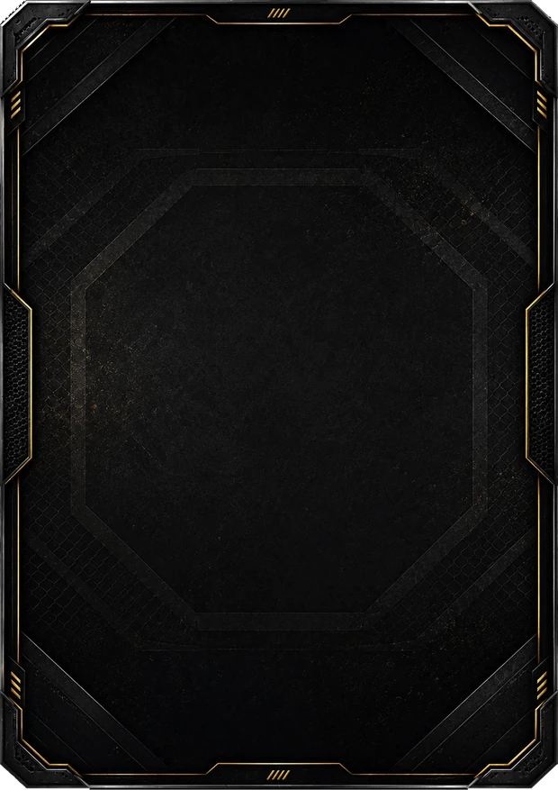
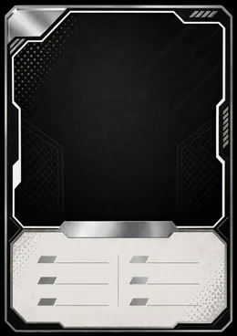
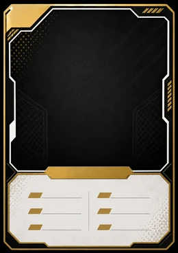

<title>P4P.CG</title>
<meta name="viewport" content="width=device-width, initial-scale=1, maximum-scale=1, user-scalable=no, viewport-fit=cover">
<style>
/* ═══════════════════════════════════════════════════════════════
   PROTOTIPO JUGABLE — juego de cartas de MMA
   Cartas y peleadores 100% inventados.
   ═══════════════════════════════════════════════════════════════ */
/* Oswald: condensada y de peso alto, que es por dónde va la tipografía de la UFC.
   Va dentro de la aplicación, no de un servidor de fuentes: el juego tiene que verse
   igual sin conexión y dentro del APK. 40 KB los dos subconjuntos. */
@font-face{font-family:Saira Condensed;src:url(fuentes/saira-600-latin.woff2) format('woff2');
  font-weight:600;font-display:swap;unicode-range:U+0000-00FF,U+0131,U+0152-0153,U+02BB-02BC,U+02C6,U+02DA,U+02DC,U+2000-206F,U+2122,U+2212}
@font-face{font-family:Saira Condensed;src:url(fuentes/saira-600-latin-ext.woff2) format('woff2');
  font-weight:600;font-display:swap;unicode-range:U+0100-02BA,U+02BD-02C5,U+02C7-02CC,U+02CE-02D7,U+02DD-02FF,U+1E00-1E9F,U+2C60-2C7F,U+A720-A7FF}
@font-face{font-family:Saira Condensed;src:url(fuentes/saira-700-latin.woff2) format('woff2');
  font-weight:700;font-display:swap;unicode-range:U+0000-00FF,U+0131,U+0152-0153,U+02BB-02BC,U+02C6,U+02DA,U+02DC,U+2000-206F,U+2122,U+2212}
@font-face{font-family:Saira Condensed;src:url(fuentes/saira-700-latin-ext.woff2) format('woff2');
  font-weight:700;font-display:swap;unicode-range:U+0100-02BA,U+02BD-02C5,U+02C7-02CC,U+02CE-02D7,U+02DD-02FF,U+1E00-1E9F,U+2C60-2C7F,U+A720-A7FF}
@font-face{font-family:Saira Condensed;src:url(fuentes/saira-800-latin.woff2) format('woff2');
  font-weight:800;font-display:swap;unicode-range:U+0000-00FF,U+0131,U+0152-0153,U+02BB-02BC,U+02C6,U+02DA,U+02DC,U+2000-206F,U+2122,U+2212}
@font-face{font-family:Saira Condensed;src:url(fuentes/saira-800-latin-ext.woff2) format('woff2');
  font-weight:800;font-display:swap;unicode-range:U+0100-02BA,U+02BD-02C5,U+02C7-02CC,U+02CE-02D7,U+02DD-02FF,U+1E00-1E9F,U+2C60-2C7F,U+A720-A7FF}
@font-face{font-family:Barlow;src:url(fuentes/barlow-400-latin.woff2) format('woff2');
  font-weight:400;font-display:swap;unicode-range:U+0000-00FF,U+0131,U+0152-0153,U+02BB-02BC,U+02C6,U+02DA,U+02DC,U+2000-206F,U+2122,U+2212}
@font-face{font-family:Barlow;src:url(fuentes/barlow-400-latin-ext.woff2) format('woff2');
  font-weight:400;font-display:swap;unicode-range:U+0100-02BA,U+02BD-02C5,U+02C7-02CC,U+02CE-02D7,U+02DD-02FF,U+1E00-1E9F,U+2C60-2C7F,U+A720-A7FF}
@font-face{font-family:Barlow;src:url(fuentes/barlow-600-latin.woff2) format('woff2');
  font-weight:600;font-display:swap;unicode-range:U+0000-00FF,U+0131,U+0152-0153,U+02BB-02BC,U+02C6,U+02DA,U+02DC,U+2000-206F,U+2122,U+2212}
@font-face{font-family:Barlow;src:url(fuentes/barlow-600-latin-ext.woff2) format('woff2');
  font-weight:600;font-display:swap;unicode-range:U+0100-02BA,U+02BD-02C5,U+02C7-02CC,U+02CE-02D7,U+02DD-02FF,U+1E00-1E9F,U+2C60-2C7F,U+A720-A7FF}
/* Antonio se queda SOLO para la carta, y está elegida midiendo, no a ojo: los nombres
   de las stats vienen pintados dentro del marco y lo que escribe el juego tiene que
   pasar por la misma. Del recorte de esas etiquetas a resolución completa salen tres
   medidas: van inclinadas 11,4 grados —oblicua sintética, no una itálica dibujada—,
   el palo mide 0,156 de la altura de caja alta —bold condensada, no black— y la caja
   alta es el 3,04% del alto de la carta. Contra esas tres, Antonio 700 es la más
   cercana de las libres: +2,6% de ancho, -3% de grosor, 80,5% de solape de silueta.
   Barlow Condensed 900 sale un 52% demasiado ancha y Big Shoulders 900 demasiado
   gorda; las dos estaban descartadas por medida antes de escribir esto. */
/* TEKO. Es la fuente del boceto, y sale de MEDIRLA, no de mirarla: se recortaron del
   dibujo tres muestras -COLECCIÓN, HISTORIAL y PARTIDAS-, se binarizaron, y se renderizó
   la misma palabra con diez condensadas a la misma caja alta comparando cuánto se solapan
   las siluetas. Teko gana las tres (67,9 / 50,1 / 35,9%) y con el ancho clavado; la
   segunda -Khand- se queda catorce puntos por debajo. Saira Condensed, que es la que
   llevaba el juego, es la quinta.

   Lo que la delata a la vista: la D rectangular, la pata recta de la R y la S escuadrada.

   EL size-adjust NO ES UN CAPRICHO. La caja alta de Teko 600 mide 0,635 em y la de Saira
   Condensed 0,690: puestas al mismo font-size, Teko se ve un 8% más pequeña y todos los
   tamaños medidos sobre el boceto se quedarían cortos. Con 108,7% -que es 0,690/0,635- la
   letra vuelve a medir en pantalla lo que mide en el boceto sin tocar ni un font-size. Si
   un WebView viejo lo ignora, el texto sale un 8% más pequeño y ya está: no rompe nada.

   Va servida desde juego/fuentes/, como las demás, y es una fuente VARIABLE: un solo
   archivo cubre del 400 al 700. */
@font-face{font-family:Teko;src:url(fuentes/teko-latin.woff2) format('woff2');
  font-weight:400 700;font-display:swap;size-adjust:108.7%;
  unicode-range:U+0000-00FF,U+0131,U+0152-0153,U+02BB-02BC,U+02C6,U+02DA,U+02DC,U+0304,U+0308,U+0329,U+2000-206F,U+20AC,U+2122,U+2191,U+2193,U+2212,U+2215,U+FEFF,U+FFFD}
@font-face{font-family:Teko;src:url(fuentes/teko-latin-ext.woff2) format('woff2');
  font-weight:400 700;font-display:swap;size-adjust:108.7%;
  unicode-range:U+0100-02BA,U+02BD-02C5,U+02C7-02CC,U+02CE-02D7,U+02DD-02FF,U+0304,U+0308,U+0329,U+1D00-1DBF,U+1E00-1E9F,U+1EF2-1EFF,U+2020,U+20A0-20AB,U+20AD-20C0,U+2113,U+2C60-2C7F,U+A720-A7FF}
@font-face{font-family:Antonio;src:url(fuentes/antonio-latin.woff2) format('woff2');
  font-weight:100 700;font-display:swap;unicode-range:U+0000-00FF,U+0131,U+0152-0153,U+02BB-02BC,U+02C6,U+02DA,U+02DC,U+2000-206F,U+2122,U+2212}
@font-face{font-family:Antonio;src:url(fuentes/antonio-latin-ext.woff2) format('woff2');
  font-weight:100 700;font-display:swap;unicode-range:U+0100-02BA,U+02BD-02C5,U+02C7-02CC,U+02CE-02D7,U+02DD-02FF,U+1E00-1E9F,U+2C60-2C7F,U+A720-A7FF}
:root{
  --titulo:Teko,"Saira Condensed","Barlow Condensed","Arial Narrow",system-ui,sans-serif;
  --texto:Barlow,system-ui,-apple-system,"Segoe UI",sans-serif;
  /* LA CARTA NUEVA VA CON SAIRA CONDENSED, que es con lo que se montó y aprobó la maqueta.
     Antonio se eligió midiendo las etiquetas impresas del marco VIEJO, y el marco nuevo no
     imprime ninguna: ya no hay nada contra lo que casarla. Los archivos de Antonio se
     quedan por si se recupera. */
  --carta:"Saira Condensed","Barlow Condensed","Arial Narrow",system-ui,sans-serif;
  /* El nombre y los números del boceto son cromados: claro arriba, gris en medio y otra
     vez claro. */
  --cromo:linear-gradient(180deg,#ffffff 0%,#e6e6e6 38%,#9d9da1 55%,#f2f2f2 74%,#b9b9bd 100%);
  /* LA PALETA DEL LOGO NUEVO: negro, carbón y oro. YA NO HAY ROJO.
     Los cinco colores de arriba están medidos sobre originales/logo-v2/logo.png; los
     grises de en medio son interpolaciones entre el negro y el carbón, para tener
     escalones de panel sin salirse de esos cinco.

     --acc y --acc2 SIGUEN LLAMÁNDOSE ASÍ aunque ya no sean rojo: son "el color de
     acento", y renombrarlas obligaría a tocar cien sitios que no cambian de sentido. */
  --bg:#060707; --bg2:#151617; --bg3:#272829; --line:#3d3e40;
  --txt:#f0f0f1; --dim:#a4a5a8; --dim2:#76777a;
  --acc:#c08719; --acc2:#f0c54e; --ok:#5cb572; --warn:#e4b33f;
  --plata:#b9b2ad; --oro:#eabe4a; --corona:#f7e59f;
  --oro-suave:#f7e59f;
  /* El fondo no es un color plano: un foco rojo arriba, como el de encima del octágono. */
  /* El foco rojo de encima del octágono y, debajo, el velo que apaga la foto de la jaula.
     El velo ES TRANSLÚCIDO a propósito: cuando era negro opaco tapaba la foto entera y no
     se veía nada de lo que hay detrás. Lo que apaga la foto es esto, no el archivo, para
     poder subirlo o bajarlo sin volver a generar la imagen. */
  --arena:radial-gradient(120% 80% at 50% 0%, rgba(192,135,25,.20) 0%, transparent 60%),
          linear-gradient(180deg,rgba(8,9,9,.62) 0%,rgba(3,3,3,.82) 100%);
  /* LA MALLA DE OCTÓGONO DEL BOCETO. Es lo que hay detrás de todo: negro con un enrejado
     de rombos apenas visible. Va en CSS y no en una imagen porque tiene que verse igual a
     cualquier tamaño de pantalla y no pesar nada en el APK. */
  --malla:repeating-linear-gradient(45deg,rgba(240,197,78,.055) 0 1px,transparent 1px 44px),
          repeating-linear-gradient(-45deg,rgba(240,197,78,.055) 0 1px,transparent 1px 44px);
  /* El filete de oro es la firma del boceto: TODOS los paneles lo llevan. */
  --filo:rgba(192,135,25,.45);
  --filo-suave:rgba(192,135,25,.26);
  /* LOS PANELES SON OPACOS. Lo eran translúcidos para dejar ver la foto de la jaula entre
     fila y fila; sin foto, el alfa solo dejaba ver el negro de debajo. En el boceto son
     paneles negros con un filete de oro, y eso es lo que son. */
  --tarjeta:linear-gradient(160deg,#191a1c 0%,#0a0b0c 100%);
  --sombra-tarjeta:0 18px 40px -20px rgba(0,0,0,.9);
  --brillo-acc:0 0 30px -6px rgba(192,135,25,.75);
  --brillo-oro:0 0 24px -6px rgba(234,190,74,.6);
}
*{box-sizing:border-box;margin:0;padding:0;-webkit-tap-highlight-color:transparent}
/* Las tres propiedades por separado, NO el atajo: --arena lleva dos degradados separados
   por coma y `background:` no admite eso. Con el atajo la regla entera era inválida y el
   fondo se caía a blanco, en el navegador y en el móvil. */
/* EL FONDO ES NEGRO CON LA MALLA DE OCTÓGONO, como el boceto.

   LA FOTO DE LA JAULA SE FUE, y la quitó él: "EL FONDO DE JAULA QUÍTALO, HAZ ABSOLUTAMENTE
   TODO COMO EN EL BOCETO". Antes era intocable —también por orden suya—, así que si alguna
   vez vuelve a pedirla, el archivo sigue en juego/arte/fondo.webp y su herramienta en
   herramientas/preparar-fondo.mjs. */
body{background-color:var(--bg);
  background-image:var(--malla);
  background-attachment:fixed;background-repeat:repeat;
  color:var(--txt);
  font:15px/1.45 var(--texto);
  /* El hueco para la barra de navegación incluye el área segura del móvil. La barra
     lleva padding-bottom:env(safe-area-inset-bottom) para no quedar debajo de la raya
     de gestos, así que mide más de 64: reservando solo 64 el final de cada pantalla se
     metía por debajo de la barra. */
  overscroll-behavior:none;padding-bottom:calc(64px + env(safe-area-inset-bottom))}
#app{max-width:760px;margin:0 auto;padding:12px 12px 20px;position:relative;z-index:1}
h1,h2,h3{font-family:var(--titulo);font-weight:600;letter-spacing:.005em;text-transform:uppercase}
h2{font-size:19px;margin-bottom:2px}
h3{font-size:15px;margin-bottom:8px}
.sub{color:var(--dim);font-size:13px}
.tiny{font-size:12px;color:var(--dim2)}
button{font:inherit;color:inherit;background:none;border:none;cursor:pointer}
.btn{font-family:var(--titulo);letter-spacing:.03em;background:var(--acc);color:var(--bg);border-radius:9px;padding:11px 16px;font-weight:650;font-size:14px;
  display:inline-flex;align-items:center;justify-content:center;gap:7px;transition:.12s;width:100%}
.btn:active{transform:scale(.975)}
.btn:disabled{opacity:.32;cursor:default;transform:none}
.btn.sec{background:var(--bg3);border:1px solid var(--line)}
.btn.gho{background:transparent;border:1px solid var(--line);color:var(--dim)}
.btn.sm{padding:7px 12px;font-size:13px;width:auto}
.row{display:flex;gap:8px}
.pulsable{cursor:pointer}
.row>*{flex:1}
.card-panel{background:var(--bg2);border:1px solid var(--line);border-radius:13px;padding:14px;margin-bottom:11px}

/* ── barra superior ── */
/* La cabecera se aparta de la barra de estado del móvil —hora, batería, muesca— y la
   barra de abajo de la de gestos. En Android lo resuelve además la propia aplicación
   pidiéndole al sistema cuánto ocupan sus barras; esto es lo que hace falta en iPhone y
   en el navegador, donde no hay aplicación que pregunte. */
#top{display:flex;align-items:center;gap:14px;background:var(--bg);
  padding:calc(11px + env(safe-area-inset-top)) calc(14px + env(safe-area-inset-right)) 11px
          calc(14px + env(safe-area-inset-left));
  border-bottom:1px solid rgba(192,135,25,.20);position:sticky;top:0;z-index:50}
/* EL LOGO DEL JUEGO, no el nombre escrito. Lo mandó cambiar él: "cambia el P4P.CG de la
   esquina superior izquierda por el logo del juego". Es el octógono que pasó, el mismo
   dibujo que ya era el icono de la aplicación, y lo prepara
   herramientas/preparar-logo-v2.mjs en juego/arte/logo-v2.webp.

   CON EL NOMBRE ESCRITO SE VAN SUS CUATRO MEDIDAS, que ya no tienen contra qué resolverse
   porque no queda ni una letra que alinear: el `top:10px` que bajaba el texto hasta que su
   pie caía en la línea del dibujo, el gris #a59e9f del 4 —medido del propio logotipo—, el
   .58em del .CG y la cursiva. Si algún día vuelve el nombre escrito, hay que volver a
   medirlos: están en el historial, no en la cabeza de nadie.

   35 px es EXACTAMENTE lo que medía el hueco que dejaba el nombre escrito, así que la
   cabecera sigue midiendo sus 58 px y no crece. El archivo va a 4x —144 px— para que no se
   ablande en un móvil que pinta a triple densidad. */
#top .logo{flex:none;margin-right:auto;display:flex;align-items:center}
#top .logo img{height:35px;width:auto;display:block}
/* Las dos monedas del boceto: el oro y las gemas. Icono dibujado —no un emoji, que cambia
   de forma en cada sistema— y el número al lado. SIN CHAPA NI RECUADRO: en el boceto van
   sueltas sobre la banda negra. */
.res{display:flex;align-items:center;gap:6px;font-family:var(--titulo);font-size:15px;
  font-weight:700;font-variant-numeric:tabular-nums;white-space:nowrap}
.res .mon{width:18px;height:18px;flex:none;display:block}
/* EL ENGRANAJE VA EN LA CABECERA Y SE VE DESDE CUALQUIER PANTALLA, que es lo que pide el
   boceto. Antes Ajustes era un botón dentro del Club y desde una pantalla de partida no
   había manera de llegar. */
#top .engranaje{flex:none;width:26px;height:26px;color:var(--acc2);
  display:flex;align-items:center;justify-content:center;transition:.12s}
#top .engranaje .ico{width:24px;height:24px;stroke-width:2}
#top .engranaje:active{transform:scale(.88)}

/* LAS DOS PESTAÑAS DE LA TIENDA, CON LA FORMA DEL BOCETO: solapas de carpeta, con el
   canto cortado en diagonal hacia dentro y apoyadas en una raya que cruza la pantalla. No
   son píldoras.

   El filete no puede ser un `border`: con clip-path el borde se dibuja sobre el rectángulo
   y el recorte se lo lleva por delante. Se hace con dos capas recortadas —una de color por
   fuera y el fondo por dentro, metido 2 px—, que es el mismo truco del avatar octogonal.
   La de dentro se queda abierta por abajo a propósito: es lo que hace que la solapa se lea
   apoyada en la raya y no como una caja suelta. */
.subtabs{display:flex;margin:0 0 11px;position:relative;padding-bottom:1px}
.subtabs::after{content:'';position:absolute;left:0;right:0;bottom:0;height:1px;
  background:var(--filo-suave)}
.subtabs button{position:relative;flex:1;height:37px;font-family:var(--titulo);
  letter-spacing:.06em;text-transform:uppercase;font-size:15px;font-weight:700;
  color:var(--txt);display:flex;align-items:center;justify-content:center}
.subtabs button::before{content:'';position:absolute;inset:0;background:var(--line);
  clip-path:var(--corte)}
.subtabs button::after{content:'';position:absolute;inset:2px 2px 0;background:#0d0e0f;
  clip-path:var(--corte)}
.subtabs button > span{position:relative;z-index:1}
.subtabs button:first-child{--corte:polygon(9px 0,calc(100% - 15px) 0,100% 100%,0 100%);
  z-index:2}
.subtabs button:last-child{--corte:polygon(15px 0,calc(100% - 9px) 0,100% 100%,0 100%);
  margin-left:-13px}
.subtabs button.on{color:var(--acc2);z-index:3}
.subtabs button.on::before{background:linear-gradient(180deg,var(--acc2),var(--acc))}
.subtabs button.on::after{background:linear-gradient(180deg,#100d05,#1c1508)}

/* La FILA: el patrón de toda la navegación nueva. La fila entera es el botón — no lleva
   un botón dentro. Un botón dentro de una fila que también responde al toque son dos
   blancos para lo mismo, y el jugador nunca sabe cuál toca. */
.fila{display:flex;align-items:center;gap:11px;width:100%;text-align:left;
  background-image:var(--tarjeta);
  border:1px solid var(--filo);border-radius:14px;
  box-shadow:var(--sombra-tarjeta);overflow:hidden;position:relative;
  padding:11px 12px;margin-bottom:8px;
  transition:transform .18s ease, box-shadow .18s ease, border-color .18s ease}
.fila:active{transform:scale(.975);border-color:var(--acc2);box-shadow:var(--brillo-acc)}
/* La trama del octágono, tenue, sobre cada tarjeta: es lo que las saca de parecer cajas
   grises y las mete dentro de la jaula. */
.fila::before{content:'';position:absolute;inset:0;pointer-events:none;
  background-image:linear-gradient(60deg, rgba(234,190,74,.08) 1px, transparent 1px),
                   linear-gradient(-60deg, rgba(234,190,74,.08) 1px, transparent 1px);
  background-size:46px 80px}
.fila > *{position:relative;z-index:1}
.fila .ic{flex:none;font-size:23px;line-height:1}
.fila .cu{flex:2;min-width:0}
.fila .cu b{font-family:var(--titulo);letter-spacing:.05em;text-transform:uppercase;
  font-weight:700;font-size:15px}
.fila .cu .sub{font-size:11.5px;line-height:1.35}
.fila .der{flex:none;display:flex;align-items:center;gap:7px;color:var(--dim2)}
.fila .precio{font-family:var(--titulo);font-weight:700;font-size:14px;color:var(--txt);
  background:var(--bg3);border-radius:7px;padding:5px 9px;white-space:nowrap}
/* Sin fichas: se sigue leyendo entera y con su precio, pero no responde. */
.fila.apagada{opacity:.62}
.fila.apagada:active{transform:none;filter:none}
.fila.alerta{border-color:var(--acc)}
.fila.grande{padding:15px 13px}
.fila.grande .cu b{font-size:18px}
/* Dos mitades exactamente iguales. */
.mitades{display:flex;gap:18px;min-height:0;flex:1 1 0}
.mitades .fila{flex:1 1 0;min-width:0;margin:0}

/* LA PILA. Los bloques de una sección se reparten TODO el alto que queda, en vez de
   apilarse arriba dejando media pantalla muerta debajo. El alto libre lo mide
   ajustarRejillas(), igual que hace con las rejillas de cartas. */
/* Las tarjetas se reparten el alto, pero con TOPE: sin él, en una pantalla con pocas
   filas cada una se estira hasta parecer un cartel. Con tope quedan a un tamaño que se
   lee de un vistazo y lo que sobra se convierte en aire, repartido arriba y abajo. */
.pila{display:flex;flex-direction:column;gap:14px;justify-content:center}
.pila > *{max-height:186px}
/* LA COLUMNA VA A 1fr Y NO A `auto`, y no es cosmético: `.pila` lleva
   justify-content:center, que en una rejilla centra la PISTA, y una pista `auto` se encoge
   hasta el ancho de su contenido. Al dejar la descripción del sobre en "5 cartas", el
   contenido se estrechó y las cinco filas se quedaron a 295 px centradas en 366. Con 1fr
   la fila ocupa el ancho entero diga lo que diga dentro. */
.pila.tienda{display:grid;grid-template-columns:1fr;
  grid-template-rows:repeat(var(--filas,3),1fr);
  gap:14px;align-content:start}
/* El tope es para los MENÚS. Donde lo que hay es UNA cosa que mirar —el sobre antes de
   abrirlo— no hay nada que topar: que ocupe lo que haya. */
.pila.libre{gap:0}
.pila.libre > *{max-height:none}
/* La pila de la interfaz nueva. La de siempre reparte el alto a partes iguales entre sus
   hijos y les pone un tope de 186 px, que es lo que hace falta cuando todos son tarjetas
   de menú del mismo tamaño. Aquí no: los bloques del boceto miden cosas distintas —la
   ficha del jugador es una línea y el banner de JUGAR manda—, así que cada uno lleva su
   peso y el tope se quita. */
.pila.v2{gap:10px;justify-content:flex-start}
.pila.v2 > *{max-height:none;flex:0 0 auto}
.pila.v2 > .crece{flex:1 1 0;min-height:0}
.pila.v2 > .crece > .sobre-fila.menu{height:100%}
.pila > *{flex:1 1 0;min-height:0;margin:0}
/* Dentro de un bloque estirado, el contenido se centra en vertical. */


/* LA TARJETA DE SOBRE. Copiada de la referencia: el texto a la izquierda, el arte del
   sobre a la derecha y SALIÉNDOSE de la tarjeta por arriba y por abajo, y el precio en
   una píldora que monta sobre el borde inferior.

   No se estiran a pantalla completa. Son una LISTA: se comparan entre ellas de un
   vistazo, y para eso tienen que caber varias a la vez y medir todas lo mismo. */
.sobre-fila{position:relative;margin:0 0 14px;flex:0 0 auto}
/* En la pila de la tienda las tarjetas se estiran y el margen lo pone el hueco. */
.pila.tienda > .sobre-fila{flex:1 1 0;min-height:0;margin:0;max-height:none}
.pila.tienda > .sobre-fila > .fila{height:100%}
/* En una pila —Inicio, Jugar, Club— las tarjetas SÍ se reparten el alto: ahí no hay nada
   que comparar entre ellas, hay que llegar a todas de un vistazo y sin hueco muerto. */
.pila > .sobre-fila{flex:1 1 0;min-height:0;margin:0}
.pila > .sobre-fila > .fila{height:100%}
/* Medido sobre el boceto: la fila ocupa 96 px de un móvil de 706 de alto —114 en uno de
   844— y el sobre llena el 92% de ese alto. El texto arranca donde acaba el arte y deja
   libre la esquina de abajo a la derecha, que es donde va el precio. */
.sobre-fila .fila{position:relative;align-items:center;overflow:visible;
  min-height:114px;padding:13px 14px 13px 104px;margin:0;
  /* El degradado sale del sistema. Escrito aquí a mano pisaba al de .fila por
     especificidad, y las tarjetas se quedaban azules mientras el resto era granate. */
  background-image:var(--tarjeta)}
.sobre-fila .fila .ic{display:none}
/* El nombre del sobre NO va en cursiva: en el boceto es recto, como los demás títulos de
   fila. La cursiva era del diseño anterior. */
.sobre-fila .fila .cu b{display:block;font-size:20px;line-height:1.15;margin-bottom:4px;
  font-style:normal;letter-spacing:.045em}
/* El nombre se para antes de la (i) de la esquina: SOBRE LEGENDARIO llegaba a metérsele
   por debajo. */
.pila.tienda .sobre-fila .fila .cu b{padding-right:42px}
.sobre-fila .fila .cu .sub{font-size:13px;line-height:1.4}
/* El arte, saliéndose de la caja: es lo que hace que el sobre se lea como un objeto y
   no como un icono metido en una celda. */
.sobre-art{position:absolute;left:9px;top:5%;bottom:5%;width:88px;
  pointer-events:none;display:flex;align-items:center;justify-content:center}
.sobre-art img{max-width:100%;max-height:100%;width:auto;height:auto;
  filter:drop-shadow(0 7px 15px rgba(0,0,0,.65))}
/* Los botones de menú usan la MISMA tarjeta que los sobres; donde el sobre lleva su arte,
   ellos llevan su icono. Un solo patrón para toda la navegación: si mañana cambia la
   tarjeta, cambian todos a la vez y no se van separando unos de otros. */
/* EL TILE, como en el diseño: el nombre arriba a la izquierda, el dibujo centrado en el
   hueco que sobra, y la cuenta en una píldora montada sobre el borde de abajo. */
.ico{width:1em;height:1em;display:block;flex:none}
.sobre-fila.menu{margin:0;height:100%}
.sobre-fila.menu .fila{flex-direction:column;align-items:stretch;justify-content:flex-start;
  height:100%;gap:0;padding:13px 14px;border-color:rgba(192,135,25,.55)}
.sobre-fila.menu .cu{flex:0 0 auto}
/* En cursiva y algo más grandes que el resto de la interfaz, como el JUGAR del banner,
   pero muy lejos de su tamaño: ese es el botón principal y tiene que seguir mandando. */
.sobre-fila.menu .cu b{display:block;font-size:21px;line-height:1.1;font-style:italic}

.sobre-fila.menu .cu .sub{display:block;font-size:12px;line-height:1.35;margin-top:1px}
/* El dibujo se queda con lo que sobre, centrado, y nunca empuja al texto. */
.sobre-fila.menu .sobre-art{position:static;width:auto;flex:1 1 0;min-height:0;
  display:flex;align-items:center;justify-content:center;gap:10px;margin-top:6px}
.sobre-fila.menu .sobre-art.icono{font-size:min(15vw,50px);color:var(--oro);
  filter:drop-shadow(0 6px 14px rgba(0,0,0,.55))}
.sobre-fila.menu .sobre-art.icono .ico{stroke-width:1.25}
/* Un peleador recortado dentro de un tile normal, donde iba el icono. Se apoya abajo y se
   come 8 px de relleno por arriba y por abajo: encajado en el hueco a secas se queda
   pequeño al lado del nombre. */
.sobre-fila.menu .sobre-art.retrato{margin:-8px -10px;align-items:flex-end}
.sobre-fila.menu .sobre-art.retrato img{width:100%;height:100%;max-width:none;max-height:none;
  object-fit:contain;object-position:bottom center}
.sobre-fila.menu.media .sobre-art.icono{font-size:min(11vw,40px)}
.sobre-fila.menu.media .sobre-art.icono .ico{stroke-width:1.5}
.sobre-fila.menu.media .cu b{font-size:19px}
.sobre-fila.menu .precio{transform:translateX(-50%);left:50%;right:auto;bottom:-13px;top:auto}
.mitades .sobre-fila{flex:1 1 0;min-width:0}
.sobre-fila .fila.alerta{border-color:var(--acc)}
.sobre-fila.menu .fila.alerta .sobre-art.icono{color:var(--acc2)}
.centrado{display:flex;flex-direction:column;align-items:center;justify-content:center}
.sobre-art .ico.rojo{color:var(--acc2)}
.sobre-art .ico.suelto{color:var(--oro);width:36px;height:36px;stroke-width:1.5}

/* EL ABANICO: tres cartas, la del medio delante y las otras dos giradas. */
.abanico{display:flex;align-items:center;justify-content:center;height:100%;min-height:0}
.abanico img{height:74%;max-height:100%;width:auto;object-fit:contain;
  filter:drop-shadow(0 6px 14px rgba(0,0,0,.6))}
.abanico img:first-child{transform:rotate(-10deg);margin-right:-16px}
.abanico img:nth-child(2){height:100%;position:relative;z-index:2}
.abanico img:last-child{transform:rotate(10deg);margin-left:-16px}

/* EL BANNER: el peleador recortado a la derecha y el nombre a la izquierda, en cursiva.

   El peleador va SUELTO, con su transparencia, y por detrás se ve el fondo general del
   juego a través de la tarjeta. Nada de object-fit:cover, que estiraría un recorte, ni
   velo negro por encima, que taparía justo lo que se quiere enseñar. Se apoya abajo y a
   la derecha, y arranca en el 30% para dejarle sitio al nombre.

   El hueco del dibujo se sale un 17% por debajo de la tarjeta A PROPÓSITO: encajándolo
   entero, el alto de la tarjeta manda y Conor se queda pequeño. Saliéndose, entra un 17%
   más grande y lo que se pierde por abajo es el pantalón, que es justo por donde lo
   cortaba el banner de antes. Lo recorta el overflow:hidden de la fila. */
.sobre-fila.banner .fila{padding:0;position:relative;overflow:hidden}
.sobre-fila.banner .sobre-art{position:absolute;top:2px;right:14px;bottom:-17%;left:30%;
  margin:0;width:auto;gap:0}
.sobre-fila.banner .sobre-art img{width:100%;height:100%;object-fit:contain;
  object-position:bottom right;max-width:none;max-height:none;
  filter:drop-shadow(0 8px 20px rgba(0,0,0,.7))}
.sobre-fila.banner .cu{position:absolute;left:16px;top:13px;right:38%;z-index:2}
.sobre-fila.banner .cu b{font-size:min(9.5vw,36px);font-style:normal;font-weight:800;
  letter-spacing:.01em;line-height:1;text-shadow:0 4px 18px rgba(0,0,0,.85)}
.sobre-fila.banner .cu .sub{display:block;font-size:13px;color:var(--dim);margin-top:3px;
  text-shadow:0 2px 10px rgba(0,0,0,.9)}

/* El rótulo dorado en cursiva del SBC. */
.rotulo-oro{font-family:var(--titulo);font-weight:800;font-style:italic;text-transform:uppercase;
  font-size:15px;letter-spacing:.02em;margin-top:7px;
  background-image:linear-gradient(100deg,var(--oro-suave),var(--oro));
  -webkit-background-clip:text;background-clip:text;color:transparent}
/* El anillo con el porcentaje de colección. */
.anillo{display:grid;place-items:center;width:58px;height:58px;border-radius:50%;
  border:2px solid rgba(192,135,25,.55);background:rgba(6,7,7,.55);
  box-shadow:var(--brillo-oro);font-family:var(--titulo);font-weight:800;font-size:18px}

/* LA TARJETA CON FOTO. La de JUGAR lleva al luchador de fondo, degradado hacia la
   izquierda para que el texto siga leyéndose encima sin ponerle una caja detrás. */
.sobre-fila.foto .fila{background-image:var(--tarjeta)}
.sobre-fila.foto .sobre-art{width:62%;right:0;top:0;bottom:0}
.sobre-fila.foto .sobre-art img{width:100%;height:100%;object-fit:cover;object-position:center 22%;
  max-width:none;max-height:none;border-radius:0;filter:none;
  -webkit-mask-image:linear-gradient(90deg,transparent 0%,#000 42%);
          mask-image:linear-gradient(90deg,transparent 0%,#000 42%)}
.sobre-fila.foto .cu b{font-size:26px;letter-spacing:.02em}
.sobre-fila.foto .cu .sub{font-size:12.5px}
/* La píldora del precio monta sobre el borde de abajo, centrada en la parte de texto. */
.sobre-fila button.precio:active{background:var(--acc);border-color:var(--acc);color:var(--bg)}
/* EL PRECIO VA ABAJO A LA DERECHA y con la moneda dibujada dentro, como en el boceto: una
   chapa con filete de oro, no una píldora gris centrada en el costado. */
.sobre-fila .precio{position:absolute;right:12px;bottom:11px;
  z-index:3;font-family:var(--titulo);font-weight:700;font-size:17px;letter-spacing:.03em;
  font-variant-numeric:tabular-nums;
  background:#0b0c0d;border:1px solid var(--filo);border-radius:9px;
  padding:5px 13px;white-space:nowrap;color:var(--txt);box-shadow:var(--sombra-tarjeta);
  display:flex;align-items:center;gap:7px}
.sobre-fila .precio .mon{width:17px;height:17px;flex:none;display:block}
.sobre-fila .fila .der{display:none}
.sobre-fila.apagada{opacity:.62}
/* EL CARTEL DE PRÓXIMAMENTE. Una banda cruzada de lado a lado de la fila, con sus dos
   filetes de oro. El sobre se sigue viendo entero por detrás —él pidió que no se quitaran
   de la tienda—, pero ni la fila ni el precio responden: un sobre que todavía no existe
   no puede cobrarse.

   La fila apagada se sube al 72%: con el cartel encima, al 62% no se leía ni una cosa ni
   la otra. */
.sobre-fila.pronto.apagada{opacity:.72}
.sobre-fila.pronto .cartel{position:absolute;left:1px;right:1px;bottom:1px;z-index:5;
  pointer-events:none;
  background:#0b0c0d;border-top:1px solid var(--acc);border-radius:0 0 13px 13px;
  font-family:var(--titulo);font-weight:700;font-size:16px;letter-spacing:.22em;
  text-transform:uppercase;text-indent:.22em;color:var(--acc2);text-align:center;
  padding:6px 0 7px}
/* VA AL PIE Y NO CRUZANDO POR EN MEDIO: en medio partía el nombre del sobre por la mitad
   y no se leía ni una cosa ni la otra. Abajo tapa el precio, que es justo lo que tiene que
   pasar: un sobre que no se puede comprar no anuncia lo que cuesta. */
/* El precio no se pinta: asomaba por encima de la banda, y de todas formas un sobre que
   no se puede comprar no tiene por qué decir lo que va a costar. */
.sobre-fila.pronto .precio{display:none}
/* EL SOBRE NO SE ENCOGE POR LLEVAR CARTEL. El cartel le pasa por delante, que es lo que
   hace un cartel. Se probó a subirle el pie para que cupiera entero por encima de la
   banda y los dos de abajo se veían más pequeños que los otros tres de la misma lista;
   lo dijo él y tenía razón. */
.sobre-fila.pronto .fila{padding-bottom:38px}

/* La (i), en la esquina de arriba. Es la única excepción a que la fila entera sea el
   botón, y va FUERA de ella para que tocarla no dispare también la fila. */
.info{position:absolute;top:10px;right:11px;z-index:4;
  width:26px;height:26px;border-radius:50%;
  display:flex;align-items:center;justify-content:center;
  font-family:var(--titulo);font-weight:700;font-size:15px;line-height:1;
  color:var(--txt);background:rgba(0,0,0,.45);border:1.5px solid var(--dim2)}
.info:active{background:var(--acc);border-color:var(--acc);color:var(--bg)}

/* El sobre de la pantalla de apertura. Grande y solo: lo único que se puede tocar ahí. */
.sobre-toque{display:flex;flex-direction:column;align-items:center;justify-content:center;
  gap:10px;width:100%;background:var(--bg2);border:1px solid var(--line);border-radius:14px;
  padding:26px 14px;margin-bottom:10px}
.sobre-toque:active{transform:scale(.985);filter:brightness(1.15)}
.sobre-toque[disabled]{opacity:.45}
/* LA PANTALLA DEL SOBRE.

   El sobre se mira sobre un fondo liso y oscuro, y ya está. Antes cruzaban la pantalla
   unos arcos que se encendían del color del nivel al abrir; se han quitado. */
.escena{position:fixed;inset:0;z-index:0;pointer-events:none;overflow:hidden;
  /* Negro con un foco de oro apenas encendido, como el resto de la interfaz. El azul de
     antes venía de la paleta vieja y al lado del sobre cantaba. */
  background:radial-gradient(120% 90% at 50% 44%, #14120c 0%, #060707 68%);
  opacity:0;transition:opacity .3s ease}
.escena.puesta{opacity:1}

/* El sobre: sin caja, solo él. */
.sobre-toque{display:flex;flex-direction:column;align-items:center;justify-content:center;
  gap:14px;width:100%;background:none;border:0;padding:0;margin:0;min-height:0}
.sobre-toque[disabled]{opacity:.5}
.sobre-arte{max-width:82%;max-height:100%;width:auto;height:auto;min-height:0;
  filter:drop-shadow(0 14px 34px rgba(0,0,0,.8));
  transition:transform .55s cubic-bezier(.2,.7,.3,1), filter .55s ease}
.sobre-toque:active .sobre-arte{transform:scale(.975)}
.sobre-pie{font-family:var(--titulo);letter-spacing:.06em;text-transform:uppercase;
  font-size:12px;color:var(--dim)}
/* En la pantalla del sobre la (i) va arriba a la derecha, sobre la escena. */
@media (prefers-reduced-motion:reduce){
  .escena,.sobre-arte{transition-duration:.01ms}
}
.sobre-pie{font-family:var(--titulo);letter-spacing:.06em;text-transform:uppercase;
  font-size:12px;color:var(--dim)}

/* ── navegación ── */
#nav{position:fixed;bottom:0;left:0;right:0;display:flex;
  background:#0a0b0c;border-top:1px solid rgba(192,135,25,.20);
  z-index:50;padding-bottom:env(safe-area-inset-bottom)}
#nav button{position:relative;font-family:var(--titulo);letter-spacing:.04em;
  text-transform:uppercase;
  flex:1;min-width:0;padding:9px 1px 10px;font-size:10.5px;color:var(--dim2);
  display:flex;flex-direction:column;align-items:center;gap:4px;font-weight:600}
#nav button .ic{display:block;line-height:0}
#nav button .ic .ico{width:23px;height:23px;stroke-width:1.75}
/* La pestaña activa, como en el boceto: su celda con fondo propio y un filete de oro
   arriba, no sólo el color del icono. Con cinco botones y el rótulo a 10 px, el color
   solo no basta para localizarla de un vistazo. */
#nav button.on{color:var(--acc2);background:rgba(192,135,25,.10)}
#nav button.on::before{content:'';position:absolute;top:0;left:0;right:0;height:2px;
  background:var(--acc2)}
#nav .badge{position:absolute;transform:translate(15px,-4px);background:var(--acc);color:var(--bg);
  border-radius:9px;font-size:9px;padding:1px 5px;font-weight:700}

/* ══ LOS BLOQUES DE LA INTERFAZ NUEVA ══════════════════════════════════════
   Salen del boceto que pasó el dueño (originales/interfaz-v2/boceto-pantallas.png).
   Del dibujo se toma la DISTRIBUCIÓN y el lenguaje visual —paneles negros y carbón,
   filetes e iconos en oro, texto en blanco y oro—, no sus números, que son de ejemplo.

   MARCA "PENDIENTE": el boceto enseña cosas que el juego todavía no tiene —nivel y XP,
   pase de temporada, racha, rango, eventos, historial…—. Esos bloques se pintan en su
   sitio, con su forma, y llevan esta chapa. Así se ve la estructura entera sin inventarse
   números que parecerían de verdad. */
.pdte{font-family:var(--titulo);font-size:9px;font-weight:700;letter-spacing:.10em;
  text-transform:uppercase;color:var(--acc);border:1px solid rgba(192,135,25,.55);
  border-radius:5px;padding:1px 5px;line-height:1.35;white-space:nowrap}
.blq.esperando{opacity:.62}

/* Un bloque con su título en oro y, a la derecha, su enlace o su reloj. */
.blq{background:var(--tarjeta);border:1px solid var(--line);border-radius:15px;
  padding:11px 12px;box-shadow:var(--sombra-tarjeta);
  display:flex;flex-direction:column;min-height:0}
.blq > .bt{display:flex;align-items:center;gap:8px;margin-bottom:9px;flex:none}
.blq > .bt h3{margin:0;font-size:13px;letter-spacing:.09em;color:var(--acc2);flex:1;
  min-width:0;overflow:hidden;text-overflow:ellipsis;white-space:nowrap}
.blq > .bt .mas{font-family:var(--titulo);font-size:11px;font-weight:700;letter-spacing:.07em;
  text-transform:uppercase;color:var(--dim);display:flex;align-items:center;gap:4px}
.blq > .bt .reloj{font-family:var(--titulo);font-size:11.5px;font-weight:700;color:var(--acc2);
  display:flex;align-items:center;gap:4px}
.blq > .bt .reloj .ico{width:13px;height:13px}
.blq > .cuerpo{flex:1 1 auto;min-height:0;display:flex}

/* ── La tarjeta del jugador: avatar, nombre, nivel y barra de XP ── */
.jug{display:flex;align-items:center;gap:12px;flex:none}
/* UN CÍRCULO, no un octógono. Que el juego vaya de MMA no obliga a que todo tenga forma
   de jaula, y el dueño lo dijo con esas palabras. El filete de oro se hace con un borde
   normal, que en un círculo sí funciona. */
.jug .cara{position:relative;width:58px;height:58px;flex:none;padding:0;
  border:2px solid var(--acc);border-radius:50%;background:var(--bg3);overflow:hidden;
  display:flex;align-items:center;justify-content:center;box-shadow:var(--brillo-acc)}
.jug .cara i{position:absolute;inset:0;overflow:hidden;border-radius:50%;
  display:flex;align-items:center;justify-content:center}
/* EL ENCUADRE DE LA CARA SALE DE MEDIR LAS 357 FOTOS, no de ajustarlo a ojo. Midiendo el
   ancho opaco fila a fila en veinte al azar: la cara -la fila más ancha de la cabeza- cae
   de media en el píxel 85 de 551, el cuello en el 146 y el hombro en el 180. Para que
   entre la cabeza entera con aire y un poco de hombro, la ventana va del -10 al 210, o sea
   220 px de los 551; metidos en el octógono de 54 eso es un factor de 0,245, que deja la
   foto a 164% de ancho y su borde de arriba en el 4,6%.

   Antes iba a 235% y cortaba la coronilla y la barbilla. */
.jug .cara img{position:absolute;width:164%;height:auto;
  transform:translateX(-50%);max-width:none}
.jug .cara .ico{width:26px;height:26px;color:var(--dim2)}
.jug .cara:active{transform:scale(.94)}

/* LA REJILLA DE CARAS para elegir la foto de perfil. Las caras van recortadas en octógono,
   igual que en la ficha, para que se vea cuál va a ser el resultado antes de tocarla. */
.caras{display:grid;grid-template-columns:repeat(auto-fill,minmax(76px,1fr));gap:9px;
  max-height:52vh;overflow-y:auto;padding:2px}
.cara-op{display:flex;flex-direction:column;align-items:center;gap:5px;padding:0}
.cara-op .mini{position:relative;width:100%;aspect-ratio:1;overflow:hidden;
  background:var(--bg3);border:1px solid var(--line);border-radius:50%;
  display:flex;align-items:center;justify-content:center}
.cara-op .mini img{position:absolute;width:164%;height:auto;
  transform:translateX(-50%);max-width:none}
.cara-op .nm{font-family:var(--titulo);font-size:11px;font-weight:600;line-height:1.15;
  color:var(--dim);text-align:center;max-width:100%;overflow:hidden;text-overflow:ellipsis;
  white-space:nowrap}
.cara-op.on .mini{border-color:var(--acc2);box-shadow:var(--brillo-acc)}
.cara-op.on .nm{color:var(--acc2)}
.cara-op:active{transform:scale(.95)}
.jug .qn{flex:1;min-width:0}
.jug .qn .nv{font-family:var(--titulo);font-weight:700;font-size:19px;letter-spacing:.03em;
  text-transform:uppercase;display:flex;align-items:center;gap:8px}
.jug .qn .xp{display:block;font-size:11px;color:var(--dim);font-variant-numeric:tabular-nums;
  margin-top:2px}
.jug .chapa{flex:none;width:46px;text-align:center;font-family:var(--titulo);
  border:1px solid rgba(192,135,25,.55);border-radius:10px;padding:3px 0}
.jug .chapa small{display:block;font-size:8px;letter-spacing:.08em;color:var(--acc);
  text-transform:uppercase}
.jug .chapa b{display:block;font-size:17px;font-weight:800;line-height:1.1}
/* display:block A PROPÓSITO. La barra es un <span>, y a un elemento en línea no se le
   puede dar alto: se quedaba con el alto de su línea -58 px-, estiraba la columna del
   nombre por encima del panel y el nombre se salía de la ficha del jugador. */
.barra{display:block;height:6px;border-radius:99px;background:var(--bg3);
  overflow:hidden;margin-top:6px}
.barra i{display:block;height:100%;border-radius:99px;
  background:linear-gradient(90deg,var(--acc),var(--acc2))}

/* ── Rejilla de cifras: TU PROGRESO y la fila de estadísticas del Perfil ── */
.cifras{display:grid;grid-template-columns:repeat(4,1fr);gap:1px;background:var(--line);
  border-radius:11px;overflow:hidden;flex:1}
.cifras > span{background:var(--bg2);padding:7px 3px;text-align:center;
  display:flex;flex-direction:column;align-items:center;justify-content:center;gap:2px}
.cifras small{font-size:8.5px;letter-spacing:.07em;text-transform:uppercase;color:var(--dim2);
  font-family:var(--titulo);font-weight:600}
.cifras b{font-family:var(--titulo);font-size:18px;font-weight:800;line-height:1;
  font-variant-numeric:tabular-nums}
.cifras b.chico{font-size:12px;letter-spacing:.02em}

/* ── ACTIVIDAD DIARIA: tres celdas iguales, cada una con su acción ── */
.diaria{display:grid;grid-template-columns:repeat(3,1fr);gap:8px;flex:1}
.diaria > div{border:1px solid var(--line);border-radius:11px;background:var(--bg2);
  padding:7px 6px;display:flex;flex-direction:column;align-items:center;
  justify-content:space-between;gap:5px;text-align:center;min-width:0}
.diaria .et{font-family:var(--titulo);font-size:9.5px;font-weight:700;letter-spacing:.06em;
  text-transform:uppercase;color:var(--dim);line-height:1.15}
.diaria .ico{width:26px;height:26px;color:var(--acc2)}
.diaria .btn{padding:5px 8px;font-size:10.5px;letter-spacing:.06em;text-transform:uppercase;
  border-radius:7px}
.diaria .btn.gho{color:var(--acc2);border-color:rgba(192,135,25,.55)}
.diaria .cuenta{font-family:var(--titulo);font-size:15px;font-weight:800;line-height:1}

/* ── NOVEDADES: el carrusel, con sus puntos debajo ── */
.novedad{flex:1;border-radius:11px;overflow:hidden;position:relative;
  border:1px solid var(--line);background:var(--bg3);
  display:flex;flex-direction:column;justify-content:flex-end;padding:9px 11px;min-height:64px}
.novedad .fondo{position:absolute;inset:0;background:
  radial-gradient(120% 110% at 78% 30%,rgba(192,135,25,.28) 0%,transparent 62%),
  linear-gradient(100deg,rgba(6,7,7,.92) 34%,rgba(39,40,41,.55) 100%)}
.novedad > *{position:relative}
.novedad .ep{font-family:var(--titulo);font-size:9.5px;letter-spacing:.10em;color:var(--acc2);
  text-transform:uppercase;font-weight:700}
.novedad .tt{font-family:var(--titulo);font-size:20px;font-weight:800;letter-spacing:.02em;
  text-transform:uppercase;line-height:1.05}
.puntos{display:flex;gap:4px;justify-content:center;margin-top:6px;flex:none;height:5px;
  align-items:center}
.puntos i{width:5px;height:5px;border-radius:50%;background:var(--line)}
.puntos i.on{background:var(--acc2);width:13px;border-radius:99px}

/* ── MI PLANTILLA: la tira de cinco cartas con su media ── */
.tira{display:flex;gap:0;flex:1;min-height:0;align-items:flex-end;justify-content:center;
  padding-top:5px}
.tira .hueco{flex:1 1 0;min-width:0;display:flex;flex-direction:column;
  align-items:stretch;justify-content:flex-end;gap:4px}
/* El solape va CORTO. A -11 px la carta de al lado tapaba media letra del nombre de la
   anterior y la tira se leía a trozos; a -4 se sigue viendo que es un montón y los nombres
   se leen enteros. */
.tira .hueco + .hueco{margin-left:-4px}
.tira .hueco > .carta{width:100%}
/* La del medio, más grande y por delante: es la que manda en el boceto. */
.tira .hueco.jefa{z-index:2}
.tira .hueco.jefa > .carta{transform:scale(1.06);transform-origin:bottom center}
.tira .hueco:not(.jefa) > .carta{filter:brightness(.86)}
.tira .med{text-align:center}
.tira .med{font-family:var(--titulo);font-size:12px;font-weight:800;color:var(--acc2);
  line-height:1;flex:none}
.tira .vacia{flex:1;width:100%;border:1px dashed var(--line);border-radius:7px}

/* ── Fila de lista: icono en oro, título, subtítulo y galón. Es la fila del boceto en
      Desafíos y en Perfil, más baja que las tarjetas de menú. ── */
.lista{display:flex;flex-direction:column;gap:8px;min-height:0}
.lista.crece > .fila,.lista.crece > .blq{flex:1 1 0;min-height:52px;max-height:104px}
.lista.alta.crece > .fila,.lista.alta.crece > .blq{max-height:128px}
.lista.crece > .grupo{flex:var(--n,1) 1 0;min-height:52px}
.lista.crece > .fila:not(.emblema){max-height:76px}
.lista.crece > .rot{flex:0 0 auto}
.lista .fila{padding:10px 12px;border-radius:13px}
.lista .fila .ic{width:32px;height:32px;flex:none;color:var(--acc);
  display:flex;align-items:center;justify-content:center;font-size:0}
.lista .fila .ic .ico{width:27px;height:27px;stroke-width:1.6}
.lista .fila .cu b{font-size:15px;letter-spacing:.05em}
.lista .fila .cu .sub{display:block;font-size:11.5px;color:var(--dim);margin-top:1px}
.lista .fila .der{flex:none;display:flex;align-items:center;color:var(--acc);line-height:0}
.lista .fila .der .ico{width:20px;height:20px;stroke-width:2.4}

/* DOS CLASES DE FILA, y son las dos del boceto:

   · CON EMBLEMA (Club y Desafíos) — cada fila es su propio panel con filete de oro, el
     texto a la izquierda y un emblema grande en oro a la derecha. Sin galón: el emblema
     ya dice que se entra.
   · EN GRUPO (Perfil) — varias filas dentro de UN solo panel, separadas por una raya fina,
     con el icono pequeño a la izquierda y el galón a la derecha. Es lo que hace que
     Ajustes, Cuenta y Ayuda se lean como un bloque y no como tres botones sueltos.

   Las medidas salen de medir el boceto: las filas del Club ocupan el 10,6% del alto del
   móvil, las de Desafíos entre el 14 y el 17%, y las de Perfil el 8,6% las de arriba y el
   6,8% las de abajo. */
.lista .fila.emblema{padding:12px 14px}
.lista .fila.emblema .em{flex:none;height:84%;max-height:96px;
  display:flex;align-items:center;justify-content:flex-end}
.em img{height:100%;width:auto;max-width:112px;object-fit:contain;display:block}
.em.chico{height:38px;flex:none;display:flex;align-items:center}
.em.chico img{height:100%;width:auto;display:block}
.lista .fila.emblema .cu b{font-size:17px;letter-spacing:.045em}
.lista .fila.emblema .cu .sub{display:block;font-size:12px;color:var(--dim);margin-top:3px}

.grupo{background-image:var(--tarjeta);border:1px solid var(--filo);border-radius:14px;
  box-shadow:var(--sombra-tarjeta);overflow:hidden;display:flex;flex-direction:column;
  min-height:0}
.grupo > .fila{border:0;border-radius:0;background:none;box-shadow:none;margin:0;
  padding:11px 14px;flex:1 1 0;min-height:46px}
.grupo > .fila + .fila{border-top:1px solid rgba(192,135,25,.20)}
.grupo > .fila::before{display:none}
.grupo > .fila:active{transform:none;background:rgba(192,135,25,.09);box-shadow:none}

/* Rótulo de sección dentro de una lista. */
.rot{font-family:var(--titulo);font-size:10px;font-weight:700;letter-spacing:.11em;
  text-transform:uppercase;color:var(--dim2);padding:2px 3px 0;flex:none;
  display:flex;align-items:center;gap:7px}
.rot::after{content:'';flex:1;height:1px;background:var(--line)}


/* ── CARTA ──
   La carta es el marco (una imagen) con el texto colocado encima en porcentajes, así
   que se ve igual a cualquier tamaño: no hay una versión por tamaño, hay una sola que
   escala. Las medidas salen de medir los huecos del propio marco, no a ojo.

   Todo el texto se mide contra `--cw`, el ancho de la propia carta en píxeles, que lo
   pone medirCartas() después de cada pintado. Antes esto iba en `cqw`, que es más
   elegante —lo resuelve el navegador solo—, pero las consultas de contenedor no existen
   en los WebView antiguos, y ahí el texto se quedaba en un tamaño fijo: en la rejilla de
   sobres y colección, con cartas de 124 px, los números se salían de los rombos y los
   nombres del recuadro. Con una variable y calc() se ve igual en cualquier motor. */
/* SIN FONDO. El marco es un PNG con la carta recortada: alrededor del metal lleva píxeles
   transparentes, porque el contorno no es un rectángulo. Poniéndole a .carta un color de
   fondo y un border-radius, ese margen se rellenaba de gris y la carta se veía pegada
   sobre un rectángulo. Aquí no hay fondo ni redondeo: lo que se ve es la silueta.

   overflow:hidden se queda: recorta el lienzo y la foto al rectángulo de la carta, que es
   lo que evita que un texto mal medido se salga. */
.carta{position:relative;aspect-ratio:620/877;
  font-family:var(--carta);
  overflow:hidden;
  cursor:pointer;color:#fff;font-size:calc(var(--cw,110px)*.034);line-height:1.1;
  transition:transform .15s,filter .15s}
.carta.sel{outline:2px solid var(--acc);outline-offset:1px}
.carta:active{transform:scale(.985)}

/* EL LIENZO. La carta se maqueta SIEMPRE a 620 px de ancho —el del dibujo del marco— y
   después se encoge con transform hasta el tamaño que le toque en la pantalla.

   No es un rodeo, es la única forma de que el texto caiga en su sitio en un móvil. Los
   WebView traen un TAMAÑO MÍNIMO DE LETRA —8 px en Android— y cualquier texto por debajo
   se dibuja a 8 px de todos modos. En el álbum la carta mide 93 px, así que el número
   salía a 3,3 px, la etiqueta a 3,9 y el nombre a 4,2, y los tres acababan dibujados a 8:
   todos del mismo tamaño y todos desbordando su hueco.

   Maquetando a 620 px las letras son de 22 px y ningún mínimo interviene; lo que encoge
   después es el dibujo entero, y encoger no es tipografía. */
.carta .lienzo{position:absolute;left:0;top:0;width:620px;height:877px;
  --cw:620px;                    /* dentro del lienzo el ancho es siempre este */
  font-size:calc(620px*.034);line-height:1.1;
  -webkit-text-size-adjust:none;text-size-adjust:none;
  transform:scale(var(--k,.15));transform-origin:0 0;pointer-events:none}

/* ══ EL MARCO NUEVO ═══════════════════════════════════════════════════════
   TODAS LAS CARTAS SON COMUNES POR AHORA, y lo pidió él: "haz ya todas las cartas
   comunes". El marco de raro, épico, legendario y ultimate son variaciones que todavía no
   ha pasado, y llegan con la migración de rarezas.

   Las medidas salen de medir el boceto con una rejilla encima, en % de un lienzo de
   1054x1492 —que es la proporción del reverso y la que aprobó él—. Están montadas y vistas
   en herramientas/maqueta-carta.html; si mueve algo, se cambia ahí primero.

   EL MARCO VA DEBAJO DE TODO, y no es un capricho: el PNG que pasó es OPACO, 0% de
   transparencia, así que puesto encima taparía la carta entera. Lo que hace de ventana es
   el hueco libre que deja su borde por dentro. */
.carta .marco{position:absolute;inset:0;width:100%;height:100%;z-index:0;display:block}

/* La ventana de la foto. La foto va a CUERPO ENTERO —él eligió la opción B—, apoyada abajo
   y con el pie fundido en negro para que no se vea el canto del recorte. */
.carta .hueco{position:absolute;left:6.93%;width:85.94%;top:4.23%;height:71%;
  z-index:1;overflow:hidden}
.carta .c-foto{position:absolute;left:50%;bottom:0;height:97%;width:auto;max-width:none;
  transform:translateX(-50%);
  filter:drop-shadow(0 10px 30px rgba(0,0,0,.75))}
.carta .hueco::after{content:'';position:absolute;left:0;right:0;bottom:0;height:26%;
  background:linear-gradient(180deg,transparent,#000 88%)}

.carta .capa{position:absolute;inset:0;z-index:2}

/* EL CROMADO del nombre y de los números: claro arriba, gris en medio y otra vez claro,
   que es como está pintado en el boceto.

   Va detrás de un @supports A PROPÓSITO. El recorte del fondo al texto necesita
   background-clip:text, y donde no exista, `color:transparent` dejaría el nombre INVISIBLE
   en vez de simplemente sin cromar. Así que el color plano es el de partida y el cromado
   solo se aplica donde se puede. */
.carta .cromo{color:#eef0f3}
@supports (-webkit-background-clip:text) or (background-clip:text){
  .carta .cromo{background-image:var(--cromo);
    -webkit-background-clip:text;background-clip:text;color:transparent}
}

/* El nombre. La inclinación del boceto son 9 grados, y se hace con skewX y no con
   `font-style:oblique 9deg` porque la forma con ángulo no existe en los WebView viejos.
   Lo largo que sea el nombre lo pone tamNombre() en --nom. */
.carta .c-nom{position:absolute;left:4%;width:92%;top:63.4%;text-align:center;
  text-transform:uppercase;
  font-weight:800;font-size:calc(var(--cw,620px)*var(--nom,.1252));
  line-height:1;letter-spacing:-.005em;
  transform:skewX(-9deg);
  white-space:nowrap;overflow:hidden;
  filter:drop-shadow(0 5px 12px rgba(0,0,0,.85))}

/* El apodo, entre dos filetes de oro. Quien no tenga apodo no lleva ni el texto ni los
   filetes: una línea vacía con dos rayas se lee como que falta algo. */
.carta .c-apodo{position:absolute;left:0;right:0;top:73.5%;text-align:center;
  display:flex;align-items:center;justify-content:center;
  gap:calc(var(--cw,620px)*.0247)}
.carta .c-apodo b{font-weight:700;font-size:calc(var(--cw,620px)*.0455);line-height:1;
  letter-spacing:.20em;color:var(--oro-suave);transform:skewX(-9deg);text-indent:.20em;
  white-space:nowrap}
/* LOS DOS FILETES DEL APODO. El alto va en la misma unidad que el ancho —fracción del
   ancho de la carta— y NO en porcentaje: el porcentaje se resolvería contra el alto de
   .c-apodo, que es automático, así que caía a `auto` y los filetes no se veían. Es el
   mismo fallo que tenía la bandera. */
.carta .c-apodo i{display:block;flex:none;
  width:calc(var(--cw,620px)*.1044);height:calc(var(--cw,620px)*.0019);
  background:linear-gradient(90deg,transparent,var(--oro));opacity:.85}
.carta .c-apodo i:last-child{background:linear-gradient(90deg,var(--oro),transparent)}

/* Bandera · división · ranking, con dos separadores verticales. */
.carta .c-datos{position:absolute;left:0;right:0;top:78.4%;height:5.0%;
  display:flex;align-items:center;justify-content:center;gap:0}
/* align-self:stretch NO ES ADORNO. Sin él, la celda mide lo que mida su contenido, y
   entonces el `height:56%` de la bandera no tiene contra qué resolverse: el porcentaje cae
   a `auto` y la bandera se pinta a su tamaño natural, más alta que la fila. Estirando la
   celda al alto de la fila el porcentaje vuelve a significar algo. Lo cazó
   herramientas/medir-carta.mjs, que es para lo que está. */
.carta .c-datos > *{display:flex;align-items:center;justify-content:center;
  align-self:stretch}
.carta .c-datos .cel{width:19%}
.carta .c-datos .sep{width:.19%;height:74%;background:var(--oro);opacity:.75}
/* La sombra de la bandera va CORTA. Con la del boceto —0 3px 10px— se derramaba 12 px por
   debajo de su fila, y como el panel de stats es translúcido, la mancha se veía a través
   de él. Lo cazó herramientas/medir-carta.mjs. */
.carta .c-datos img{height:56%;width:auto;box-shadow:0 1px 3px rgba(0,0,0,.8)}
.carta .c-datos b{font-weight:700;font-size:calc(var(--cw,620px)*.0588);line-height:1;
  letter-spacing:.02em}

/* El panel de las stats: esquinas cortadas, la etiqueta en oro y el número debajo. Las
   etiquetas las escribe el juego —este marco no las trae dibujadas, al revés que el
   viejo—, así que STATS manda también aquí. */
.carta .c-stats{position:absolute;left:7.0%;width:86%;top:84.0%;height:10.6%;
  border:.19% solid rgba(217,164,65,.55);
  background:linear-gradient(180deg,rgba(0,0,0,.55),rgba(0,0,0,.30));
  clip-path:polygon(2.47% 0,97.53% 0,100% 15%,100% 85%,97.53% 100%,2.47% 100%,0 85%,0 15%);
  display:grid;grid-template-columns:repeat(6,1fr)}
.carta .c-stats .st{position:relative;display:flex;flex-direction:column;
  align-items:center;justify-content:center;gap:5%}
.carta .c-stats .st + .st::before{content:'';position:absolute;left:0;top:22%;bottom:22%;
  width:1.4%;background:var(--oro);opacity:.55}
.carta .c-et{font-weight:700;font-size:calc(var(--cw,620px)*.0370);line-height:1;
  letter-spacing:.10em;color:var(--oro-suave);transform:skewX(-9deg);text-indent:.10em}
.carta .c-num{font-weight:800;font-size:calc(var(--cw,620px)*.0588);line-height:1;
  font-variant-numeric:tabular-nums}
.carta .c-num.pen{color:#ff8a7a;background-image:none;-webkit-text-fill-color:#ff8a7a}
.carta .c-num.up{color:#8ee6a6;background-image:none;-webkit-text-fill-color:#8ee6a6}

/* Las repetidas, arriba a la derecha. Antes se pintaba el ×N y no tenía CSS en ninguna
   parte, así que caía suelto en una esquina del lienzo. */
.carta .c-copias{position:absolute;right:9%;top:6%;z-index:3;
  font-weight:800;font-size:calc(var(--cw,620px)*.038);line-height:1;
  color:#0b0c0d;background:linear-gradient(180deg,var(--oro-suave),var(--oro));
  border-radius:.6em;padding:.25em .5em}

/* Boca abajo: la del rival mientras no se resuelve el duelo. */
/* Boca abajo: el REVERSO de verdad, que también lo pasó él. Antes era una trama de rayas
   dibujada con CSS porque no había reverso; ahora sí. */
.carta.tapada{aspect-ratio:620/877;background:url(marcos/comun-reverso.webp) center/100% 100% no-repeat}
.carta.oculta{display:grid;place-items:center;background:var(--bg2);
  border:1px dashed var(--line);color:var(--dim2);aspect-ratio:620/877;border-radius:9px}

/* Compacta, para que las once de la plantilla quepan a la vez: el marco se mantiene
   —es lo que distingue un oro de una plata de un vistazo— y se cae lo que a ese tamaño
   ya no se puede leer. */
/* Ya no hay carta "compacta". Estuvo escondiendo el récord, el rasgo y los nombres de las
   stats en la plantilla, con la excusa de que a ese tamaño no se leerían. Era al revés: la
   carta de la plantilla mide 109 px y la del álbum 93, y en el álbum se veían. Lo que no
   se leía era otra cosa —el texto se salía de su hueco por el mínimo de letra del móvil—,
   y eso ya está arreglado en el lienzo. La carta es la misma en todas las pantallas y
   enseña lo mismo en todas: una sola carta que escala. */

/* ══ LA APERTURA DEL SOBRE ════════════════════════════════════════════════
   Es la que aprobó el dueño, montada y vista en
   originales/apertura/apertura-que-quiere.html. Si hay que cambiar algo, se cambia
   PRIMERO ahí y luego aquí.

   EL RASGADO no es cortar el dibujo en dos trozos y apartar uno. La rasgadura AVANZA:
   hay una línea de dientes generada una sola vez, y en cada fotograma sólo está abierta
   hasta donde ha llegado; lo que queda por delante sigue pegado. La solapa se levanta
   girando sobre EL PUNTO EXACTO donde va el desgarro en ese momento, que es lo que hace
   una bolsa de verdad: la esquina se despega primero y el corte corre hacia el otro lado.

   Eso obliga a recalcular el recorte en cada fotograma —el polígono cambia de número de
   vértices—, así que va con requestAnimationFrame y NO con una transición de CSS, que no
   sabe interpolar dos polígonos con distinta cantidad de puntos.

   LAS CARTAS salen todas BOCA ABAJO en un montón. Se toca y la de arriba se da la vuelta
   EN SU SITIO; se toca otra vez y esa se va AL FONDO DEL MONTÓN, dejando arriba la
   siguiente, todavía boca abajo. Ninguna se va a ninguna parte.

   Sólo transform y opacity. */

/* La escena ocupa la pantalla entera y por debajo de la barra de abajo: la apertura es
   pantalla completa, no una tarjeta dentro del contenido. */
.ap-escena{position:fixed;inset:0;z-index:2;display:grid;place-items:center;
  background:radial-gradient(120% 90% at 50% 44%,#14120c 0%,#060707 68%);
  cursor:pointer;-webkit-tap-highlight-color:transparent}

/* ── EL SOBRE ── */
.sobre-abre{position:relative;width:min(80vw,calc(52vh * 1024 / 1536));aspect-ratio:1024/1536;
  transition:transform .16s ease}
.sobre-abre.toque{transform:scale(.975)}
.sobre-abre .parte{position:absolute;inset:0;background-size:100% 100%;
  background-position:center;background-repeat:no-repeat;
  filter:drop-shadow(0 26px 60px rgba(0,0,0,.85))}
/* LA FLECHA DE LA APERTURA. Es la misma de todas las pantallas, no un botón con texto:
   "la flecha para ir para atrás al acabar la apertura de sobre". Va suelta sobre la
   escena, que aquí ocupa la pantalla entera porque la cabecera se esconde. */
.ap-volver{position:fixed;left:10px;top:calc(10px + env(safe-area-inset-top));z-index:90;
  background:none;border:0;padding:6px;cursor:pointer;color:var(--acc);display:flex}
.ap-volver .ico{width:27px;height:27px;stroke-width:2.4}
.ap-volver:active{transform:scale(.9)}
/* Y EL "ABRIR OTRO", abajo. Sólo sale cuando ya se han visto todas: antes es un botón
   pidiendo que te saltes lo que estás mirando. Nace apagado y lo enciende avisaApertura().
   Va FUERA de .ap-escena a propósito: la escena entera es `data-a="pasarcarta"`, y desde
   dentro un toque en el botón pasaría además la carta. */
.ap-otro{position:fixed;left:50%;transform:translateX(-50%) translateY(8px);
  bottom:calc(16px + env(safe-area-inset-bottom));z-index:90;width:auto;min-width:180px;
  opacity:0;pointer-events:none;transition:opacity .28s,transform .28s}
.ap-otro.on{opacity:1;pointer-events:auto;transform:translateX(-50%) translateY(0)}
.ap-otro:active{transform:translateX(-50%) scale(.975)}

/* Cuando la rasgadura llega al final, la solapa ya suelta se va y el cuerpo cae. */
.sobre-abre.suelta .alto{animation:vuela .46s cubic-bezier(.35,.05,.6,1) forwards}
@keyframes vuela{to{transform:translate3d(26%,-56%,0) rotate(34deg);opacity:0}}
.sobre-abre.suelta .bajo{animation:cae .8s cubic-bezier(.4,0,.7,1) .16s forwards}
@keyframes cae{to{transform:translate3d(0,38%,0) rotate(2deg);opacity:0}}

/* ── EL MONTÓN ──
   Todas las cartas viven en el mismo sitio; lo único que cambia es su puesto en la pila,
   y de ahí salen su desplazamiento, su escala y su orden. Pasar una al fondo es cambiarle
   el puesto, no llevársela a otra parte. */
.monton{position:absolute;inset:0;display:grid;place-items:center;pointer-events:none}
.naipe{position:absolute;width:min(74vw,calc(52vh * 1054 / 1492));aspect-ratio:1054/1492;
  transform-style:preserve-3d;
  /* LA PERSPECTIVA VA AQUÍ, en la carta, y no en la escena: puesta arriba se aplica sólo
     a los hijos directos, y entre medias hay dos capas que aplanan el 3D. Sin ella el
     giro no es un giro, es la carta encogiéndose de ancho y volviendo a crecer. */
  perspective:1150px;
  --i:0;                       /* puesto en la pila: 0 es la de arriba */
  transform:translate3d(0,calc(var(--i) * 1.2%),0) scale(calc(1 - var(--i) * .028));
  z-index:calc(50 - var(--i));
  transition:transform .42s cubic-bezier(.25,.8,.3,1);
  will-change:transform}
/* Al salir del sobre nacen dentro del cuerpo y suben a su puesto, en cascada. */
.naipe.dentro{transform:translate3d(0,46%,0) scale(.34);opacity:0}
.monton.sale .naipe{transition:transform .55s cubic-bezier(.2,.85,.3,1) var(--r),
                               opacity .3s ease var(--r)}

/* PASAR UNA AL FONDO. No desaparece ni se encoge en el sitio: sale por el lado y hacia
   abajo, da la vuelta y se mete por detrás, que es lo que hace la mano cuando pasas la de
   arriba a la parte de atrás del montón. --fin es el puesto al que va. */
.naipe.pasando{animation:pasar .58s cubic-bezier(.42,0,.35,1) forwards}
@keyframes pasar{
  0%  {transform:translate3d(0,0,0) scale(1) rotate(0deg)}
  46% {transform:translate3d(64%,17%,0) scale(.94) rotate(9deg)}
  78% {transform:translate3d(30%,10%,0) scale(.90) rotate(4deg)}
  100%{transform:translate3d(0,calc(var(--fin) * 1.2%),0)
                scale(calc(1 - var(--fin) * .028)) rotate(0deg)}}

/* Las dos caras. */
.naipe .gira{position:absolute;inset:0;transform-style:preserve-3d;
  transition:transform .62s cubic-bezier(.42,.02,.28,1)}
.naipe.bocabajo .gira{transform:rotateY(180deg)}
/* NO NOS FIAMOS DE backface-visibility: con el estilo calculado correcto, Chromium pintaba
   el dorso ENCIMA de la cara y todas salían boca abajo. En el WebView de Android esa
   propiedad ha ido mal históricamente. El cambio de cara se hace a mano, de golpe y a
   mitad del giro, que es cuando la carta está de canto.
   Y las dos caras van SEPARADAS EN PROFUNDIDAD, 5 px cada una a su lado: así la carta es
   un objeto con grosor y no dos dibujos pegados, y al pasar de canto se nota. */
.naipe .cara{position:absolute;inset:0;
  backface-visibility:hidden;-webkit-backface-visibility:hidden;
  transition:opacity 0s linear .275s}
.naipe .cara.frente{transform:translateZ(5px)}
.naipe .cara.dorso{transform:rotateY(180deg) translateZ(5px)}
.naipe .frente{opacity:1}
.naipe .dorso{opacity:0}
.naipe.bocabajo .frente{opacity:0}
.naipe.bocabajo .dorso{opacity:1}
.naipe .cara > .recorte{position:absolute;inset:0;overflow:hidden}
.naipe .cara.dorso > .recorte{background:url(marcos/comun-reverso.webp) center/100% 100% no-repeat}

/* El reflejo que cruza la carta mientras gira: es lo que la hace parecer una lámina y no
   una imagen. Va sólo durante el giro, y el destello cae justo cuando pasa de canto. */
.naipe .lustre{position:absolute;inset:0;pointer-events:none;opacity:0;
  background:linear-gradient(104deg,transparent 28%,rgba(255,255,255,.42) 47%,
             rgba(255,255,255,.06) 58%,transparent 72%)}
.naipe.volteando .lustre{animation:destello .62s ease-out}
@keyframes destello{
  0%{opacity:0;transform:translateX(-38%)}
  46%{opacity:.9}
  100%{opacity:0;transform:translateX(38%)}}

/* Los dos rótulos, fijos a la pantalla y por encima de todo. */
.ap-cuenta,.ap-pista{position:fixed;left:0;right:0;text-align:center;z-index:80;
  font-family:var(--titulo);pointer-events:none;opacity:0;transition:opacity .3s ease}
.ap-cuenta{top:calc(64px + env(safe-area-inset-top));font-size:13px;letter-spacing:.22em;
  color:var(--dim2)}
.ap-pista{bottom:calc(78px + env(safe-area-inset-bottom));font-size:15px;letter-spacing:.16em;
  text-transform:uppercase;color:var(--dim)}
.ap-cuenta.on,.ap-pista.on{opacity:1}

/* La carta que enseña el sobre manda en la pantalla: se lleva todo el alto que queda
   por debajo de la barra, y el ancho sale de ahí por la proporción de la carta, así que
   ocupa lo máximo posible sin deformarse ni salirse por abajo. */
.apertura{display:flex;flex-direction:column;align-items:center;justify-content:center;
  gap:10px;cursor:pointer;min-height:calc(100vh - 210px);min-height:calc(100dvh - 210px)}
.apertura-carta{width:min(92vw, calc((100vh - 260px) * 620/877), calc((100dvh - 260px) * 620/877));
  filter:drop-shadow(0 10px 26px rgba(0,0,0,.6))}
.apertura-tit{font-size:15px;font-weight:800;letter-spacing:.1em;color:var(--warn)}
.apertura-pie{opacity:.75}

/* La apertura vieja —la carta llenándose por partes, con sus resplandores y su
   revelación paso a paso— se fue con la apertura nueva, que es la que aprobó el dueño.
   Si alguna vez se quiere recuperar, está en el historial. */

/* ── varios ── */
.chip{font-family:var(--titulo);letter-spacing:.05em;display:inline-block;background:var(--bg3);border:1px solid var(--line);border-radius:6px;
  padding:3px 8px;font-size:11.5px;color:var(--dim);font-weight:600}
.chip.on{background:var(--acc);border-color:var(--acc);color:var(--bg)}
.chip.dead{opacity:.28;text-decoration:line-through}
.chip.next{border-color:var(--acc2);color:var(--acc2)}
.chips{display:flex;flex-wrap:wrap;gap:5px}
.bar{height:5px;background:var(--bg3);border-radius:3px;overflow:hidden;margin-top:5px}
.bar>div{height:100%;background:var(--acc)}
.divider{height:1px;background:var(--line);margin:12px 0}
.center{text-align:center}
.mb{margin-bottom:10px}
/* El tope del registro. 96 px son tres duelos: los suficientes para seguir el combate sin
   que la lista se coma el sitio de las cartas. Por dentro se desplaza; la página, no. */
.logbox{max-height:64px;overflow-y:auto;margin-top:8px}
.log{font-size:12.5px;color:var(--dim);border-left:2px solid var(--line);padding:4px 0 4px 9px;margin-bottom:5px}
.log b{color:var(--txt)}
.log.win{border-color:var(--ok)} .log.lose{border-color:var(--acc)}
.mark{font-family:var(--titulo);display:flex;gap:6px;align-items:center;justify-content:center;font-size:26px;font-weight:800;
  letter-spacing:-.03em}
.mark .vs{font-size:13px;color:var(--dim2);font-weight:600}
.ov{position:fixed;inset:0;background:rgba(6,8,11,.9);z-index:100;display:flex;
  align-items:center;justify-content:center;padding:16px;overflow-y:auto}
.ov .box{background-image:var(--tarjeta);background-color:var(--bg2);
  border:1px solid var(--filo);border-radius:15px;padding:18px;
  max-width:420px;width:100%;max-height:92vh;overflow-y:auto}
.opt{background:var(--bg3);border:1px solid var(--line);border-radius:9px;padding:11px 13px;
  margin-bottom:7px;cursor:pointer;transition:.12s}
.opt:active{transform:scale(.985)}
.opt.on{border-color:var(--acc);background:#2a1a19}
.opt .t{font-weight:650;font-size:14px}
.opt .d{font-size:12px;color:var(--dim);margin-top:2px}
.flash{animation:fl .5s ease}
@keyframes fl{from{opacity:0;transform:translateY(9px)}to{opacity:1;transform:none}}
.pop{animation:pp .4s cubic-bezier(.2,1.4,.4,1)}
@keyframes pp{from{opacity:0;transform:scale(.82)}to{opacity:1;transform:none}}
table{width:100%;border-collapse:collapse;font-size:13px}
td,th{padding:5px 6px;text-align:left;border-bottom:1px solid var(--line)}
th{color:var(--dim2);font-size:11px;text-transform:uppercase;letter-spacing:.04em;font-weight:700}
.pen{color:#ff8878;font-weight:700}
/* Las stats se tocan una a una sobre la carta, no se eligen en una lista de filtros */
.lista-stats{display:flex;flex-direction:column;gap:5px}
.fila-stat{display:flex;align-items:center;justify-content:space-between;
  padding:11px 14px;border:1px solid var(--line);border-radius:9px;background:var(--bg3);
  font-weight:650;font-size:14px;cursor:pointer;transition:.12s}
.fila-stat b{font-size:19px;font-variant-numeric:tabular-nums}
.fila-stat:active{transform:scale(.985)}
.fila-stat.on{border-color:var(--acc);background:rgba(192,135,25,.16);color:var(--txt)}
.fila-stat.on b{color:var(--acc2)}
/* El entrenador del tutorial: pegado arriba, para que no haya que buscarlo, y con el
   mismo peso visual que un panel — no es un aviso de error ni un anuncio. */
/* ── RELOJ Y CHAT DE LA PARTIDA EN DIRECTO ── */
.reloj-caja{display:flex;align-items:center;gap:7px;justify-content:center;margin-bottom:8px;
  background:var(--bg2);border:1px solid var(--line);border-radius:10px;padding:6px 10px}
.reloj{font-size:22px;font-weight:800;font-variant-numeric:tabular-nums;color:var(--txt);min-width:26px;text-align:center}
.reloj.urgente{color:var(--acc);animation:lat .6s ease-in-out infinite}
@keyframes lat{50%{transform:scale(1.14)}}
.chatbox{max-height:150px;overflow-y:auto;display:flex;flex-direction:column;gap:4px;margin-top:7px}
.chatm{font-size:12.5px;background:var(--bg3);border-radius:8px;padding:5px 8px;align-self:flex-start;max-width:88%}
.chatm.mio{align-self:flex-end;background:#2a3a2f}
.chatm b{color:var(--dim);font-weight:700;margin-right:4px}

/* ── LA REJILLA DE CARTAS ──
   FALTABA ENTERA. `.grid` se emitía en siete sitios —el álbum, el elegir carta de un SBC,
   el reciclaje, el intercambio y la plantilla guiada— y NO tenía ni una regla de CSS, así
   que las cartas caían una por fila a todo el ancho y la colección se iba a 5.500 px de
   scroll. Y `ajustarRejillas()` llevaba todo ese tiempo calculando `--rejilla` y midiendo
   `--cols` para nadie: los dos son suyos y nadie los leía.

   Se repone modelada sobre `.pgrid`, que es la misma idea y sí sobrevivió: el ancho lo
   manda `--rejilla` —lo que la rejilla puede ocupar sin que la carta se pase de alto— y el
   `align-content:space-between` reparte lo que sobre entre las filas, para que cuando el
   que se agota sea el ANCHO no quede un agujero debajo.

   El 6 del hueco no es libre: `ajustarRejillas()` lo lee con getComputedStyle para restarlo
   al repartir el alto. Si se cambia aquí, la cuenta lo sigue sola. */
.grid{display:grid;grid-template-columns:repeat(var(--cols,3),1fr);gap:6px;
  max-width:var(--rejilla,100%);margin:0 auto;align-content:start}
.grid.g3{--cols:3}

/* EL PASADOR DE HOJAS, CENTRADO. También le faltaba el CSS —`.album-nav` y `.pag` se
   emitían y no existía ninguna regla—, así que las dos flechas y el "HOJA 1 DE 8" caían
   sueltos y pegados a la izquierda. Lo cazó él: "lo de pasar hoja ponlo bien centrado en el
   medio no ahí a la izquierda abajo".

   Las flechas son de ancho fijo y el rótulo se queda el hueco de en medio, así que el texto
   cae en el centro EXACTO de la pantalla y no se mueve al pasar de "HOJA 1 DE 8" a
   "HOJA 10 DE 12". Centrar con `justify-content:center` a secas lo bailaría. */
.album-nav{display:flex;align-items:center;gap:10px;margin-top:8px}
.album-nav .btn{flex:0 0 42px;padding:6px 0}
.album-nav .pag{flex:1;text-align:center;font-family:var(--titulo);font-size:12px;
  letter-spacing:.14em;color:var(--dim)}

/* ── PLANTILLA QUE CABE ──
   Cuatro columnas y tres filas para once divisiones. La altura de cada carta sale del
   alto de la ventana, así que entra entera en cualquier móvil sin scroll. */
/* La plantilla: 3 + 3 + 3 + 2, con las dos últimas centradas. Se monta sobre seis
   columnas y cada carta ocupa dos, así que colocando la penúltima en la columna 2 la
   pareja de abajo queda centrada sin trucos ni huecos falsos. */
.pgrid{display:grid;grid-template-columns:repeat(6,1fr);gap:5px;
  max-width:var(--rejilla,100%);margin:0 auto;align-content:space-between}
.pgrid .pslot{grid-column:span 2;display:flex;flex-direction:column}
.pgrid .pslot:nth-last-child(2){grid-column:2/span 2}
.pgrid .pnom{margin-top:1px;font-size:8px;line-height:1.1}
/* Cabecera y botón, al mínimo: cada píxel que se ahorra aquí se lo quedan las cartas. */
.pcab{display:flex;align-items:baseline;gap:8px;flex-wrap:wrap;margin:0 0 7px}
.pcab h2{margin:0;font-size:19px}
/* LA FLECHA DE VOLVER, a la izquierda del título. Sustituye al botón "Atrás" del pie, que
   lo mandó fuera: "quita el botón de abajo de atrás, y en lugar de eso por arriba a la
   izquierda de JUGAR, una flecha".

   Va con `align-self:center` a propósito: .pcab alinea por LÍNEA BASE, y la línea base de
   una caja que solo lleva un SVG dentro es su canto de abajo, así que alineada como el
   resto la flecha se montaba medio dedo por encima del texto. */
.pcab .volver{background:none;border:0;padding:0;margin:0 -1px 0 0;cursor:pointer;
  color:var(--acc);display:flex;align-items:center;align-self:center}
.pcab .volver .ico{width:25px;height:25px;stroke-width:2.4}
/* Los campos de una cuenta. El alto y el tamaño de letra no son a ojo: por debajo de
   16 px, Safari y el WebView de iPhone HACEN ZOOM al enfocar un campo, y la pantalla se
   queda descolocada al escribir. 16 px es el suelo. */
.campo{width:100%;padding:11px 12px;border-radius:9px;background:var(--bg3);
  border:1px solid var(--line);color:var(--txt);font:inherit;font-size:16px;margin-bottom:9px}
.campo:focus{outline:none;border-color:var(--acc)}
/* LOS TRES DESPLEGABLES, en una línea. `appearance:none` porque el <select> de cada
   sistema se pinta a su manera y en el WebView sale un cuadro gris de Android que no se
   parece a nada del juego; la flecha se dibuja de fondo. El 16 px es el mismo suelo que en
   los campos de la cuenta: por debajo, el WebView de iPhone hace zoom al enfocar.
   `min-width:0` en el label es lo que deja que los tres se encojan por igual — sin él, un
   hijo de un flex no baja de su ancho de contenido y "Cualquier atributo" empuja a los
   otros dos fuera. */
.filtros{display:flex;gap:6px;margin-bottom:8px}
.filtros .filtro{flex:1 1 0;min-width:0;display:block;position:relative}
.filtros select{width:100%;appearance:none;-webkit-appearance:none;
  padding:8px 22px 8px 9px;border-radius:8px;background:var(--bg3);
  border:1px solid var(--line);color:var(--dim);font:inherit;font-size:16px;
  text-overflow:ellipsis;white-space:nowrap;overflow:hidden}
.filtros .filtro::after{content:'';position:absolute;right:9px;top:50%;
  width:6px;height:6px;margin-top:-4px;pointer-events:none;
  border-right:1.6px solid var(--dim2);border-bottom:1.6px solid var(--dim2);
  transform:rotate(45deg)}
/* Puesto se nota: filete y letra en oro. Un filtro activo que se ve igual que uno apagado
   es la forma de que alguien crea que le faltan cartas. */
/* ── LA PANTALLA DE VENDER ──
   Cuatro columnas, del mismo tamaño que el álbum, pero AQUÍ SÍ se desplaza: lo pidió él.
   Una casilla por PELEADOR, no por copia: con cinco repetidos del mismo, cinco casillas
   iguales no dicen nada y llenan la hoja. */
.venta-cel{position:relative}
/* Cuántas tienes, arriba a la izquierda. Discreta: es un dato, no un premio. */
.venta-cel .copias{position:absolute;top:3px;left:3px;z-index:3;font-family:var(--titulo);
  font-size:10px;font-weight:800;padding:1px 5px;border-radius:99px;
  background:rgba(0,0,0,.72);border:1px solid var(--line);color:var(--dim)}
/* Cuántas has elegido, abajo a la derecha y en oro: eso sí es una decisión tuya. */
.venta-cel .elegidas{position:absolute;bottom:3px;right:3px;z-index:3;font-family:var(--titulo);
  font-size:11px;font-weight:800;padding:1px 6px;border-radius:99px;
  background:var(--acc);color:var(--bg);border:1px solid var(--acc2)}
.venta-cel.on .carta{outline:2px solid var(--acc);outline-offset:1px}
/* EL TOTAL VA FIJO Y POR ENCIMA DE LAS PESTAÑAS, con el botón debajo. En `sticky` dentro
   de #app se queda DEBAJO de la barra de pestañas —#app es una capa propia (z-index:1) y
   #nav va por encima—, que es la misma trampa que escondió la flecha de la apertura. */
.venta-pie{position:fixed;left:0;right:0;bottom:calc(64px + env(safe-area-inset-bottom));
  z-index:70;padding:8px 12px 10px;background:var(--bg);border-top:1px solid var(--filo)}
.venta-pie .arriba{display:flex;align-items:center;gap:10px;margin-bottom:7px}
.venta-pie .tot{margin-left:auto;font-family:var(--titulo);font-size:20px;font-weight:800;
  color:var(--acc2);font-variant-numeric:tabular-nums}
/* El deslizador. El pulgar es de 26 px porque se maneja con el dedo, no con un ratón. */
.desliz{-webkit-appearance:none;appearance:none;width:100%;height:30px;background:none}
.desliz::-webkit-slider-runnable-track{height:6px;border-radius:3px;background:var(--bg3);
  border:1px solid var(--line)}
.desliz::-webkit-slider-thumb{-webkit-appearance:none;width:26px;height:26px;border-radius:50%;
  background:linear-gradient(180deg,var(--acc2),var(--acc));border:2px solid var(--bg);
  margin-top:-11px;box-shadow:0 2px 8px rgba(0,0,0,.6)}
.desliz::-moz-range-track{height:6px;border-radius:3px;background:var(--bg3);border:1px solid var(--line)}
.desliz::-moz-range-thumb{width:26px;height:26px;border-radius:50%;border:2px solid var(--bg);
  background:var(--acc)}
.filtros .filtro.on select{border-color:var(--acc);color:var(--acc2)}
.filtros .filtro.on::after{border-color:var(--acc2)}
textarea.campo{resize:vertical;line-height:1.35;font-family:var(--texto)}
.campo::placeholder{color:var(--dim2)}
.pcab .sub{font-size:11px}
/* El TIENDA del boceto: grande y en cursiva, no el titulillo de una pantalla interior.
   Medido sobre el dibujo, 17 px de caja alta en un móvil de 273 de ancho. */
.pcab.tienda{margin:0 0 11px}
.pcab.tienda h2{font-size:29px;font-style:italic;letter-spacing:.01em;line-height:1}
.pauto{margin-top:12px;padding:9px 12px;display:flex;flex-direction:column;gap:1px;
  line-height:1.2}
.pauto .tiny{color:var(--dim2);font-weight:400;font-size:10px}

/* La plantilla usa cinco columnas: con la proporción real de la carta, cuatro dejan
   filas demasiado altas y la última se sale de la pantalla. */
.carta.oculta.compacta{aspect-ratio:620/877}

/* ── EL DUELO CARA A CARA ──
   Dos cartas enfrentadas. Mientras no se resuelve, la del rival va tapada: es la regla
   de oro del juego hecha imagen. Al resolverse se destapa y se ve de un vistazo quién
   ha ganado — la ganadora se enciende, la perdedora se apaga. */
.duelo{display:flex;align-items:flex-start;gap:6px;justify-content:center}
.duelo .lado{flex:1;max-width:150px;transition:opacity .18s,transform .18s}
.duelo .lado.gana{transform:translateY(-3px)}
.duelo .lado.gana .carta{border-color:var(--ok);box-shadow:0 0 0 2px rgba(63,185,107,.55),0 6px 20px rgba(63,185,107,.28)}
.duelo .lado.pierde{opacity:.42;filter:grayscale(.7)}
.duelo .cifra{text-align:center;font-size:26px;font-weight:800;line-height:1.1;margin-top:5px;
  font-variant-numeric:tabular-nums;color:var(--dim)}
.duelo .cifra.on{color:var(--ok)}
.duelo .vsx{flex:none;width:62px;padding-top:34px;text-align:center}
.duelo .stat-duelo{font-size:10px;font-weight:800;letter-spacing:.06em;padding:4px 3px;
  border-radius:6px;background:var(--bg3);border:1px solid var(--line);color:var(--dim)}
.duelo .stat-duelo.on{background:#3a2a12;border-color:var(--warn);color:var(--warn)}
.duelo .vsl{font-size:11px;color:var(--dim2);margin-top:6px;font-weight:700}
.coach{position:sticky;top:0;z-index:40;background:linear-gradient(180deg,#17251f,#131a17);
  border:1px solid #2f6b4d;border-radius:12px;padding:12px 13px;margin-bottom:10px;
  box-shadow:0 6px 18px rgba(0,0,0,.45)}
.coach .qn{font-size:11px;letter-spacing:.09em;color:#6fce9d;margin-bottom:4px}
.coach h3{margin:0 0 5px;font-size:16px}
.coach .tx{font-size:13.5px;line-height:1.5;color:var(--dim)}
.coach .tx b{color:var(--txt)}
.coach .bs{display:flex;gap:8px;margin-top:10px}
</style>

<div id="top">
  <div class="logo"></div>
  <div class="res" id="r-div"></div>
  <button class="engranaje" id="b-sugerir" data-nav="sugerencias" aria-label="Enviar una sugerencia"></button>
  <button class="engranaje" id="b-ajustes" data-nav="ajustes" aria-label="Ajustes"></button>
</div>
<div id="escena" class="escena"></div>
<div id="app"></div>
<!-- EL PIE DE LA VENTA VIVE FUERA DE #app, y no es manía: render() le pone a #app la clase
     .flash, cuya animación lleva un `transform`, y un elemento con transform se convierte en
     el bloque contenedor de cualquier `position:fixed` que tenga dentro. Resultado: el total
     y el botón Vender se descolocaban medio segundo después de cada repintado. Aquí fuera
     está anclado a la pantalla siempre, igual que la barra de pestañas. -->
<div id="pie"></div>
<div id="nav"></div>

<script src="roster.js"></script>
<script src="fotos.js"></script>
<script src="caras.js"></script>
<script src="motor.js"></script>
<script src="servidor.js"></script>
<script>
"use strict";
/* ══════════════════════════════════════════════════════════════════════════
   4. ESTADO DEL JUGADOR
   ══════════════════════════════════════════════════════════════════════════ */
const KEY='jaula-abierta-v1';
/* EL TOKEN DE LA SESIÓN VIVE APARTE, y no dentro de S. Dos motivos: S entero se SUBE al
   servidor cuando hay cuenta, y mandarle al servidor la llave de la sesión que él mismo
   nos dio no tiene ningún sentido; y así cerrar sesión es borrar una sola cosa. */
const KEY_TOKEN='jaula-abierta-token';
const leerToken=()=>{ try{ return localStorage.getItem(KEY_TOKEN)||'' }catch(e){ return '' } };
const ponerToken=v=>{ try{ v?localStorage.setItem(KEY_TOKEN,v):localStorage.removeItem(KEY_TOKEN) }catch(e){} };
let S=null;

function estadoNuevo(){
  const s={divisa:250,coleccion:[],plantilla:{},sobres:[],
    partidas:0,victorias:0,gratis:{},sets:[],retos:[],nombre:'',amigos:[],
    /* LA FOTO DE PERFIL ARRANCA VACÍA y la elige el jugador tocándola. Antes salía sola
       la mejor carta de su plantilla, y eso es ponerle una cara que él no ha escogido.
       Se guarda el `cid` de la carta y no la ruta de la foto: quien pelea en dos
       divisiones tiene una foto por división, y el cid las distingue. */
    avatar:'',
    /* La cuenta: {usuario, correo} cuando se ha entrado, y '' cuando no. El juego entero
       funciona sin ella —se puede jugar, coleccionar y abrir sobres sin registrarse—; lo
       que da es que la colección no viva sólo en este móvil. */
    cuenta:'',
    tutorialHecho:false,tutorCortado:false,mudo:false};
  /* Arranque garantizado: una plata por división. Sin repetir peleador — hay quien
     tiene carta de plata en dos divisiones, y si al sortear cae el mismo en las dos, una
     división se queda sin nadie alineable y el jugador nuevo no puede ni empezar. */
  const usados=new Set();
  for(const d of DIVISIONES){
    const cand=alineables().filter(c=>c.division===d.id&&c.estatus==='plata'&&!usados.has(c.persona));
    const c=pick(cand.length?cand:alineables().filter(x=>x.division===d.id&&x.estatus==='plata'));
    usados.add(c.persona);
    s.coleccion.push({iid:'i'+Math.random().toString(36).slice(2,9),cid:c.id});
  }
  // Carta de rasgo inicial: fija, rasgo normal, no traspasable. Sin ella un novato
  // juega sin la única herramienta de la partida. La más floja que cumpla: es una
  // herramienta, no un regalo.
  const conRasgo=ordenar(alineables().filter(c=>c.rasgos.length===1&&!c.rasgos[0].plus)).reverse();
  if(conRasgo.length) s.coleccion.push({iid:'i-start',cid:conRasgo[0].id,notraspasable:true});
  // Bono de bienvenida, una sola vez: 2 de oro y 2 de plata, gratis.
  s.sobres=[{tipo:'epico'},{tipo:'epico'},{tipo:'raro'},{tipo:'raro'}];
  autoPlantilla(s);
  return s;
}
/* Rellenar con lo mejor. Antes solo tocaba los huecos VACÍOS, así que en cuanto tenías
   los once puestos el botón no hacía absolutamente nada — parecía roto porque lo estaba.
   Con `rehacer` tira la alineación y la monta entera desde cero.

   El criterio es el orden deportivo: campeón, top 5, top 6-10, top 11-15, oro sin
   rankear y plata; y dentro del mismo tramo, el de más stats sumadas.

   Se recorre por divisiones EMPEZANDO por las que menos donde elegir tienen, porque
   quien reparte primero se lleva a los peleadores dobles y deja al resto sin nada. */
function autoPlantilla(s,rehacer){
  if(rehacer) s.plantilla={};
  const porDivision=d=>s.coleccion.filter(x=>{const c=PORID[x.cid];return c.alineable&&c.division===d.id});
  const orden=DIVISIONES.slice().sort((a,b)=>porDivision(a).length-porDivision(b).length);
  for(const d of orden){
    if(s.plantilla[d.id]) continue;
    const cands=porDivision(d);
    if(!cands.length) continue;
    cands.sort((a,b)=>comparar(PORID[a.cid],PORID[b.cid]));   // orden deportivo: mejor primero
    for(const cd of cands){ if(!personaRepetida(s,cd,d.id)){ s.plantilla[d.id]=cd.iid; break; } }
  }
}
function personaRepetida(s,cardInst,divId){
  const per=PORID[cardInst.cid].persona;
  return Object.entries(s.plantilla).some(([dv,iid])=>{
    if(dv===divId) return false;
    const o=s.coleccion.find(x=>x.iid===iid);
    return o && PORID[o.cid].persona===per;
  });
}
// Si el navegador bloquea localStorage (origen opaco, modo privado), el juego sigue
// funcionando en memoria durante la sesión en vez de reventar.
let ALMACEN_OK=true;
function guardar(){
  try{localStorage.setItem(KEY,JSON.stringify(S))}catch(e){ALMACEN_OK=false}
  subirLuego();   // y si hay cuenta, a la nube; no en este guardado, en el último de la tanda
}

/* LOS SOBRES GUARDADOS SE TRADUCEN AL CARGAR. Los tipos basico/plata/oro dejaron de
   existir con los cinco del boceto, y un sobre guardado con un tipo que ya no está se
   queda en el inventario sin nombre, sin arte y sin poder abrirse. Se traduce una vez, al
   arrancar, y lo que no se reconozca se cae al común: mejor un sobre de menos que uno
   roto. Los premios de los retos que estén a medio camino entran por aquí también. */
function migrarSobres(s){
  if(!s||!Array.isArray(s.sobres)) return;
  for(const x of s.sobres){
    if(TIPOS_SOBRE[x.tipo]) continue;
    x.tipo=SOBRES_VIEJOS[x.tipo]||'comun';
  }
}
function cargar(){
  try{const r=localStorage.getItem(KEY);
    if(r){S=JSON.parse(r); migrarSobres(S); return true}}
  catch(e){ALMACEN_OK=false}
  return false;
}
// No basta con que el hueco tenga algo escrito: la carta tiene que existir todavía en
// la colección. Si no, un guardado desincronizado revienta la partida a mitad.
const plantillaCompleta=()=>DIVISIONES.every(d=>{
  const iid=S.plantilla[d.id];
  return iid && S.coleccion.some(x=>x.iid===iid);
});
const inst=iid=>S.coleccion.find(x=>x.iid===iid);
const cartaDe=iid=>{const i=inst(iid);return i?PORID[i.cid]:null};

/* ══════════════════════════════════════════════════════════════════════════
   5. ECONOMÍA — sobres, reciclaje, sets, retos, intercambio
   ══════════════════════════════════════════════════════════════════════════ */
/* ── SOBRES ───────────────────────────────────────────────────────────────
   Dos sorteos por sobre, no uno. Primero se decide CUÁNTOS OROS trae; el resto de los
   nueve huecos se rellena con platas. Después, cada oro tira su nivel por separado.

   Separarlo así es lo que permite prometer "este sobre trae siete u ocho oros" sin que
   la calidad se dispare sola: la cantidad y el nivel son perillas independientes.

   Los niveles van por ESTATUS DEPORTIVO, no por ninguna media. "Corona" es campeón o
   top 5, que en la tabla de probabilidades van juntos. */
/* CUÁNTAS CARTAS TRAE CADA SOBRE ya no es un número único: el boceto le da a cada uno las
   suyas —5, 6, 8, 10 y 10— y va escrito en TIPOS_SOBRE, en el campo `cartas`. */

/* CUATRO TRAMOS, Y LO ÚNICO QUE LOS SEPARA ES EL RANKING.

   Aquí había otra cosa: el sobre sorteaba primero CUÁNTOS OROS traía y luego, para cada
   oro, de qué nivel era; el resto se llenaba con platas, partidas a su vez en altas y
   bajas por la suma de stats. Eso se acabó, y lo dijo él con todas las letras: "YA NO HAY
   OROS JODER, QUE TE QUEDE CLARO, DE MOMENTO TODAS SON COMUNES". Mientras todas las cartas
   sean comunes, oro y plata no significan nada para quien abre un sobre; lo único que hace
   bueno a un peleador es dónde está en su división.

   Así que ahora es UNA SOLA TIRADA POR CARTA sobre estos cuatro tramos, y ya está. Lo que
   pidió: "LA MAYORÍA QUE TIENE QUE TOCAR SON PELEADORES MEDIOCRES, QUE NO ESTÉN RANKEADOS,
   MUY RARA VEZ ALGUNO ENTRE TOP 15-10, CASI IMPOSIBLE ENTRE TOP 10-5 Y EL RESTO
   PRÁCTICAMENTE IMPOSIBLE".

   Los cortes son los que ya traía la base de datos: campeón y top 5 van juntos porque en
   la tabla de probabilidades siempre han ido juntos. De las 402 cartas, 68 son corona,
   66 top 6-11, 44 top 12-15 y 224 no tienen ranking. */
const NIVELES=[
  {id:'corona',  n:'Campeón o Top 5', cumple:c=>c.rk===0||(c.rk>=1&&c.rk<=5)},
  {id:'top611',  n:'Top 6-11',        cumple:c=>c.rk>=6&&c.rk<=11},
  {id:'top1215', n:'Top 12-15',       cumple:c=>c.rk>=12&&c.rk<=15},
  /* OJO CON EL null: en JavaScript `null >= 0` es TRUE —null se convierte en 0—, así que
     un `!(c.rk>=0)` no encontraba ni un peleador sin ranking. La bolsa salía vacía,
     cartaDeNivel se iba al tramo de al lado sin decir nada, y un sobre común que sorteaba
     98,4% de mediocres repartía cinco rankeados. Se compara contra null a pelo. */
  {id:'sinrank', n:'Sin ranking',     cumple:c=>c.rk===null||c.rk===undefined},
];
const NIVEL_IDS=NIVELES.map(n=>n.id);

/* Los tres sobres NO son el mismo sobre a distintos precios: cada uno hace una cosa.

   El BÁSICO es gratis e ilimitado, y está para que cualquiera pueda montarse un equipo
   desde el primer día. Por eso da muchos oros. Lo que casi no da es un oro ALTO: la
   corona y el top 10 son casi imposibles, y lo que llena el sobre son oros sin rankear
   y algún 11-15. Se hace un once entero, sí, pero no un once de campeones.

   El de PLATA se compra para cerrar la colección de platas, que es lo que da las cartas
   especiales. Por eso trae 1-3 oros y el resto platas: no compite con el básico, hace
   otra cosa. Comparar los dos por cuántos oros dan es comparar mal.

   El de ORO es el caro y el único que reparte cartas de arriba de verdad. */
/* Iconos de Lucide (ISC), los mismos que usa el diseño. Van como trazo dentro de un SVG
   y no como emoji: el emoji lo dibuja el sistema, cambia de forma en cada móvil y no hay
   manera de que siga la paleta. Estos heredan currentColor. */
const ICONOS={
  dados:'<rect width="12" height="12" x="2" y="10" rx="2" ry="2" /> <path d="m17.92 14 3.5-3.5a2.24 2.24 0 0 0 0-3l-5-4.92a2.24 2.24 0 0 0-3 0L10 6" /> <path d="M6 18h.01" /> <path d="M10 14h.01" /> <path d="M15 6h.01" /> <path d="M18 9h.01" />',
  birrete:'<path d="M21.42 10.922a1 1 0 0 0-.019-1.838L12.83 5.18a2 2 0 0 0-1.66 0L2.6 9.08a1 1 0 0 0 0 1.832l8.57 3.908a2 2 0 0 0 1.66 0z" /> <path d="M22 10v6" /> <path d="M6 12.5V16a6 3 0 0 0 12 0v-3.5" />',
  medalla:'<path d="M7.21 15 2.66 7.14a2 2 0 0 1 .13-2.2L4.4 2.8A2 2 0 0 1 6 2h12a2 2 0 0 1 1.6.8l1.6 2.14a2 2 0 0 1 .14 2.2L16.79 15" /> <path d="M11 12 5.12 2.2" /> <path d="m13 12 5.88-9.8" /> <path d="M8 7h8" /> <circle cx="12" cy="17" r="5" /> <path d="M12 18v-2h-.5" />',
  pergamino:'<path d="M15 12h-5" /> <path d="M15 8h-5" /> <path d="M19 17V5a2 2 0 0 0-2-2H4" /> <path d="M8 21h12a2 2 0 0 0 2-2v-1a1 1 0 0 0-1-1H11a1 1 0 0 0-1 1v1a2 2 0 1 1-4 0V5a2 2 0 1 0-4 0v2a1 1 0 0 0 1 1h3" />',
  reciclar:'<path d="M7 19H4.815a1.83 1.83 0 0 1-1.57-.881 1.785 1.785 0 0 1-.004-1.784L7.196 9.5" /> <path d="M11 19h8.203a1.83 1.83 0 0 0 1.556-.89 1.784 1.784 0 0 0 0-1.775l-1.226-2.12" /> <path d="m14 16-3 3 3 3" /> <path d="M8.293 13.596 7.196 9.5 3.1 10.598" /> <path d="m9.344 5.811 1.093-1.892A1.83 1.83 0 0 1 11.985 3a1.784 1.784 0 0 1 1.546.888l3.943 6.843" /> <path d="m13.378 9.633 4.096 1.098 1.097-4.096" />',
  trueque:'<path d="M21 12a9 9 0 0 0-9-9 9.75 9.75 0 0 0-6.74 2.74L3 8" /> <path d="M3 3v5h5" /> <path d="M3 12a9 9 0 0 0 9 9 9.75 9.75 0 0 0 6.74-2.74L21 16" /> <path d="M16 16h5v5" />',
  engranaje:'<path d="M9.671 4.136a2.34 2.34 0 0 1 4.659 0 2.34 2.34 0 0 0 3.319 1.915 2.34 2.34 0 0 1 2.33 4.033 2.34 2.34 0 0 0 0 3.831 2.34 2.34 0 0 1-2.33 4.033 2.34 2.34 0 0 0-3.319 1.915 2.34 2.34 0 0 1-4.659 0 2.34 2.34 0 0 0-3.32-1.915 2.34 2.34 0 0 1-2.33-4.033 2.34 2.34 0 0 0 0-3.831A2.34 2.34 0 0 1 6.35 6.051a2.34 2.34 0 0 0 3.319-1.915" /> <circle cx="12" cy="12" r="3" />',
  trofeo:'<path d="M10 14.66V17a1 1 0 0 1-1 1 2 2 0 0 0-2 2v2" /> <path d="M14 14.66V17a1 1 0 0 0 1 1 2 2 0 0 1 2 2v2" /> <path d="M17.916 10H19.5A2.5 2.5 0 0 0 22 7.5V5a1 1 0 0 0-1-1h-3" /> <path d="M4 22h16" /> <path d="M6 9a6 6 0 0 0 12 0V3a1 1 0 0 0-1-1H7a1 1 0 0 0-1 1z" /> <path d="M6.084 10H4.5A2.5 2.5 0 0 1 2 7.5V5a1 1 0 0 1 1-1h3" />',
  tablilla:'<rect width="8" height="4" x="8" y="2" rx="1" ry="1" /> <path d="M16 4h2a2 2 0 0 1 2 2v14a2 2 0 0 1-2 2H6a2 2 0 0 1-2-2V6a2 2 0 0 1 2-2h2" /> <path d="M12 11h4" /> <path d="M12 16h4" /> <path d="M8 11h.01" /> <path d="M8 16h.01" />',
  carpeta:'<path d="m6 14 1.5-2.9A2 2 0 0 1 9.24 10H20a2 2 0 0 1 1.94 2.5l-1.54 6a2 2 0 0 1-1.95 1.5H4a2 2 0 0 1-2-2V5a2 2 0 0 1 2-2h3.9a2 2 0 0 1 1.69.9l.81 1.2a2 2 0 0 0 1.67.9H18a2 2 0 0 1 2 2v2" />',
  gente:'<path d="M16 21v-2a4 4 0 0 0-4-4H6a4 4 0 0 0-4 4v2" /> <path d="M16 3.128a4 4 0 0 1 0 7.744" /> <path d="M22 21v-2a4 4 0 0 0-3-3.87" /> <circle cx="9" cy="7" r="4" />',
  robot:'<path d="M12 8V4H8" /> <rect width="16" height="12" x="4" y="8" rx="2" /> <path d="M2 14h2" /> <path d="M20 14h2" /> <path d="M15 13v2" /> <path d="M9 13v2" />',
  antena:'<path d="M16.247 7.761a6 6 0 0 1 0 8.478" /> <path d="M19.075 4.933a10 10 0 0 1 0 14.134" /> <path d="M4.925 19.067a10 10 0 0 1 0-14.134" /> <path d="M7.753 16.239a6 6 0 0 1 0-8.478" /> <circle cx="12" cy="12" r="2" />',
  megafono:'<path d="M11 6a13 13 0 0 0 8.4-2.8A1 1 0 0 1 21 4v12a1 1 0 0 1-1.6.8A13 13 0 0 0 11 14H5a2 2 0 0 1-2-2V8a2 2 0 0 1 2-2z" /> <path d="M6 14a12 12 0 0 0 2.4 7.2 2 2 0 0 0 3.2-2.4A8 8 0 0 1 10 14" /> <path d="M8 6v8" />',
  // Los de la interfaz nueva: las cinco pestañas y las filas del boceto.
  carrito:'<circle cx="8" cy="21" r="1" /> <circle cx="19" cy="21" r="1" /> <path d="M2.05 2.05h2l2.66 12.42a2 2 0 0 0 2 1.58h9.78a2 2 0 0 0 1.95-1.57l1.65-7.43H5.12" />',
  casa:'<path d="M15 21v-8a1 1 0 0 0-1-1h-4a1 1 0 0 0-1 1v8" /> <path d="M3 10a2 2 0 0 1 .709-1.528l7-5.999a2 2 0 0 1 2.582 0l7 5.999A2 2 0 0 1 21 10v9a2 2 0 0 1-2 2H5a2 2 0 0 1-2-2z" />',
  escudo:'<path d="M20 13c0 5-3.5 7.5-7.66 8.95a1 1 0 0 1-.67-.01C7.5 20.5 4 18 4 13V6a1 1 0 0 1 1-1c2 0 4.5-1.2 6.24-2.72a1.17 1.17 0 0 1 1.52 0C14.51 3.81 17 5 19 5a1 1 0 0 1 1 1z" />',
  persona:'<path d="M19 21v-2a4 4 0 0 0-4-4H9a4 4 0 0 0-4 4v2" /> <circle cx="12" cy="7" r="4" />',
  diana:'<circle cx="12" cy="12" r="10" /> <circle cx="12" cy="12" r="6" /> <circle cx="12" cy="12" r="2" />',
  llama:'<path d="M8.5 14.5A2.5 2.5 0 0 0 11 12c0-1.38-.5-2-1-3-1.072-2.143-.224-4.054 2-6 .5 2.5 2 4.9 4 6.5 2 1.6 3 3.5 3 5.5a7 7 0 1 1-14 0c0-1.153.433-2.294 1-3a2.5 2.5 0 0 0 2.5 2.5z" />',
  regalo:'<rect x="3" y="8" width="18" height="4" rx="1" /> <path d="M12 8v13" /> <path d="M19 12v7a2 2 0 0 1-2 2H7a2 2 0 0 1-2-2v-7" /> <path d="M7.5 8a2.5 2.5 0 0 1 0-5A4.8 8 0 0 1 12 8a4.8 8 0 0 1 4.5-5 2.5 2.5 0 0 1 0 5" />',
  pase:'<path d="M2 9a3 3 0 0 1 0 6v2a2 2 0 0 0 2 2h16a2 2 0 0 0 2-2v-2a3 3 0 0 1 0-6V7a2 2 0 0 0-2-2H4a2 2 0 0 0-2 2z" /> <path d="M13 5v2" /> <path d="M13 11v2" /> <path d="M13 17v2" />',
  grafico:'<path d="M3 3v16a2 2 0 0 0 2 2h16" /> <path d="M18 17V9" /> <path d="M13 17V5" /> <path d="M8 17v-3" />',
  estrella:'<path d="M11.525 2.295a.53.53 0 0 1 .95 0l2.31 4.679a2.123 2.123 0 0 0 1.595 1.16l5.166.756a.53.53 0 0 1 .294.904l-3.736 3.638a2.123 2.123 0 0 0-.611 1.878l.882 5.14a.53.53 0 0 1-.771.56l-4.618-2.428a2.122 2.122 0 0 0-1.973 0L6.396 20.99a.53.53 0 0 1-.77-.56l.881-5.139a2.122 2.122 0 0 0-.611-1.879L2.16 9.795a.53.53 0 0 1 .294-.906l5.165-.755a2.122 2.122 0 0 0 1.597-1.16z" />',
  ayuda:'<circle cx="12" cy="12" r="10" /> <path d="M9.09 9a3 3 0 0 1 5.83 1c0 2-3 3-3 3" /> <path d="M12 17h.01" />',
  reloj:'<circle cx="12" cy="12" r="10" /> <polyline points="12 6 12 12 16 14" />',
  galon:'<path d="m9 18 6-6-6-6" />',
  atras:'<path d="m15 18-6-6 6-6" />',
  // El sobre de las sugerencias, el de la cabecera. Un sobre de carta, no uno de cromos.
  carta:'<rect x="2" y="4.5" width="20" height="15" rx="2" /> <path d="m2.4 6 8.5 6.1a2 2 0 0 0 2.2 0L21.6 6" />',
};
const icono=(n,cls='')=>`<svg class="ico ${cls}" viewBox="0 0 24 24" fill="none"
  stroke="currentColor" stroke-width="2" stroke-linecap="round" stroke-linejoin="round"
  aria-hidden="true">${ICONOS[n]||''}</svg>`;

/* LA CABECERA DE UNA PANTALLA INTERIOR: la flecha de volver a la izquierda y el título.
   Antes cada pantalla ponía un botón "Atrás" al pie, y lo mandó fuera: "quita el botón de
   abajo de atrás, y en lugar de eso por arriba a la izquierda de JUGAR, una flecha" y
   luego "la flecha en todas las pantallas".

   `volver` son los atributos del botón tal cual —`data-nav="club"`, `data-a="atras"`, o
   los dos, que el Volver de un SBC necesita nav y a a la vez—, igual que el `attr` de
   tarjeta() y cartaHTML(). Sin `volver` no se pinta flecha. */
const cabecera=(titulo,volver,extra='')=>`<div class="pcab">
    ${volver?`<button class="volver" ${volver} aria-label="Atrás">${icono('atras')}</button>`:''}
    <h2>${titulo}</h2>${extra}</div>`;

/* LAS DOS MONEDAS DE LA CABECERA. Van dibujadas y RELLENAS, no con el trazo de los demás
   iconos: a 15 px un contorno hueco no se distingue de otro, y lo que tiene que leerse de
   un vistazo es cuál es el oro y cuál la gema. Por eso no pasan por icono(). */
// La moneda escrita, para los sitios donde no cabe el dibujo (tablas, avisos).
const MONEDA_TXT='🪙';
const MONEDA=`<svg class="mon" viewBox="0 0 24 24" aria-hidden="true">
  <circle cx="12" cy="12" r="9.4" fill="#f0c54e" stroke="#7a5410" stroke-width="1.4"/>
  <circle cx="12" cy="12" r="5.5" fill="none" stroke="#7a5410" stroke-width="1.5"/></svg>`;
/* El dibujo de la GEMA se fue con las fichas. Si algún día vuelven las gemas de
   verdad —las del boceto, que nunca han existido—, hay que volver a dibujarlo. */


/* 1.000, no 1000. toLocaleString('es-ES') NO agrupa los de cuatro cifras —es lo correcto
   en español para años y códigos—, pero esto son precios y el boceto los agrupa. */
const miles=n=>String(Math.round(n||0)).replace(/\B(?=(\d{3})+(?!\d))/g,'.');

/* 125.6K, no 125600. Lo pide el boceto y, con dos monedas y el engranaje al lado, un
   número de seis cifras empuja al nombre fuera de la cabecera. */
function corto(n){
  n=Math.round(n||0);
  if(n<10000) return String(n);
  if(n<1000000) return (n/1000).toFixed(n<100000?1:0).replace(/\.0$/,'')+'K';
  return (n/1000000).toFixed(1).replace(/\.0$/,'')+'M';
}

/* LOS CINCO SOBRES DEL BOCETO. Los nombres, los precios, cuántas cartas trae cada uno y
   su texto salen del dibujo tal cual, y el arte son los archivos que pasó el dueño.

   EL SEXTO, EL ROJO, NO ESTÁ AQUÍ: es el sobre de EVENTO —lo dijo él— y su sitio es la
   pantalla de Eventos, que todavía no existe. El arte ya está preparado en
   juego/sobres/evento.webp esperando.

   `tramos` ES LA PROBABILIDAD DE CADA CARTA, en porcentaje y sumando 100. Se tira una vez
   por carta: no hay "cuántos oros trae" ni platas altas y bajas, que era el reparto viejo.

   EL COMÚN Y EL RARO LOS APROBÓ ÉL, con estos números exactos, después de verlos medidos:

     común (gratis, 5 cartas)      raro (6 cartas)
       sin ranking      98,400%      sin ranking      78,0%
       top 12-15         1,500%      top 12-15        17,0%
       top 6-11          0,092%      top 6-11          4,5%
       campeón o top 5   0,008%      campeón o top 5   0,5%

   En sobre entero eso es: en el común, un 12-15 cada 14 sobres, un 6-11 cada 218 y un
   campeón cada 2.500; en el raro, algún rankeado el 77% de las veces y un campeón uno de
   cada 34. El común queda por debajo del básico de antes en todo, que era la condición
   que puso: "los porcentajes que tenía antes el básico, o incluso más estrictos".

   LOS TRES DE ARRIBA SIGUEN SIENDO MÍOS Y ESTÁN SIN APROBAR. Épico, legendario y ultimate
   tenían que pasar al modelo nuevo sí o sí —con el viejo no funcionaban— y se han puesto
   escalando entre el raro y algo claramente mejor. Hay que cerrarlos con él.

   EL TEXTO DE CADA SOBRE ES SÓLO CUÁNTAS CARTAS TRAE, y lo pidió él así. */
const TIPOS_SOBRE={
  /* GRATIS Y SIN LÍMITE, y lo mandó él: "PON EL SOBRE COMÚN GRATIS EN LA TIENDA". Es lo
     que permite empezar y seguir sin gastar una moneda, así que es el que tiene que ser
     más duro de todos. */
  comun     :{n:'Sobre común', coste:0, cartas:5, desc:'5 cartas',
    tramos:{sinrank:98.400, top1215:1.500, top611:0.092, corona:0.008}},
  raro      :{n:'Sobre raro', coste:1200, cartas:6, desc:'6 cartas',
    tramos:{sinrank:78, top1215:17, top611:4.5, corona:0.5}},
  epico     :{n:'Sobre épico', coste:3800, cartas:8, desc:'8 cartas',
    tramos:{sinrank:55, top1215:30, top611:12, corona:3}},
  legendario:{n:'Sobre legendario', coste:7000, cartas:10, pronto:true, desc:'10 cartas',
    tramos:{sinrank:35, top1215:38, top611:22, corona:5}},
  ultimate  :{n:'Sobre ultimate', coste:10000, cartas:10, pronto:true, desc:'10 cartas',
    tramos:{sinrank:20, top1215:40, top611:30, corona:10}},
};

/* LOS PRECIOS SALEN DEL VALOR DE LO QUE TRAE EL SOBRE, no de una escalera bonita. Lo
   mandó revisar él: "revisa todos los precios y la monetización del juego, y hazla mejor".

   El valor de un sobre es cuántas cartas buenas trae, pesando cada tramo por lo que de
   verdad vale: un 12-15 cuenta 1, un 6-11 cuenta 2,5 y un campeón o top 5 cuenta 8. Los
   pesos son un juicio, pero es un juicio ESCRITO, y con él los precios se calculan en vez
   de elegirse.

                valor   precio   por punto   partidas
     raro        1,94    1.200      620         7,1
     épico       6,72    3.800      570        22,4
     legendario 13,25    7.000      530        41,2
     ultimate   19,51   10.000      500        58,8

   El precio por punto BAJA al subir de escalón: ahorrar para uno grande sale algo mejor
   que comprar tres pequeños, que es lo que hace que ahorrar tenga sentido.

   ANTES ESTABA AL REVÉS. Con 2.000/4.000/7.500/12.500 el raro salía a 1.033 el punto y el
   épico a 595: el sobre de entrada de pago era el PEOR negocio de la tienda, casi el doble
   de caro por lo que da. Y costaba 11,8 partidas, cuando ganar ya regalaba un raro la
   mitad de las veces: en esas 11,8 partidas te caían tres raros gratis, así que comprarlo
   no tenía ningún sentido. Por eso el premio por victoria también baja (ver ganarPartida). */
/* Una red de seguridad: una tabla que no sume 100 no rompe nada —sortearClave normaliza—
   pero deja de querer decir lo que dice, y entonces los porcentajes que se le enseñan al
   jugador serían mentira. Salta al arrancar. */
for(const [k,T] of Object.entries(TIPOS_SOBRE)){
  const suma=Object.values(T.tramos).reduce((a,b)=>a+b,0);
  if(Math.abs(suma-100)>0.001) console.error(`Los tramos del sobre ${k} suman ${suma}, no 100`);
  for(const id of Object.keys(T.tramos))
    if(!NIVEL_IDS.includes(id)) console.error(`El sobre ${k} nombra un tramo que no existe: ${id}`);
}

/* CÓMO SE LLAMABAN ANTES. Lo guardado apunta a basico/plata/oro, y esos tipos ya no
   existen: sin traducirlos, a quien tuviera sobres sin abrir se le quedan en el
   inventario sin nombre, sin arte y sin poder abrirlos. Se traduce al cargar. */
const SOBRES_VIEJOS={basico:'comun', plata:'raro', oro:'epico',
  /* Y los del primer día con los cinco, cuando las claves iban en inglés. */
  rare:'raro', epic:'epico', legendary:'legendario'};

/* DOS COSAS DISTINTAS, Y ANTES ERAN UNA.

   EL COMÚN ES GRATIS Y SIN LÍMITE, Y ESTÁ EN LA TIENDA: "PON EL SOBRE COMÚN GRATIS EN LA
   TIENDA". Cuesta 0, así que no hace falta ninguna máquina aparte: se toca y se abre.

   Y EL DE INICIO ES UN RARO, UNA SOLA VEZ: "HAZ QUE EL QUE SE RECLAMA EN INICIO SEA UN
   SOBRE RARO, PERO NO REPETIDAMENTE, SINO UNA VEZ POR HABER INICIADO EL JUEGO". No lleva
   reloj ni se repite: se reclama y se acabó. La marca se guarda dentro de `S.gratis`, que
   ya existía, para que a quien ya tenga partida guardada le siga saliendo sin migrar nada.
   Al reclamarlo va al inventario, y se abre desde Mis sobres como cualquier otro. */
const BIENVENIDA={tipo:'raro'};
const bienvenidaPendiente=()=>!S.gratis.bienvenida;
function reloj(ms){
  const s=Math.ceil(ms/1000), h=Math.floor(s/3600), m=Math.floor(s%3600/60), r=s%60;
  return h?`${h}:${String(m).padStart(2,'0')}:${String(r).padStart(2,'0')}`
          :`${m}:${String(r).padStart(2,'0')}`;
}

const sortearClave=tabla=>{
  const claves=Object.keys(tabla);
  const tot=claves.reduce((a,k)=>a+tabla[k],0);
  let r=Math.random()*tot;
  for(const k of claves){ if((r-=tabla[k])<0) return k; }
  return claves[claves.length-1];
};

/* Reparto del sobre: UNA TIRADA POR CARTA sobre los cuatro tramos. Se saca aparte de la
   apertura para poder comprobarlo con miles de tiradas sin tocar la colección. */
function repartoSobre(tipo){
  const T=TIPOS_SOBRE[tipo], salida=[];
  for(let i=0;i<T.cartas;i++) salida.push(sortearClave(T.tramos));
  return salida;
}

const poolNivel=nivelId=>ROSTER.filter(NIVELES.find(n=>n.id===nivelId).cumple);

/* Un sobre no repite carta dentro de sí mismo. Si el tramo sorteado se queda sin
   candidatos nuevos —pasa en corona, que es un pool corto— se baja al tramo de al
   lado en vez de saltar a cualquier cosa: una sorpresa así parece un fallo. */
function cartaDeNivel(nivelId,yaEnElSobre){
  const orden=NIVEL_IDS;
  const i=orden.indexOf(nivelId);
  for(let d=0;d<orden.length;d++){
    for(const j of (d===0?[i]:[i+d,i-d])){
      if(j<0||j>=orden.length) continue;
      const pool=poolNivel(orden[j]).filter(c=>!yaEnElSobre.has(c.id));
      if(pool.length) return pick(pool);
    }
  }
  return pick(ROSTER.filter(c=>!yaEnElSobre.has(c.id))) || pick(ROSTER);
}

function abrirSobre(tipo){
  const salida=[], dentro=new Set();
  /* LAS CARTAS DE UN SOBRE GRATIS SE MARCAN, y de eso depende toda la economía de la
     venta. El común es gratis y SIN LÍMITE, y sus cartas entran en la colección al abrir
     el sobre, sin verlas —medido—: abrir, salir por la flecha y volver a abrir cuesta unos
     cuatro segundos a mano y nada con un guion. Si esas cartas se pudieran vender, el
     bucle daría 2,5 veces más oro por segundo que jugar, y ningún precio positivo lo
     arregla: basta con las rankeadas que caen de vez en cuando.
     Las dos únicas salidas eran quitarle el "sin límite" al común o que sus cartas no se
     vendan. Se toma la segunda, que es la que respeta las dos cosas que él pidió.
     Está todo calculado en herramientas/estudio-economia.mjs. */
  const gratis=TIPOS_SOBRE[tipo].coste===0;
  for(const nivel of repartoSobre(tipo)){
    const c=cartaDeNivel(nivel,dentro);
    dentro.add(c.id);
    const it={iid:'i'+Math.random().toString(36).slice(2,9),cid:c.id};
    if(gratis) it.gratis=true;
    S.coleccion.push(it); salida.push(it);
  }
  // Siempre de mejor a peor: el orden deportivo manda también aquí.
  salida.sort((a,b)=>comparar(PORID[a.cid],PORID[b.cid]));
  guardar(); return salida;
}

/* Probabilidad real de que un sobre traiga al menos una carta de corona. Es la cifra
   que de verdad quiere saber quien va a gastarse la divisa, así que se calcula en vez
   de escribirla a mano. */
function pctCorona(tipo){
  const T=TIPOS_SOBRE[tipo];
  return pTramoSobre(T,'corona')*100;
}
/* La probabilidad de que en un sobre entero salga AL MENOS UNA carta de un tramo. Con una
   tirada por carta es una binomial: 1 menos la de que ninguna lo sea. */
function pTramoSobre(T,id){
  const tot=Object.values(T.tramos).reduce((a,b)=>a+b,0);
  return 1-Math.pow(1-(T.tramos[id]||0)/tot,T.cartas);
}

/* ── RECICLAJE ────────────────────────────────────────────────────────────
   Dos reglas duras:

   1. La PRIMERA copia de una carta no se recicla jamás. Da igual lo floja que sea:
      si la reciclas pierdes la carta de la colección, y un juego de coleccionar no
      puede dejarte destruir lo único que tienes de alguien. Solo se reciclan repetidos.

   2. Una ficha sale de UN SOLO TRAMO. No se juntan tres platas y un oro para completar
      una: cada tramo tiene su cuenta y sus restos se quedan donde están. */
const repesDe=cid=>Math.max(0,S.coleccion.filter(x=>x.cid===cid).length-1);

// ¿Es esta instancia concreta reciclable? Lo es si NO es la última copia que queda
// de esa carta y no está alineada.
function reciclable(iid){
  const it=inst(iid); if(!it) return false;
  if(Object.values(S.plantilla).includes(iid)) return false;
  return repesDe(it.cid)>0;
}

/* ── LA VENTA DE CARTAS ────────────────────────────────────────────────────────────
   Antes esto era el reciclaje y pagaba en FICHAS. Las fichas se van: sólo salían de aquí
   y sólo servían para una cosa —entrar en la sala de intercambio—, así que eran una
   moneda con un único grifo y un único desagüe. Ahora los repetidos se venden por oro.

   LOS PRECIOS NO SE ELIGEN, SE CALCULAN, y salen de herramientas/estudio-economia.mjs.
   Se parte del mismo juicio con el que ya se pusieron los precios de los sobres —un 12-15
   vale 1 punto de calidad, un 6-11 vale 2,5 y un campeón o top 5 vale 8— y se vende al
   25% de lo que cuesta comprar ese mismo punto por su vía más barata (513 oro el punto,
   el ultimate). De ahí 128 oro el punto, redondeado a veinticinco.

   UN PELEADOR SIN RANKING VALE 0, y no es un castigo aparte: es que no aporta nada a lo
   que hace bueno a un sobre, con el mismo baremo que fija los precios. Y es justo lo que
   se pidió: que vender jugadores malos no dé para farmear.

   Con esto, comprar un sobre para revenderlo pierde SIEMPRE: el raro devuelve el 20% de
   lo que cuesta y el ultimate el 25%. La tienda se queda tres cuartas partes pase lo que
   pase. */
/* EL PRECIO SALE DEL RANKING, con los mismos cuatro tramos que reparten los sobres y que
   piden los SBC. NO se usa `tramoDe()`: sus tramos son otros —'oro' y 'plata' son los DOS
   sin ranking, y 'rankeado' junta el 6-11 con el 12-15—, y mezclarlos ponía al mejor de
   los no rankeados por encima de un top 15. Lo cazó la suite. */
const VENTA={corona:1025, top611:325, top1215:125};

/* Y LOS SIN RANKING NO VALEN TODOS LO MISMO, que lo pidió él. El baremo de los sobres les
   da 0 puntos a todos por igual, pero entre ellos hay diferencia de verdad: la suma de sus
   seis stats va de 453 a 509. Esa horquilla se reparte en un tramo pequeño, y el tope (60)
   queda POR DEBAJO del peor rankeado (125): el orden deportivo manda también en el precio. */
const NR_SUMA=[453,509], NR_PRECIO=[5,60];
const precioSinRanking=c=>Math.round(NR_PRECIO[0]+(NR_PRECIO[1]-NR_PRECIO[0])*
  Math.min(1,Math.max(0,(c.suma-NR_SUMA[0])/(NR_SUMA[1]-NR_SUMA[0]))));

/* LAS DEL SOBRE GRATIS SE VENDEN, PERO A PESETA, y lo pidió así: "haz que las de los
   sobres gratis sí se vendan, pero por poco dinero".

   Cuánto es "poco" NO es una opinión. El común es gratis y sin límite, sus cartas entran
   en la colección al abrir el sobre sin verlas —medido— y abrir, salir por la flecha y
   volver a abrir cuesta unos cuatro segundos a mano: 4.500 cartas la hora. A 1 oro las sin
   ranking y 10 las rankeadas, ese bucle paga 1,26 veces lo que paga jugar, o sea lo mismo
   y muchísimo más aburrido. Con cualquier cifra por encima, vender morralla se convierte
   en el camino rápido a los sobres buenos, que es justo lo que él no quiere.
   Está calculado en herramientas/estudio-economia.mjs. */
const VENTA_GRATIS={sinrank:1, rankeado:10};

// Lo que vale una carta suelta, según de dónde salió y quién es.
function precioVenta(c, gratis){
  const n=NIVELES.find(x=>x.cumple(c));
  const sinRank=!n||n.id==='sinrank';
  if(gratis) return sinRank?VENTA_GRATIS.sinrank:VENTA_GRATIS.rankeado;
  return sinRank?precioSinRanking(c):VENTA[n.id];
}

/* Qué se puede vender: un REPETIDO que no esté alineado. Ya está: las de sobre gratis
   también, sólo que a su precio. */
function vendible(iid){
  const it=inst(iid); if(!it) return false;
  return reciclable(iid) && precioVenta(PORID[it.cid], it.gratis)>0;
}

/* CUÁNTAS REPETIDAS TIENES DE UN PELEADOR. Y ésa es la palabra exacta, que aquí estuvo el
   lío: si tienes SEIS copias, una es la de tu colección y las otras CINCO son las
   repetidas. Se venden las cinco enteras, no cuatro.

   Él lo dejó claro: "no lo puede borrar porque en reciclaje solo pueden salir las cartas
   repetidas, una de tu colección se guarda, y todas las que sean iguales adicionales son
   repetidas". Así que el peleador NUNCA desaparece de la colección, y la pantalla no
   "retiene" nada: enseña repetidas y las vende todas.

   Se cuenta en un solo sitio y de ahí beben el tope del deslizador, la casilla y el total:
   cuando esto y `vender()` no contaban igual, el pie prometía una carta más de las que
   luego cobraba. */
function repetidasDe(cid){
  const copias=S.coleccion.filter(x=>x.cid===cid);
  if(copias.length<2) return 0;        // con una sola no hay repetidas: no sale en la lista
  // La de la colección se queda; de las demás, las que se puedan vender.
  return Math.min(copias.length-1, copias.filter(x=>vendible(x.iid)).length);
}

// Lo que se llevaría por lo seleccionado, y el desglose por tramos para enseñarlo.
function cuentaVenta(iids){
  let oro=0; const detalle={};
  for(const iid of iids){
    if(!vendible(iid)) continue;
    const it=inst(iid), c=PORID[it.cid], p=precioVenta(c,it.gratis);
    const t=(NIVELES.find(x=>x.cumple(c))||{id:'sinrank'}).id;
    detalle[t]=detalle[t]||{n:0, oro:0};
    detalle[t].n++; detalle[t].oro+=p; oro+=p;
  }
  return {oro, detalle};
}

/* Vender de verdad. Sólo se van las que se pagan: una carta que no vale nada no se
   destruye ni por error, que sería cobrarle al jugador por nada. */
function vender(iids){
  /* LA COPIA DE LA COLECCIÓN NO SE VENDE NUNCA. Se venden las REPETIDAS, que son todas las
     demás: con seis copias se van cinco y queda la tuya. Así el peleador no desaparece de la
     colección por vender, que es lo que él dejó claro. */
  const quedan={};
  for(const x of S.coleccion) quedan[x.cid]=(quedan[x.cid]||0)+1;
  const validos=[];
  for(const iid of iids){
    if(!vendible(iid)) continue;
    const cid=inst(iid).cid;
    if(quedan[cid]<=1) continue;          // ésta es la de la colección
    quedan[cid]--; validos.push(iid);
  }
  const {oro}=cuentaVenta(validos);
  const fuera=new Set(validos);
  S.coleccion=S.coleccion.filter(x=>!fuera.has(x.iid));
  S.divisa+=oro;
  S.vendidas=(S.vendidas||0)+validos.length;   // lo mide el logro del Chatarrero
  guardar();
  return {oro, cuantas:validos.length};
}
function copias(cid){ return S.coleccion.filter(x=>x.cid===cid).length; }

/* Sets de colección.

   La base de datos real no trae gimnasio ni nacionalidad, así que los sets se arman con
   lo que sí hay: la división y el atributo de la carta. Son agrupaciones que el jugador
   entiende sin explicación —"los cinco mejores pesados", "cuatro Veteranos"— y que se
   pueden perseguir mirando la colección. */
function construirSets(){
  const out=[];
  for(const d of DIVISIONES){
    const req=ordenar(ROSTER.filter(c=>c.division===d.id&&c.rareza==='oro')).slice(0,4).map(c=>c.id);
    if(req.length===4) out.push({id:'div-'+d.id,n:'Élite de '+d.n,req,premio:'top5'});
  }
  for(const t of Object.keys(RASGOS)){
    const req=ordenar(ROSTER.filter(c=>c.rasgos.some(r=>r.tipo===t))).slice(-4).map(c=>c.id);
    if(req.length===4) out.push({id:'ras-'+t,n:RASGOS[t].ic+' Escuela '+RASGOS[t].n,req,premio:'oro'});
  }
  /* Nacionalidad. Estados Unidos y Brasil son el 58% del roster, así que un set de país
     completo con ellos sería inalcanzable: se piden los cuatro mejores de cada país, no
     todos. Y se cuenta por peleador, no por carta — si no, tener a Pereira daría tres
     casillas brasileñas por un solo hombre. */
  const porPais={};
  for(const c of ordenar(ROSTER)){
    const p=porPais[c.pais]=porPais[c.pais]||{vistos:new Set(),req:[]};
    if(p.vistos.has(c.persona)||p.req.length>=4) continue;
    p.vistos.add(c.persona); p.req.push(c.id);
  }
  for(const [pais,p] of Object.entries(porPais)){
    if(p.req.length<4) continue;                  // países con menos de cuatro no dan set
    out.push({id:'pai-'+pais,n:'Bandera · '+pais,req:p.req,premio:'oro'});
  }
  return out;
}
let SETS=[];
const setListo=s=>s.req.every(cid=>copias(cid)>0);

// Retos (SBC): entregas cartas, recibes recompensa
/* SIN RANKING Y RANKEADO, en un sitio y con el null a pelo.

   OJO CON EL null, que ya mordió una vez: en JavaScript `null >= 0` es TRUE —null se
   convierte en 0—, así que un `c.rk>=0` da rankeados a los que no lo están y un
   `!(c.rk>=0)` no encuentra a ninguno. Se compara contra null y punto. */
const sinRanking = c => c.rk===null||c.rk===undefined;
const rankeado   = c => !sinRanking(c);
const divsDistintas = (l,n) => new Set(l.map(c=>c.division)).size===n;

/* LOS SBC HABLAN DEL RANKING, NO DE OROS Y PLATAS. Lo cazó él: "sigue pidiendo oros y
   demás y ya no existen oro, platas, etc.".

   Pedían "3 platas", "2 oros sin rankear" y "4 oros", que es vocabulario del sistema viejo
   y que además NO se ve en ninguna parte: la carta enseña #C, #11 o #NR, o sea el puesto en
   la división. Ahora piden eso mismo, que es lo que el jugador tiene delante y lo que ya
   usan los sobres para repartir.

   NO se ha tocado `RAREZAS` ni `ESTATUS` de motor.js: eso es la migración de rarezas, que
   espera a la interfaz por orden suya. Esto sólo cambia lo que piden los cinco retos. */
const RETOS=[
  {id:'r1',n:'Cantera',   d:'Entrega 3 peleadores sin ranking, de divisiones distintas',
   check:l=>l.length===3&&l.every(sinRanking)&&divsDistintas(l,3),
   premio:{sobre:'raro',divisa:120}},
  {id:'r2',n:'Base sólida',d:'Entrega 2 rankeados, de divisiones distintas',
   check:l=>l.length===2&&l.every(rankeado)&&divsDistintas(l,2),
   premio:{sobre:'epico',divisa:0}},
  {id:'r3',n:'Cartel completo',d:'Entrega 4 rankeados de 4 divisiones distintas',
   check:l=>l.length===4&&l.every(rankeado)&&divsDistintas(l,4),
   premio:{sobre:'epico',divisa:400}},
  {id:'r4',n:'Caja de herramientas',d:'Entrega 3 cartas con atributo, los tres distintos',
   check:l=>l.length===3&&l.every(c=>c.rasgos.length)&&
     new Set(l.map(c=>c.rasgos[0].tipo)).size===3,
   premio:{sobre:'epico',divisa:0}},
  {id:'r5',n:'Mundial',d:'Entrega 4 cartas de 4 países distintos',
   check:l=>l.length===4&&new Set(l.map(c=>c.pais)).size===4,
   premio:{sobre:'raro',divisa:250}},
];

/* ══════════════════════════════════════════════════════════════════════════
   5b. AMIGOS Y CÓDIGOS DE SALA
   ─────────────────────────────────────────────────────────────────────────
   El PvP en vivo necesita un servidor: cartas ocultas significa que el rival no
   puede vivir en tu móvil, y sin servidor autoritativo cualquiera lee la plantilla
   contraria. Eso es la Fase 5 del plan de proyecto.

   Lo que sí funciona hoy, sin servidor y sin cuentas, es esto: tu plantilla se
   convierte en un código de texto que mandas por donde quieras. Quien lo pega te
   añade y puede pelear contra tu plantilla real cuando le dé la gana. El resultado
   vuelve como otro código. Cero infraestructura, cero permisos, funciona sin
   cobertura y no se cae nunca.
   ══════════════════════════════════════════════════════════════════════════ */

const b64e=s=>btoa(unescape(encodeURIComponent(s))).replace(/\+/g,'-').replace(/\//g,'_').replace(/=+$/,'');
const b64d=s=>decodeURIComponent(escape(atob(s.replace(/-/g,'+').replace(/_/g,'/'))));
const suma=s=>{let h=0;for(let i=0;i<s.length;i++)h=(h*31+s.charCodeAt(i))%1296;
  return h.toString(36).padStart(2,'0')};

function codificar(pre,obj){ const p=b64e(JSON.stringify(obj)); return `${pre}.${p}.${suma(p)}`; }
function decodificar(pre,txt){
  const t=(txt||'').trim().replace(/\s+/g,'');
  const p=t.split('.');
  if(p.length!==3||p[0].toUpperCase()!==pre) return {error:'Ese no parece un código de '+(pre==='JA1'?'plantilla':'resultado')+'.'};
  if(suma(p[1])!==p[2]) return {error:'El código está incompleto o mal copiado. Cópialo entero.'};
  try{ return {ok:JSON.parse(b64d(p[1]))}; }catch(e){ return {error:'El código está dañado.'}; }
}


/* ══════════════════════════════════════════════════════════════════════════
   6b. RED — partidas en vivo por sala
   ─────────────────────────────────────────────────────────────────────────
   En online el cliente no calcula nada: manda lo que quiere hacer y pinta lo que
   el servidor le devuelve. El estado llega ya recortado (sin las cartas del rival
   sin resolver) y con los lados volteados, de modo que cada jugador se ve siempre
   como 'j' y todas las pantallas de partida sirven sin tocarlas.
   ══════════════════════════════════════════════════════════════════════════ */
let MODO='local', RED=null, SALA=null;
const CHAT=[];              // historial de la partida en directo
let CUENTA=null;            // temporizador visual de los 25 segundos

/* El reloj se pinta solo, sin repintar la pantalla entera cada segundo: un render por
   segundo se comería los toques del jugador justo cuando más prisa tiene. */
function arrancarCuenta(){
  if(CUENTA) clearInterval(CUENTA);
  CUENTA=setInterval(()=>{
    const el=document.getElementById('reloj');
    if(!el||!P||!P.limite){ if(!el){clearInterval(CUENTA);CUENTA=null;} return; }
    const q=Math.max(0,Math.ceil((P.limite-Date.now())/1000));
    el.textContent=q;
    el.className='reloj'+(q<=8?' urgente':'');
  },250);
}
function relojHTML(){
  if(!online()||!P||!P.limite||P.fase==='fin') return '';
  const q=Math.max(0,Math.ceil((P.limite-Date.now())/1000));
  return `<div class="reloj-caja"><span class="reloj${q<=8?' urgente':''}" id="reloj">${q}</span>
    <span class="tiny">segundos para decidir</span></div>`;
}
const online=()=>MODO==='online';
// La dirección viene puesta de fábrica en el APK. Lo que el jugador guarde a mano
// tiene prioridad, que es lo que permite apuntar a un servidor local al desarrollar.
const servidorDeFabrica=()=>String(window.SERVIDOR_POR_DEFECTO||'').trim().replace(/\/+$/,'');
const servidorURL=()=>String(S.servidor||'').trim().replace(/\/+$/,'')||servidorDeFabrica();
const servidorEsManual=()=>!!String(S.servidor||'').trim();
// Se acepta como la peguen: con espacios, sin https://, con barra final o con
// una ruta pegada de más. Rechazar por una barra sería absurdo.
function normalizarServidor(txt){
  let v=String(txt||'').trim().replace(/\s+/g,'');
  if(!v) return '';
  if(!/^https?:\/\//i.test(v)) v='https://'+v;
  try{ const u=new URL(v); return u.origin; }catch(e){ return null; }
}
// Tres veredictos distintos, porque el arreglo es distinto en cada caso.
async function probarServidor(url){
  try{
    const r=await fetch(url+'/',{method:'GET'});
    if(!r.ok) return {ok:false,txt:`Responde con un error ${r.status}. ¿Sigue desplegado el servidor?`};
    const j=await r.json().catch(()=>null);
    if(j&&j.servicio==='jaula-abierta') return {ok:true,txt:'Funciona. Ya podéis crear una sala.'};
    return {ok:false,txt:'Esa dirección responde, pero no es el servidor del juego. Revisa que sea la que salió al desplegarlo.'};
  }catch(e){
    return {ok:false,txt:'No contesta. Comprueba que tienes conexión y vuelve a probar en un rato.'};
  }
}
/* ── LA CUENTA ─────────────────────────────────────────────────────────────────
   Correo, contraseña y nombre de usuario, contra el Worker. Google queda para más
   adelante: su inicio de sesión no funciona dentro de un WebView y hace falta el nativo
   de Android.

   EL JUEGO ENTERO FUNCIONA SIN CUENTA. Se puede jugar, coleccionar y abrir sobres sin
   registrarse; lo que da la cuenta es que la colección no viva sólo en este móvil. Por eso
   nada de esto bloquea ninguna pantalla ni sale al arrancar. */
const hayCuenta=()=>!!(S&&S.cuenta&&S.cuenta.usuario);

/* Nunca lanza: devuelve {error:'...'} o lo que conteste el servidor. Una llamada de red
   que revienta dentro de un botón deja la pantalla a medias sin decir por qué. */
async function apiCuenta(ruta,cuerpo){
  const base=servidorURL();
  if(!base) return {error:'No hay servidor. Ponlo en Ajustes avanzados, dentro de Jugar → Contra un amigo.'};
  const cab={}, tk=leerToken();
  if(tk) cab['Authorization']='Bearer '+tk;
  if(cuerpo) cab['Content-Type']='application/json';
  let r;
  try{
    r=await fetch(base+'/cuenta/'+ruta,{method:cuerpo?'POST':'GET',headers:cab,
      body:cuerpo?JSON.stringify(cuerpo):undefined});
  }catch(e){ return {error:'No hay conexión con el servidor. Prueba en un rato.'}; }
  const j=await r.json().catch(()=>null);
  if(!j) return {error:`El servidor ha contestado ${r.status} y no se entiende.`,codigo:r.status};
  if(!r.ok) return {error:j.error||`Error ${r.status} del servidor.`,codigo:r.status};
  return j;
}

/* LO QUE VIAJA ES EL ESTADO ENTERO MENOS LA DIRECCIÓN DEL SERVIDOR. Esa es de este móvil
   —sirve para apuntar a uno de pruebas— y bajarla en otro le rompería el online. */
const estadoParaSubir=()=>{ const c={...S}; delete c.servidor; return c; };

/* Y al revés: lo bajado se monta SOBRE un estado nuevo, para que una partida guardada por
   una versión vieja del juego llegue con los campos que le falten ya puestos. La dirección
   del servidor de este móvil no se pisa. */
function aplicarEstado(e){
  const servidor=S.servidor;
  S={...estadoNuevo(),...e,servidor};
  guardar();
}
const resumenEstado=e=>`${(e&&e.coleccion||[]).length} cartas · ${(e&&e.partidas)||0} partidas`;
// Nada más instalar no hay nada que perder: no se pregunta, se baja lo de la cuenta.
const partidaVirgen=()=>S.partidas===0&&!S.tutorialHecho;

/* La sugerencia va por el mismo camino que la cuenta: si hay sesión, el token la firma con
   el usuario y el correo; si no, viaja el identificador anónimo de este móvil y ya está.
   El correo lo manda el servidor, no el juego: una clave de API no puede vivir aquí. */
async function apiSugerencia(texto){
  const base=servidorURL();
  if(!base) return {error:'No hay servidor, así que no hay a dónde mandarla.'};
  const cab={'Content-Type':'application/json'}, tk=leerToken();
  if(tk) cab['Authorization']='Bearer '+tk;
  let r;
  try{
    r=await fetch(base+'/sugerencia',{method:'POST',headers:cab,
      body:JSON.stringify({texto, anonimo:miId()})});
  }catch(e){ return {error:'No hay conexión. Prueba en un rato.'}; }
  const j=await r.json().catch(()=>null);
  if(!j) return {error:`El servidor ha contestado ${r.status} y no se entiende.`};
  if(!r.ok) return {error:j.error||`Error ${r.status} del servidor.`};
  return j;
}

/* La colección sube sola cuando cambia, pero NO en cada guardado: abrir un sobre guarda
   varias veces seguidas. Se espera a que pare cuatro segundos y se sube una vez. */
let subidaEnCola=null;
function subirLuego(){
  if(!hayCuenta()||!leerToken()) return;
  clearTimeout(subidaEnCola);
  subidaEnCola=setTimeout(async()=>{
    const r=await apiCuenta('subir',{estado:estadoParaSubir()});
    if(r.codigo===401) caducada();
  },4000);
}
/* SI EL SERVIDOR YA NO CONOCE LA SESIÓN, se cierra aquí. Dejar la pantalla diciendo que
   "se guarda sola en la nube" mientras el servidor rechaza cada subida es mentirle: la
   colección de este móvil no se toca, pero deja de decir que está a salvo en ningún sitio.
   Un fallo de red NO cuenta: sólo un 401, que es el servidor diciendo que no la conoce. */
function caducada(){
  ponerToken(''); S.cuenta=''; guardar();
  if(vista==='cuenta'){ tmp.err='La sesión ha caducado. Vuelve a entrar.'; render(); }
}

function miId(){
  if(!S.jugadorId){ S.jugadorId='j'+Math.random().toString(36).slice(2,12); guardar(); }
  return S.jugadorId;
}
function enviarRed(o){ if(RED&&RED.readyState===1) RED.send(JSON.stringify(o)); }

function conectar(codigo){
  const base=servidorURL();
  if(!base) return avisoCodigo('Falta la dirección del servidor. Ponla en Amigos → Servidor.');
  if(!plantillaCompleta()) return avisoCodigo('Completa las 11 divisiones antes de jugar online.');
  try{ if(RED) RED.close(); }catch(e){}
  MODO='online'; P=null;
  SALA={codigo,estado:'conectando',jugadores:[]};
  vista='online'; tmp={}; render();

  const url=base.replace(/^http/,'ws')+'/sala/'+encodeURIComponent(codigo)
    +'?jugador='+encodeURIComponent(miId());
  let ws;
  try{ ws=new WebSocket(url); }catch(e){ SALA.estado='error'; SALA.motivo=String(e); return render(); }
  RED=ws;

  ws.onopen=()=>{
    SALA.estado='en sala';
    enviarRed({t:'unirse',nombre:S.nombre||'Jugador',
      cartas:DIVISIONES.map(d=>inst(S.plantilla[d.id]).cid)});
    render();
  };
  ws.onmessage=e=>{
    let m; try{ m=JSON.parse(e.data); }catch(err){ return; }
    if(m.t==='sala'){ SALA.jugadores=m.jugadores||[]; SALA.tuLado=m.tuLado;
      if(vista!=='partida') render(); return; }
    if(m.t==='estado'){
      P=m.P;
      if(vista!=='partida'){ vista='partida'; tmp={}; }
      else { tmp.divSel=null; tmp.statSel=null; tmp.jugada=null; }
      arrancarCuenta();
      render(); return;
    }
    if(m.t==='chat'){
      CHAT.push(m); if(CHAT.length>60) CHAT.shift();
      if(m.lado==='r') CHAT.sinLeer=(CHAT.sinLeer||0)+1;
      render(); return;
    }
    if(m.t==='error'){
      tmp.jugada=null;
      ov(`<div class="center"><div style="font-size:34px">⚠️</div><h3>El servidor lo rechaza</h3>
        <div class="sub mb">${esc(m.motivo||'')}</div>
        <button class="btn" data-a="cerrarov">Vale</button></div>`);
      return;
    }
  };
  ws.onclose=()=>{ if(SALA&&SALA.estado!=='cerrada'){ SALA.estado='desconectado'; render(); } };
  ws.onerror=()=>{ if(SALA){ SALA.estado='error'; render(); } };
}
function salirDeSala(){
  if(SALA) SALA.estado='cerrada';
  try{ if(RED) RED.close(); }catch(e){}
  RED=null; SALA=null; MODO='local'; P=null;
}

/* ══════════════════════════════════════════════════════════════════════════
   7. IA
   ══════════════════════════════════════════════════════════════════════════ */
/* Plantilla del rival de la IA, ajustada al nivel del jugador. Se mide con la suma de
   stats porque es lo único comparable que hay — y como es interna, sirve para esto
   igual de bien que serviría una media, sin necesidad de inventarse una.

   `fuera` SON LOS PELEADORES DEL JUGADOR, y hay que pasarlos. La IA apunta a la media
   de TU plantilla y se queda con uno de los cinco más cercanos a ese número: si la tuya
   es buena, esos cinco son justo los tuyos, y te tocaba pelear contra tu propio equipo.
   Y eso no es una partida: si los dos peleadores son el mismo, la stat vale lo mismo,
   el margen es 0 y el duelo lo decide una moneda al aire. Entrando en el mismo Set que
   ya impedía que la IA repitiera dentro de su plantilla, ninguna de las once casillas
   puede caer en alguien tuyo. */
function plantillaIA(sumaObjetivo,fuera){
  const out={}, personas=new Set(fuera);
  for(const d of DIVISIONES){
    const pool=alineables().filter(c=>c.division===d.id&&!personas.has(c.persona));
    pool.sort((a,b)=>Math.abs(a.suma-sumaObjetivo)-Math.abs(b.suma-sumaObjetivo));
    const c=pool[ri(0,Math.min(4,pool.length-1))];
    out[d.id]=c; personas.add(c.persona);   // un peleador, un slot
  }
  return out;
}
function iaVeta(P){
  const libres=DIVISIONES.map(d=>d.id).filter(id=>!P.vetados.includes(id));
  // veta donde su carta es peor
  libres.sort((a,b)=>P.cartas.r[a].suma-P.cartas.r[b].suma);
  return libres[0];
}
function iaDeclara(P){
  const libres=librePara(P,'r');
  let mejor=null;
  for(const d of libres) for(const s of P.statsVivas){
    // sin conocer las cartas del rival, valora su propia fuerza en esa casilla
    const v=valorCarta(P,'r',d,s);
    const bonus=(P.cartas.r[d].stats[s]>=85?6:0);
    const sc=v+bonus+Math.random()*4;
    if(!mejor||sc>mejor.sc) mejor={div:d,stat:s,sc};
  }
  return mejor;
}
/* El cambio de división es defensivo, así que la IA lo evalúa al responder, dentro de
   respuestaIA, y no al declarar. Aquí solo queda la elección a ciegas del Incómodo. */
function iaEligeIncomodo(P,opciones){ return pick(opciones); }

/* ══════════════════════════════════════════════════════════════════════════
   8. INTERFAZ
   ══════════════════════════════════════════════════════════════════════════ */
let vista='inicio', P=null, tmp={};
const $=s=>document.querySelector(s);
const esc=s=>String(s).replace(/[&<>"]/g,c=>({'&':'&amp;','<':'&lt;','>':'&gt;','"':'&quot;'}[c]));

/* La carta.

   Un solo dibujo para todos los tamaños: el marco es la imagen de fondo y todo lo demás
   va colocado encima en porcentajes medidos sobre ese marco. La ventana grande de arriba
   no lleva foto —no hay derechos de imagen y 398 fotos hincharían la aplicación— así que
   la ocupa el atributo, que es lo que de verdad cambia cómo juegas esa carta. */
/* Los seis recuadros negros, medidos sobre el PNG del marco a resolución completa. Van
   todos en la misma columna —x 85,39-93,74%, que lo pone el CSS— y en el mismo orden que
   STATS: GOLPEO, LUCHA, SUELO, CARDIO, DUREZA, IQ. Aquí solo va la altura de cada uno.

   Ya no hay pareja de "rombo" y "línea": el nombre de la stat lo trae pintado el marco,
   así que el juego pone el número y nada más. */
/* Y una tabla por marco, no una sola. El dibujo de plata NO es el de oro repintado: es
   otro render, de 1050x1489 en vez de 1054x1492, y sus huecos están corridos respecto a
   los del oro —los recuadros de stat casi medio punto a la derecha, la barra del nombre
   un cuarto abajo, el polígono del borde 0,43 abajo—. Con una sola tabla, medida sobre el
   oro, las platas salían con todo ligeramente descolocado, y donde más se veía era en el
   polígono: como el texto casi lo llena, medio punto ahí se nota. */
/* LA CARTA, con el diseño nuevo. Lo que pinta: la foto a cuerpo entero, el nombre, el
   apodo, bandera · división · ranking, y los seis números con su etiqueta.

   LO QUE YA NO PINTA, y no es un olvido:

   · EL RÉCORD. Se fue por orden suya —"el récord se va"—. El campo sigue en roster.js.
   · EL ATRIBUTO. El boceto no le da sitio, y en la práctica no cambia nada: con el marco
     viejo tampoco se pintaba en las cartas con foto, y foto tienen 354 de 355. Se sigue
     viendo entero al abrir la carta.
   · Las etiquetas de las stats las escribe AHORA el juego. El marco viejo las traía
     dibujadas; éste no. */
function cartaHTML(c,o={}){
  if(!c) return `<div class="carta oculta">?</div>`;
  if(o.oculta) return `<div class="carta tapada"></div>`;
  const aj=o.ajuste||{};

  const st=STATS.map(s=>{
    const base=c.stats[s.id], d=aj[s.id]||0, v=base+d;
    return `<div class="st"><span class="c-et">${s.c}</span>
      <span class="c-num cromo ${d<0?'pen':d>0?'up':''}">${v}</span></div>`;
  }).join('');

  const bnd=banderaSrc(c.pais);
  const foto=fotoSrc(c.persona, c.division);
  const nCop=o.copias&&o.copias>1?`<div class="c-copias">×${o.copias}</div>`:'';
  return `<div class="carta ${foto?'confoto':''} ${o.sel?'sel':''}" ${o.attr||''}>
   <div class="lienzo">
    
    <div class="hueco">
      ${foto?``:''}
    </div>
    <div class="capa">
      <div class="c-nom cromo" style="--nom:${tamNombre(c.nombre)}">${esc(c.nombre)}</div>
      ${c.apodo?`<div class="c-apodo"><i></i><b>${esc(c.apodo)}</b><i></i></div>`:''}
      <div class="c-datos">
        <span class="cel c-ban">${bnd?``:''}</span>
        <span class="sep"></span>
        <span class="cel c-peso"><b class="cromo">${SIGLA_DIV[c.division]}</b></span>
        <span class="sep"></span>
        <span class="cel c-rk"><b class="cromo">${etiquetaEstatus(c)}</b></span>
      </div>
      <div class="c-stats">${st}</div>
      ${nCop}
    </div>
   </div>
  </div>`;
}

/* CINCO PESTAÑAS, Y INICIO VA EN EL MEDIO. Lo dijo el dueño antes de pasar el boceto,
   donde sale el segundo: manda la corrección, no el dibujo.

   Cada pestaña es un SITIO, no una pantalla: dentro de cada una viven varias, y la
   pestaña se queda encendida mientras estés en cualquiera de ellas. Por eso Draft y las
   tres formas de jugar cuelgan de Inicio aunque no se vean en la pantalla de Inicio: se
   llega a ellas desde JUGAR.

   Los iconos van DIBUJADOS y no en emoji: a 22 px un emoji cambia de forma en cada
   sistema y la barra se ve distinta en cada móvil. */
const PESTANAS=[
  ['tienda',  'carrito','Tienda',  ['apertura','sobre']],
  ['club',    'escudo', 'Club',    ['plantilla','coleccion','intercambio','sets','reciclaje','notas']],
  ['inicio',  'casa',   'Inicio',  ['jugar','aprende','reglas','directo','online','partida','draft']],
  ['desafios','trofeo', 'Desafíos',['retosdetalle','logros']],
  ['perfil',  'persona','Perfil',  ['ajustes','redes']],
];
function navHTML(){
  const pend=S.sobres.length;
  return PESTANAS.map(([v,i,t,dentro])=>{
    // La insignia va en Tienda, que es de donde ahora se abren los sobres.
    const b=v==='tienda'&&pend?`<span class="badge">${pend}</span>`:'';
    const on=vista===v||dentro.includes(vista);
    return `<button data-nav="${v}" class="${on?'on':''}"><span class="ic">${icono(i)}</span>${t}${b}</button>`;
  }).join('');
}

function render(){
  $('#r-div').innerHTML=MONEDA+'<span>'+corto(S.divisa)+'</span>';
  $('#b-ajustes').innerHTML=icono('engranaje');
  $('#b-sugerir').innerHTML=icono('carta');
  /* LA APERTURA SE QUEDA LA PANTALLA ENTERA, y no es un capricho: `.ap-escena` es
     `position:fixed;inset:0`, o sea que ya tapaba la página. Lo que pasaba es que la
     cabecera y la barra de abajo FLOTABAN por encima, y la flecha de salir —que vive
     dentro de #app, que es una capa propia (`z-index:1`)— quedaba atrapada DEBAJO de la
     cabecera (`z-index:50`), justo detrás del logo. Estaba ahí desde el principio y no se
     veía nunca, así que de la apertura sólo se salía por las pestañas de abajo. Lo cazó
     él. Fuera el cromo: la escena es de pantalla completa y ahí caben la flecha arriba y
     el "Abrir otro" abajo. */
  const sinCromo = vista==='apertura';
  const sinNav = sinCromo||vista==='partida'||vista==='online';
  $('#top').style.display = sinCromo?'none':'flex';
  $('#nav').innerHTML = sinNav?'':navHTML();
  $('#nav').style.display = sinNav?'none':'flex';
  document.body.style.paddingBottom = sinNav
    ? 'calc(12px + env(safe-area-inset-bottom))'
    : 'calc(64px + env(safe-area-inset-bottom))';
  const f={inicio:vInicio,tienda:vTienda,club:vClub,desafios:vDesafios,perfil:vPerfil,
    sobre:vSobre,apertura:vApertura,
    jugar:vJugar,aprende:vAprende,logros:vLogros,reglas:vReglas,draft:vDraft,
    ajustes:vAjustes,redes:vRedes,notas:vNotas,cuenta:vCuenta,sugerencias:vSugerencias,
    coleccion:vColeccion,plantilla:vPlantilla,intercambio:vIntercambio,sets:vSets,
    reciclaje:vReciclaje,retosdetalle:vRetos,
    partida:vPartida,online:vOnline,directo:vDirecto}[vista]||vInicio;
  /* La escena del sobre va FUERA de #app, para poder ocupar la pantalla entera por
     detrás de todo. Se pinta solo donde hace falta y se borra al salir. */
  const esc=$('#escena');
  if(vista==='sobre') esc.classList.add('puesta');
  else { esc.className='escena'; esc.removeAttribute('style'); }
  $('#app').innerHTML=f();
  // El pie de la venta, fuera de #app por lo del transform (ver el comentario del hueco).
  $('#pie').innerHTML = vista==='reciclaje' ? pieVenta() : '';
  $('#app').classList.remove('flash'); void $('#app').offsetWidth; $('#app').classList.add('flash');
  ajustarRejillas();    // antes de medir: cambia lo anchas que son las cartas
  medirCartas();
}

/* Las rejillas de cartas se estiran hasta llenar la pantalla, y ninguna se desplaza.

   Una pantalla de cartas que hay que recorrer con el dedo no se lee de un vistazo, y en
   este juego mirar las cartas ES el juego. Así que en vez de dejar que la rejilla crezca
   hacia abajo, se mide el hueco real que queda y las cartas se estiran o encogen para
   llenarlo exactamente.

   Cuánto sitio hay depende del móvil, del alto de la barra de abajo y de lo que haya
   encima y debajo de la rejilla, así que no se puede dejar escrito en el CSS: se mide
   después de cada pintado.

   Cualquier rejilla marcada con data-fit="columnas,filas" entra por aquí. */
function ajustarRejillas(){
  /* Las pilas se estiran hasta el fondo. Se hace con la misma cuenta que las rejillas:
     dónde empieza el bloque, qué hay debajo, y cuánto queda. */
  for(const q of document.querySelectorAll('.pila')){
    q.style.height='auto';
    const arriba=q.getBoundingClientRect().top;
    let abajo=parseFloat(getComputedStyle(document.body).paddingBottom)||0;
    for(let e=q.nextElementSibling;e;e=e.nextElementSibling){
      const r=e.getBoundingClientRect();
      if(r.height) abajo+=r.height+8;
    }
    q.style.height=Math.max(180, innerHeight-arriba-abajo-12).toFixed(1)+'px';
  }
  for(const g of document.querySelectorAll('[data-fit]')){
    const [cols,filas]=g.dataset.fit.split(',').map(Number);
    if(!cols||!filas) continue;
    const HUECO=parseFloat(getComputedStyle(g).gap)||6;
    const PIE=g.dataset.pie?parseFloat(g.dataset.pie):0;   // el rótulo bajo cada carta
    const arriba=g.getBoundingClientRect().top;
    /* LO QUE HAY DEBAJO SE MIDE, NO SE SUMA. Antes se recorrían los hermanos sumando su
       alto más ocho píxeles de margen a ojo, y eso fallaba por dos sitios: no veía lo que
       cuelga por debajo de los PADRES —la rejilla de "¿quién pelea?" vive dentro de un
       panel, y detrás del panel vienen el registro y el botón de rendirse— y los ocho
       píxeles no eran los márgenes de verdad, así que la pantalla se pasaba entre 20 y 120.

       Ahora se mide de una vez: desde el canto de abajo de la rejilla hasta el canto de
       abajo de lo último que hay en #app. Eso mete dentro todos los márgenes, rellenos y
       anidamientos tal y como están pintados, sin tener que adivinar ninguno. Más el hueco
       que el body ya reserva para la barra de pestañas —sumar además el alto de la barra
       sería contarla dos veces—. */
    const suelo=document.getElementById('app').lastElementChild;
    const abajo=(parseFloat(getComputedStyle(document.body).paddingBottom)||0)
      + Math.max(0, (suelo?suelo.getBoundingClientRect().bottom:0) - g.getBoundingClientRect().bottom);
    const alto=Math.max(120, innerHeight-arriba-abajo-12);
    const porFila=(alto-HUECO*(filas-1))/filas;
    let ancho=(porFila-PIE)*620/877;
    const tope=(g.parentElement.clientWidth-HUECO*(cols-1))/cols;
    ancho=Math.max(46, Math.min(ancho, tope));
    g.style.setProperty('--rejilla', (ancho*cols+HUECO*(cols-1)).toFixed(1)+'px');
    /* LA REJILLA OCUPA LO QUE OCUPA, y no el hueco entero. Antes se le fijaba el alto y
       lo que sobraba se repartía entre las filas: con la hoja llena colaba, pero en cuanto
       se filtra y quedan dos filas de cuatro, esas dos se iban a los extremos y quedaba
       media pantalla de agujero en medio. Lo cazó él: "corrige eso de al filtrar dejar ese
       hueco de por medio, siempre concéntralo en el menor espacio posible".

       Y no se desplaza igualmente: el ancho ya está topado para que las `filas` quepan en
       el hueco, así que el alto natural nunca lo pasa. Si el que se agota es el ANCHO, la
       rejilla acaba antes y lo que sobra queda debajo, que es lo que él quiere. */
    g.style.removeProperty('height');
  }
}

/* Le dice a cada carta lo ancha que es/* Le dice a cada carta lo ancha que es, en píxeles, y con eso escala su texto.
   Se leen TODOS los anchos y luego se escriben TODOS: mezclarlos obligaría al
   navegador a recalcular la página una vez por carta, y en la colección hay
   cuatrocientas. */
/* Se leen TODOS los anchos antes de escribir ninguna escala: mezclando lecturas y
   escrituras, el navegador recalcula la maqueta en cada vuelta y con cuarenta cartas eso
   se nota. */
function medirCartas(raiz){
  const cartas=(raiz||document).querySelectorAll('.carta');
  if(!cartas.length) return;
  /* offsetWidth Y NO getBoundingClientRect: el segundo devuelve el ancho YA
     TRANSFORMADO, y en la apertura las cartas nacen dentro del sobre a escala 0,34.
     Midiendo así, --k salía tres veces más pequeño de la cuenta y las cartas se pintaban
     en miniatura en su esquina. */
  const anchos=new Array(cartas.length);
  for(let i=0;i<cartas.length;i++) anchos[i]=cartas[i].offsetWidth;
  for(let i=0;i<cartas.length;i++)
    if(anchos[i]) cartas[i].style.setProperty('--k', (anchos[i]/620).toFixed(5));
}

// Girar el móvil o abrir el teclado cambia el ancho de las cartas, así que se rehace la cuenta.
addEventListener('resize', ()=>{ ajustarRejillas(); medirCartas(); });

// Irse a otra pantalla corta el aviso de la apertura: si no, el temporizador
// seguiría vivo y volvería a pintar encima de donde esté el jugador.
/* `vistaPrevia` es para las dos pantallas con más de una puerta: AJUSTES, que se abre con
   el engranaje de la cabecera desde las cinco pestañas, y MIS REDES, a la que se llega
   desde el Perfil y también desde Ajustes. Para ésas no hay destino fijo que sea correcto,
   así que su flecha vuelve a donde estabas. Las demás cuelgan de un solo sitio y llevan su
   destino escrito. */
let vistaPrevia='inicio';
function ir(v){ pararAviso(); if(v!==vista) vistaPrevia=vista; vista=v; tmp={}; window.scrollTo(0,0); render(); }

/* ── INICIO ── */
/* ── INICIO ──
   Cuatro filas y nada más: jugar, retar, y una partida en dos para aprender y logros.
   La tabla de márgenes ya no vive aquí — es material de consulta, y su sitio es Reglas.
   Inicio es de donde se sale a jugar, no un manual. */
/* ── INICIO ──
   Solo lo que se hace desde aquí: jugar, retar, aprender y ver los logros. Nada de
   estado de plantilla — eso es del Club, y tenerlo aquí obligaba a mirar dos sitios para
   lo mismo. La tabla de márgenes tampoco vive aquí: es material de consulta, y su sitio
   es Reglas.

   Los bloques se reparten el alto entero de la pantalla. Apilados arriba dejaban media
   pantalla muerta debajo, que es lo que se veía. */
function vInicio(){
  const ok=plantillaCompleta();
  return `<div class="pila v2">
    ${ok?'':`<div class="fila" style="border-color:var(--warn);flex:0 0 auto">
      <span class="cu"><b>Te faltan divisiones</b>
      <span class="sub">Necesitas una carta alineable en las 11 para poder jugar.</span></span></div>`}
    ${fichaJugador()}
    <div class="crece" style="flex-grow:2">
      ${tarjeta({nav:'jugar', t:'Jugar', d:'Entra al octágono', foto:'arte/jugar.webp',
        banner:true, off:!ok})}</div>
    ${bloqueDiaria()}
    ${bloqueNovedades()}
    ${bloqueProgreso()}
  </div>`;
}

/* La cara del jugador es LA QUE ÉL HAYA ELEGIDO, y empieza vacía. Se elige tocándola, de
   entre los peleadores que tenga en su colección.

   Se comprueba que la carta siga estando: se puede reciclar o intercambiar al peleador que
   tienes de foto, y entonces la foto se cae sola en vez de quedarse apuntando a una carta
   que ya no es tuya. */
function cartaAvatar(){
  if(!S.avatar) return null;
  if(!S.coleccion.some(x=>x.cid===S.avatar)) return null;
  return PORID[S.avatar]||null;
}
function avatarJugador(){
  const c=cartaAvatar();
  return c?fotoSrc(c.persona, c.division):null;
}

/* EL ENCUADRE ES DE CADA FOTO, NO UNO PARA TODAS. Las 357 están cortadas igual —cuerpo
   entero hasta el muslo—, pero las caras NO: ni miden lo mismo —un peleador alto sale con
   la cabeza pequeña dentro del cuadro y uno bajo con la cabeza grande— ni están en el
   mismo sitio. Con una ventana única unas salían enanas, otras enormes y casi ninguna
   centrada; lo cazó el dueño las dos veces.

   Los tres números de cada foto los saca herramientas/medir-caras.py DETECTANDO LA CARA
   con YuNet, no adivinándola por la silueta, y viven en caras.js. El de reserva es la
   mediana, por si aparece una foto sin medir. */
function estiloCara(src){
  const n=(src||'').replace(/^fotos\//,'').replace(/\.webp$/,'');
  const c=(typeof CARAS!=='undefined'&&CARAS[n])||[138,10,50];
  return `width:${c[0]}%;top:${c[1]}%;left:${c[2]}%`;
}
const caraImg=src=>``;

/* Los peleadores de la colección que tienen foto, uno por cara y no uno por carta: quien
   pelea en dos divisiones sale una vez, con la carta que se tenga. */
function carasElegibles(){
  const vistos=new Set(), out=[];
  for(const c of ordenar([...new Set(S.coleccion.map(x=>x.cid))].map(id=>PORID[id]).filter(Boolean))){
    if(vistos.has(c.persona)) continue;
    if(!fotoSrc(c.persona, c.division)) continue;
    vistos.add(c.persona); out.push(c);
  }
  return out;
}

/* Elegir la foto de perfil. Sólo entre los que tienes: es una carta tuya, no un catálogo. */
function ovElegirAvatar(){
  const cs=carasElegibles();
  if(!cs.length) return ov(`<div class="center"><h3>Todavía no tienes a nadie</h3>
    <div class="sub mb">Abre un sobre y podrás poner de foto a cualquier peleador de tu
      colección.</div>
    <button class="btn" data-a="cerrarov">Vale</button></div>`);
  ov(`<h3>Tu foto de perfil</h3>
    <div class="sub mb">Elige a uno de los tuyos.</div>
    <div class="caras">${cs.map(c=>`<button class="cara-op ${c.id===S.avatar?'on':''}"
        data-a="ponavatar" data-cid="${c.id}">
        <span class="mini">${caraImg(fotoSrc(c.persona,c.division))}</span>
        <span class="nm">${esc(c.nombre)}</span></button>`).join('')}</div>
    <div class="row" style="margin-top:12px">
      ${S.avatar?'<button class="btn gho" data-a="quitaravatar">Quitarla</button>':''}
      <button class="btn sec" data-a="cerrarov">Cerrar</button></div>`);
}
/* Con cuenta, el nombre que se ve es el de la cuenta: es su identidad y la eligió él.
   Sin cuenta queda S.nombre, que hoy no lo escribe nadie, y de ahí el JUGADOR de reserva. */
const nombreJugador=()=>(hayCuenta()&&S.cuenta.usuario)||S.nombre||'JUGADOR';

/* La ficha de arriba: cara, nombre, nivel, barra de XP y chapa de temporada.
   NIVEL, XP Y TEMPORADA NO EXISTEN EN EL JUEGO: no hay de dónde sacarlos y no me los
   invento. El bloque está en su sitio, con su forma, y marcado PENDIENTE. */
function fichaJugador(){
  const foto=avatarJugador();
  /* LA FICHA ENTERA LLEVA A LA CUENTA, y lo pidió él: se entra desde el Perfil "y también
     tocando el banner del jugador en Inicio". La cara sigue siendo suya: el reparto de
     clics va por el elemento más de dentro, así que tocar la cara abre las caras y tocar
     el resto de la ficha abre la cuenta. */
  return `<div class="blq pulsable" data-nav="cuenta"><div class="jug">
    <button class="cara" data-a="elegiravatar" aria-label="Tu foto de perfil"><i>${
          foto?caraImg(foto):icono('persona')}</i></button>
    <span class="qn">
      <span class="nv">${esc(nombreJugador())} <span class="pdte">Nivel y XP</span></span>
      <span class="xp">Nivel — · — / — XP</span>
      <span class="barra"><i style="width:0%"></i></span>
    </span>
    <span class="chapa"><small>Season</small><b>—</b></span>
  </div></div>`;
}

/* ACTIVIDAD DIARIA. De las tres celdas del boceto solo una tiene sistema detrás: el sobre
   de bienvenida, que existe y se reclama. El desafío diario y la racha no existen todavía.

   ES UN RARO Y ES DE UNA VEZ: "haz que el que se reclama en Inicio sea un sobre raro, pero
   no repetidamente, sino una vez por haber iniciado el juego". Antes era el común, sin
   límite; el común ahora es gratis en la tienda, que es donde lo puso él. */
function bloqueDiaria(){
  const listo=bienvenidaPendiente();
  return `<div class="blq crece" style="flex-grow:1.47">
    <div class="bt"><h3>Actividad diaria</h3>
      <span class="reloj">${icono('reloj')}<span class="pdte">Sin reloj</span></span></div>
    <div class="cuerpo"><div class="diaria">
      <div><span class="et">De bienvenida</span>${icono('regalo')}
        <button class="btn ${listo?'':'gho'} sm" data-a="bienvenida"
          ${listo?'':'disabled'}>${listo?'Reclamar':'Reclamado'}</button></div>
      <div><span class="et">Desafío diario</span>${icono('diana')}
        <span class="pdte">Pendiente</span></div>
      <div><span class="et">Racha</span>${icono('llama')}
        <span class="pdte">Pendiente</span></div>
    </div></div>
  </div>`;
}

/* NOVEDADES. No hay ningún sitio de donde sacar noticias, así que el carrusel se pinta
   vacío y marcado: la forma es la del boceto, el contenido está por decidir. */
function bloqueNovedades(){
  return `<div class="blq crece esperando">
    <div class="bt"><h3>Novedades</h3><span class="mas">Ver todo ›</span></div>
    <div class="cuerpo"><div class="novedad"><span class="fondo"></span>
      <span class="ep">Sin novedades</span>
      <span class="tt">Pendiente</span></div></div>
    <div class="puntos"><i class="on"></i><i></i><i></i></div>
  </div>`;
}

/* TU PROGRESO. Partidas y victorias SÍ existen; la mejor racha y el rango, no. */
function bloqueProgreso(){
  return `<div class="blq">
    <div class="bt"><h3>Tu progreso</h3>
      <span class="mas">Ver estadísticas ›</span></div>
    <div class="cuerpo"><div class="cifras">
      <span><small>Partidas</small><b>${S.partidas}</b></span>
      <span><small>Victorias</small><b>${S.victorias}</b></span>
      <span><small>Mejor racha</small><b class="chico">—</b></span>
      <span><small>Rango</small><b class="chico">—</b></span>
    </div></div>
  </div>`;
}

function tarjeta({nav,a,t,d,ic,foto,dentro,off,alerta,media,pie,banner}){
  const attr=nav?`data-nav="${nav}"`:`data-a="${a}"`;
  /* Tres formas de llenar el hueco del dibujo: el banner -la foto de fondo a sangre-, un
     peleador recortado centrado como estaba el icono, o el icono de siempre. */
  const dibujo = banner
    ? `<span class="sobre-art"></span>`
    : foto
    ? `<span class="sobre-art retrato"></span>`
    : `<span class="sobre-art ${ic?'icono':''}">${dentro||icono(ic)}</span>`;
  /* EL BOTÓN "JUGAR AHORA" DEL BOCETO NO VA: lo quitó él. La tarjeta entera vuelve a ser
     el botón, que además es la regla de siempre — un botón dentro de una fila que también
     responde al toque son dos blancos para lo mismo. */
  return `<div class="sobre-fila menu ${banner?'banner':''} ${off?'apagada':''} ${media?'media':''}">
    <button class="fila ${alerta?'alerta':''}" ${off?'disabled':''} ${attr}>
      <span class="cu"><b>${t}</b><span class="sub">${d||''}</span></span>
      ${dibujo}
    </button>
    ${pie?`<span class="precio">${pie}</span>`:''}
  </div>`;
}

/* El abanico de tres cartas del diseño, con los marcos de verdad del juego. */
const abanico=()=>`<span class="abanico">
  
  
  </span>`;


/* Elegir con quién se juega. Antes eran dos botones sueltos en Inicio; ahora Inicio dice
   JUGAR y aquí se decide contra quién, que es la pregunta de verdad. */
/* Jugar: contra quién. Las dos primeras son la partida en directo —una crea la sala y la
   otra entra con el código del amigo—, y la tercera es sin conexión.

   Ya no existe "retar la plantilla de un amigo por código": era un código de texto que
   había que copiar, pegar y volver a pegar para registrar el resultado, y para eso está
   la partida en directo, que juega de verdad. */
/* EL DRAFT VIVE AQUÍ DENTRO. En la interfaz de antes era una tarjeta suelta en Inicio; el
   boceto no le da sitio propio y el dueño lo dijo claro: "lo de draft está dentro de la
   parte de jugar". Que es donde tenía que estar: es otra manera de jugar, no otra sección.

   Y APRENDE A JUGAR TAMBIÉN. Estaba aparcada al final del Perfil, bajo el rótulo "Sin
   colocar todavía", porque el boceto no la pinta en ninguna pantalla. El dueño le dio
   sitio aquí: "mueve la pestaña tutorial dentro de la pestaña de jugar, ya que antes no
   tenía sitio, démosle ese sitio". Va la última porque no es un modo de juego, y con su
   marca roja mientras el tutorial esté sin hacer. En el Perfil ya solo queda Mis redes
   sin colocar. */
function vJugar(){
  const ok=plantillaCompleta();
  return `${cabecera('Jugar','data-nav="inicio"')}
    <div class="pila">
      ${tarjeta({nav:'directo', ic:'antena', t:'PvP', d:'Crea una sala y juega en directo',
        off:!ok})}
      ${tarjeta({nav:'directo', ic:'gente', t:'Contra un amigo', d:'Entra con su código de sala',
        off:!ok})}
      ${tarjeta({a:'jugar', ic:'robot', t:'Contra la IA', d:'Sin conexión, cuando quieras',
        off:!ok})}
      ${tarjeta({nav:'draft', t:'Draft', d:'Elige tu plantilla y compite',
        dentro:abanico()+icono('dados','suelto')})}
      ${tarjeta({nav:'aprende', ic:'birrete', t:'Aprende a jugar',
        d:'El tutorial y las reglas', alerta:!S.tutorialHecho})}
    </div>`;
}

/* Aprende a jugar: el tutorial y las reglas, en un sitio. Mientras el tutorial no se haya
   jugado va primero; después pasan las reglas delante, pero el tutorial NO desaparece —
   se puede repetir, y sigue sin contar en el registro de partidas. */
function vAprende(){
  const tuto=`<button class="fila ${S.tutorialHecho?'':'alerta'}" data-a="tutorial">
      <span class="ic">🎓</span><span class="cu"><b>Partida tutorial</b>
      <span class="sub" style="display:block">${S.tutorialHecho
        ? 'Ya la hiciste. Se puede repetir; no cuenta en tu registro.'
        : 'Guiada, con plantilla prestada. Al acabar: 🪙 250 y un sobre épico.'}</span></span>
      <span class="der">›</span></button>`;
  const reglas=`<button class="fila" data-nav="reglas">
      <span class="ic">📖</span><span class="cu"><b>Reglas del juego</b>
      <span class="sub" style="display:block">Todo, con los números exactos</span></span>
      <span class="der">›</span></button>`;
  return `${cabecera('Aprende a jugar','data-nav="jugar"')}
    ${S.tutorialHecho?reglas+tuto:tuto+reglas}`;
}

/* ── LOGROS ──
   Salen de lo que el juego YA mide. No dan recompensa: añadir premios cambiaría la
   economía, y eso no es una decisión de maquetación. */
function logros(){
  const distintas=new Set(S.coleccion.map(x=>x.cid)).size;
  const tiene=f=>S.coleccion.filter(x=>f(PORID[x.cid])).length;
  const divs=new Set(S.coleccion.map(x=>PORID[x.cid].division)).size;
  const L=(n,d,v,meta)=>({n,d,v:Math.min(v,meta),meta,hecho:v>=meta});
  return [
    L('Primera sangre','Gana una partida',S.victorias,1),
    L('Veterano','Juega 10 partidas',S.partidas,10),
    L('Invicto','Gana 5 partidas',S.victorias,5),
    L('Plantilla completa','Cubre las 11 divisiones',plantillaCompleta()?11:divs,11),
    L('Coleccionista','Reúne 50 cartas distintas',distintas,50),
    L('Archivero','Reúne 150 cartas distintas',distintas,150),
    L('Cazador de coronas','Consigue un campeón',tiene(c=>c.estatus==='campeon'),1),
    L('Sala de trofeos','Consigue 5 campeones',tiene(c=>c.estatus==='campeon'),5),
    L('Élite','Consigue 10 cartas del top 5',tiene(c=>c.estatus==='top5'),10),
    L('Vuelta al mundo','Cartas de 20 países',new Set(S.coleccion.map(x=>PORID[x.cid].pais).filter(Boolean)).size,20),
    L('Escuela','Haz la partida tutorial',S.tutorialHecho?1:0,1),
    /* Era "Acumula 500 fichas", o sea 15.000 repetidos: imposible ya antes de que las
       fichas desaparecieran. Se cambia por algo que el juego mide de verdad y que se puede
       alcanzar jugando. */
    L('Chatarrero','Vende 25 cartas repetidas',S.vendidas||0,25),
  ];
}
function vLogros(){
  const l=logros(), hechos=l.filter(x=>x.hecho).length;
  return `${cabecera('Logros','data-nav="desafios"',`<span class="sub">${hechos} de ${l.length}</span>`)}
    ${l.map(x=>`<div class="fila ${x.hecho?'':'apagada'}" style="${x.hecho?'':'opacity:.62'}">
      <span class="ic">${x.hecho?'🏅':'🔒'}</span>
      <span class="cu"><b>${x.n}</b><span class="sub" style="display:block">${x.d}</span>
        <span class="bar" style="margin-top:5px"><span style="width:${x.v/x.meta*100}%"></span></span></span>
      <span class="der"><span class="precio">${x.v}/${x.meta}</span></span></div>`).join('')}`;
}

/* ── CLUB ──
   Todo lo que es "lo mío": las cartas y lo que se hace con ellas. Arriba la tira de la
   plantilla, y debajo las cuatro filas con su cuenta, como en el boceto. */
function vClub(){
  const distintas=new Set(S.coleccion.map(x=>x.cid)).size;
  const hechos=SETS.filter(x=>S.sets.includes(x.id)).length;
  const repes=S.coleccion.length-distintas;
  return `<div class="pila v2">
    ${tiraPlantilla()}
    <div class="lista crece">
      ${filaLista({nav:'coleccion', ic:'carpeta', t:'Colección', em:'coleccion',
        d:`${distintas} / ${ROSTER.length}`})}
      ${filaLista({nav:'sets', ic:'trofeo', t:'Sets', em:'sets',
        d:`${hechos} / ${SETS.length}`})}
      ${filaLista({nav:'reciclaje', ic:'reciclar', t:'Reciclaje', em:'reciclaje',
        d:`${repes} ${repes===1?'repetida':'repetidas'}`})}
      ${filaLista({nav:'intercambio', ic:'trueque', t:'Intercambio', em:'intercambio',
        d:'Cartas con otros jugadores'})}
    </div>
  </div>`;
}

/* MI PLANTILLA: las cinco mejores del once, con su media debajo. Cinco y no once porque
   es lo que cabe de un vistazo, y son las que mandan. La media es la suma de las seis
   stats entre seis; no es un dato nuevo, es el que ya ordena la colección. */
function tiraPlantilla(){
  const cs=Object.values(S.plantilla||{}).map(iid=>{
    const o=S.coleccion.find(x=>x.iid===iid); return o&&PORID[o.cid];
  }).filter(Boolean);
  const cinco=ordenar(cs).slice(0,5);
  /* La mejor va EN EL MEDIO, no la primera: en el boceto la carta grande es la central.
     Se reordena 5-3-1-2-4 para que las mejores queden hacia dentro. */
  const orden=[4,2,0,1,3].map(i=>cinco[i]).filter(Boolean);
  const medio=(orden.length-1)>>1;
  /* SIN EL NÚMERO DEBAJO. Lo pidió él: la media ya está en la propia carta, y repetirla
     bajo cada una llenaba la tira de cifras. */
  const huecos=orden.map((c,i)=>`<span class="hueco ${i===medio?'jefa':''}">
      ${cartaHTML(c,{compacta:true})}</span>`).join('')
    || '<span class="hueco"><span class="vacia"></span></span>'.repeat(5);
  return `<div class="blq">
    <div class="bt"><h3>Mi plantilla</h3>
      <button class="mas" data-nav="plantilla">Ver plantilla ›</button></div>
    <div class="cuerpo"><div class="tira">${huecos}</div></div>
  </div>`;
}

/* La fila de lista, en las dos formas que tiene el boceto.

   Con `em` es la del Club y Desafíos: su propio panel, el texto a la izquierda y el
   emblema grande en oro a la derecha. Sin `em` es la del Perfil, que va dentro de un
   grupo(): icono pequeño delante y galón detrás. */
function filaLista({nav,a,ic,t,d,alerta,pdte,em}){
  const attr=nav?`data-nav="${nav}"`:a?`data-a="${a}"`:'disabled';
  const der=pdte?'<span class="pdte">Pendiente</span>':(em?'':icono('galon'));
  return `<button class="fila ${em?'emblema':''} ${alerta?'alerta':''} ${pdte?'apagada':''}" ${attr}>
    ${em?'':`<span class="ic">${icono(ic)}</span>`}
    <span class="cu"><b>${t}</b>${d?`<span class="sub">${d}</span>`:''}</span>
    ${der?`<span class="der">${der}</span>`:''}
    ${em?emblema(em):''}
  </button>`;
}
/* LOS NUEVE EMBLEMAS SON LOS SUYOS, pasados uno a uno y preparados por
   herramientas/preparar-emblemas-v2.py. No son iconos parecidos: los pidió tal cual
   —"intenta copiar, por ejemplo, los logos de desafíos, eventos, colección, sets, no me
   pongas esos logos de mierda"—. Ya no queda ninguno recortado del boceto, que salían de
   un dibujo de baja resolución y llevaban color. Van a 3x para que no se ablanden en un
   móvil que pinta a doble densidad. */
const emblema=n=>`<span class="em"></span>`;

/* Varias filas dentro de un solo panel, separadas por una raya. Es lo que hace que
   Ajustes, Cuenta y Ayuda se lean como un bloque y no como tres botones sueltos. */
const grupo=(...filas)=>`<div class="grupo" style="--n:${filas.length}">${filas.join('')}</div>`;

/* ── DESAFÍOS ──
   Lo que hay que completar para ganar algo. SBC y Logros vienen de Inicio y de Club, que
   es donde estaban; Desafíos, Eventos y el pase de temporada son del boceto y todavía no
   tienen sistema detrás. */
function vDesafios(){
  const reto=RETOS.find(r=>!S.retos.includes(r.id));
  const hechosR=S.retos.length;
  const l=logros(), hechos=l.filter(x=>x.hecho).length;
  return `<div class="pila v2">
    <div class="lista alta crece">
      ${filaLista({nav:'retosdetalle', ic:'pergamino', t:'SBC', em:'sbc',
        d:reto?`${hechosR} / ${RETOS.length} · siguiente: ${esc(reto.n)}`:'Todos hechos'})}
      ${filaLista({ic:'diana', t:'Desafíos', em:'desafios',
        d:'Diarios, semanales y especiales', pdte:true})}
      ${filaLista({ic:'trofeo', t:'Eventos', em:'eventos',
        d:'Eventos limitados y exclusivos', pdte:true})}
      ${bloquePase()}
      ${filaLista({nav:'logros', ic:'medalla', t:'Logros', em:'logros',
        d:`${hechos} / ${l.length} completados`})}
    </div>
  </div>`;
}

/* El pase de temporada es el único bloque de Desafíos que no es una fila: en el boceto
   lleva nivel y barra. Como no hay temporadas, va con la barra a cero y marcado. */
function bloquePase(){
  return `<div class="blq esperando" style="padding:12px 14px;justify-content:center">
    <div class="bt" style="margin-bottom:9px">
      <span class="em chico">${emblema('pase').replace(/^<span class="em">|<\/span>$/g,'')}</span>
      <h3 style="font-size:15px;color:var(--txt);text-transform:uppercase">Pase de temporada</h3>
      <span class="pdte">Pendiente</span></div>
    <span class="barra"><i style="width:0%"></i></span>
  </div>`;
}

/* ── PERFIL ──
   Quién eres y tu configuración. Aquí caen Ajustes —que deja de ser un botón del Club— y,
   de momento, Aprende y Mis redes, que el boceto no coloca en ninguna pantalla y el dueño
   dejó para más adelante: no se comen, se aparcan aquí abajo y con su rótulo. */
function vPerfil(){
  const foto=avatarJugador();
  return `<div class="pila v2">
    <div class="blq">
      <div class="jug" style="margin-bottom:9px">
        <button class="cara" data-a="elegiravatar" aria-label="Tu foto de perfil"><i>${
          foto?caraImg(foto):icono('persona')}</i></button>
        <span class="qn">
          <span class="nv">${esc(nombreJugador())} <span class="pdte">Nivel y XP</span></span>
          <span class="xp">Nivel — · — / — XP</span>
          <span class="barra"><i style="width:0%"></i></span>
        </span>
        <span class="chapa"><small>Rango</small><b>—</b></span>
      </div>
      <div class="cifras" style="flex:none">
        <span><small>Partidas</small><b>${S.partidas}</b></span>
        <span><small>Victorias</small><b>${S.victorias}</b></span>
        <span><small>Racha</small><b class="chico">—</b></span>
        <span><small>Rango</small><b class="chico">—</b></span>
      </div>
    </div>
    <div class="lista crece">
      ${grupo(
        filaLista({ic:'tablilla', t:'Historial de partidas', d:'Tus últimos resultados', pdte:true}),
        filaLista({ic:'grafico', t:'Estadísticas', d:'Ver estadísticas detalladas', pdte:true}),
        filaLista({ic:'estrella', t:'Cartas favoritas', d:'Las que quieras tener a mano', pdte:true}))}
      ${grupo(
        filaLista({nav:'ajustes', ic:'engranaje', t:'Ajustes'}),
        filaLista({nav:'cuenta', ic:'persona', t:'Cuenta',
          d:hayCuenta()?esc(S.cuenta.usuario):'Entrar o crear una cuenta'}),
        filaLista({ic:'ayuda', t:'Ayuda', pdte:true}))}
      <span class="rot">Sin colocar todavía</span>
      ${grupo(
        filaLista({nav:'redes', ic:'megafono', t:'Mis redes'}))}
    </div>
  </div>`;
}

/* ── AJUSTES ── detrás del engranaje. */
function vAjustes(){
  return `${cabecera('Ajustes','data-a="atras"')}
    <button class="fila" data-a="mudo">
      <span class="ic">${S.mudo?'🔇':'🔊'}</span>
      <span class="cu"><b>Sonido</b><span class="sub" style="display:block">${
        S.mudo?'Apagado':'Encendido — se oye al abrir sobres'}</span></span>
      <span class="der"><span class="chip ${S.mudo?'':'on'}">${S.mudo?'OFF':'ON'}</span></span></button>
    <button class="fila" data-nav="redes">
      <span class="ic">📣</span><span class="cu"><b>Mis redes</b>
      <span class="sub" style="display:block">Dónde se cuenta lo que va saliendo</span></span>
      <span class="der">›</span></button>
    <button class="fila" data-nav="notas">
      <span class="ic">📝</span><span class="cu"><b>Notas del prototipo</b>
      <span class="sub" style="display:block">Qué está hecho y qué no</span></span>
      <span class="der">›</span></button>
    <div class="divider"></div>
    <button class="btn gho" data-a="reiniciar">Borrar partida y empezar de cero</button>`;
}

/* DRAFT. El botón existe y la pantalla también; el modo no está hecho todavía. Se deja
   dicho en su sitio en vez de esconderlo: un botón que lleva a una pantalla vacía enfada
   más que uno que explica lo que va a ser. */
function vDraft(){
  // El Atrás llevaba a Inicio de cuando Draft era una tarjeta suelta de allí. Vive dentro
  // de JUGAR desde el rediseño, así que ahí vuelve.
  return `${cabecera('Draft','data-nav="jugar"')}
    <div class="card-panel">
      <b>Todavía no está</b>
      <div class="sub">La idea: montas un once eligiendo entre cartas que van saliendo, sin
      usar tu colección, y lo juegas hasta perder. Lo que ganes se queda; el once, no.</div>
      <div class="divider"></div>
      <div class="sub">Falta por decidir de dónde salen las opciones, cuántas derrotas
      aguanta y qué se lleva uno al terminar.</div>
    </div>`;
}


/* ── LA CUENTA ── se llega desde el Perfil y desde el banner del jugador en Inicio.

   TIENE DOS PUERTAS, así que la flecha usa `atras` y no un destino fijo, igual que
   Ajustes y Mis redes: escribir "vuelve al Perfil" sería mentira la mitad de las veces.

   Lo que se escribe vive en tmp.f mientras dura la pantalla, porque render() rehace el
   HTML entero y con él se irían los campos a medio escribir. */
function vCuenta(){
  const f=tmp.f||(tmp.f={}), modo=tmp.modo||'entrar', ocupado=!!tmp.cargando;
  const err=tmp.err?`<div class="tiny" style="color:var(--warn);margin-bottom:9px">${esc(tmp.err)}</div>`:'';
  const bien=tmp.bien?`<div class="tiny" style="color:var(--ok);margin-bottom:9px">${esc(tmp.bien)}</div>`:'';

  if(hayCuenta()) return `${cabecera('Cuenta','data-a="atras"')}
    <div class="card-panel">
      <b>${esc(S.cuenta.usuario)}</b>
      <div class="sub">${esc(S.cuenta.correo||'')}</div>
      <div class="divider"></div>
      <div class="sub mb">Tu colección se guarda sola en la nube cada vez que cambia. Si
      entras con esta cuenta en otro móvil, te la encuentras allí.</div>
      ${err}${bien}
      <button class="btn" data-a="cuentasubir" style="width:100%"
        ${ocupado?'disabled':''}>${ocupado?'Guardando…':'Guardar ahora'}</button>
      <button class="btn gho" data-a="cuentasalir" style="width:100%;margin-top:8px">
        Cerrar sesión</button>
    </div>`;

  const crear=modo==='crear';
  return `${cabecera('Cuenta','data-a="atras"')}
    <div class="row" style="margin-bottom:12px">
      <button class="btn ${crear?'gho':''} sm" style="flex:1" data-a="cuentamodo" data-modo="entrar">Entrar</button>
      <button class="btn ${crear?'':'gho'} sm" style="flex:1" data-a="cuentamodo" data-modo="crear">Crear cuenta</button>
    </div>
    <div class="card-panel">
      <div class="sub mb">${crear
        ? 'Lo que ya tienes en este móvil se sube a la cuenta al crearla. No se pierde nada.'
        : 'Entra y te bajas tu colección. Si en este móvil ya tienes partida, te preguntamos con cuál te quedas.'}</div>
      ${crear?`
        <input class="campo" id="c-usuario" value="${esc(f.usuario||'')}" placeholder="Nombre de usuario"
          autocapitalize="off" autocorrect="off" spellcheck="false" autocomplete="username">
        <input class="campo" id="c-correo" value="${esc(f.correo||'')}" placeholder="Correo" type="email"
          autocapitalize="off" autocorrect="off" spellcheck="false" autocomplete="email">
        <input class="campo" id="c-clave" value="${esc(f.clave||'')}" placeholder="Contraseña (8 o más)"
          type="password" autocomplete="new-password">
      `:`
        <input class="campo" id="c-quien" value="${esc(f.quien||'')}" placeholder="Usuario o correo"
          autocapitalize="off" autocorrect="off" spellcheck="false" autocomplete="username">
        <input class="campo" id="c-clave" value="${esc(f.clave||'')}" placeholder="Contraseña"
          type="password" autocomplete="current-password">
      `}
      ${err}
      <button class="btn" data-a="${crear?'cuentacrear':'cuentaentrar'}" style="width:100%"
        ${ocupado?'disabled':''}>${ocupado?'Un momento…':(crear?'Crear cuenta':'Entrar')}</button>
      <div class="tiny" style="margin-top:10px;color:var(--dim2)">La contraseña no se guarda
      en ninguna parte: el servidor sólo se queda con un resumen del que no se puede sacar.</div>
    </div>`;
}

// Los campos, a tmp, antes de que render() se los lleve por delante.
function leerCampos(){
  const v=id=>(($('#'+id)||{}).value||'').trim();
  tmp.f={usuario:v('c-usuario'),correo:v('c-correo'),quien:v('c-quien'),
    clave:(($('#c-clave')||{}).value||'')};   // la contraseña sin recortar: un espacio puede ser suya
  return tmp.f;
}


/* ── SUGERENCIAS ── el sobre de la cabecera, al lado del engranaje.

   Lo pidió él: "un nuevo icono que sea un sobre, arriba al lado de la rueda de ajustes, y
   que sea para dar feedback". La gente escribe y le llega, SIN tener que poner sus datos:
   quién eres ya lo sabe el juego.

   QUIÉN FIRMA: si has iniciado sesión, tu nombre de usuario y tu correo; si no, el
   identificador anónimo de este móvil (`miId()`), que es el mismo que ya se usa para las
   partidas en directo. Se enseña en la pantalla antes de mandar, porque mandar algo con tu
   correo dentro sin decírtelo no se hace.

   Está en el engranaje de las cinco pestañas, o sea que se abre desde cualquier sitio, así
   que la flecha usa `atras` igual que Ajustes, Mis redes y Cuenta. */
function vSugerencias(){
  const enviado=!!tmp.enviado;
  const firma=hayCuenta()
    ? `${esc(S.cuenta.usuario)} · ${esc(S.cuenta.correo||'')}`
    : `Sin cuenta — se manda como ${esc(miId())}`;
  if(enviado) return `${cabecera('Sugerencias','data-a="atras"')}
    <div class="card-panel center">
      <div style="font-size:34px">✅</div>
      <b>Enviada</b>
      <div class="sub mb">Gracias. Se lee todo, aunque no siempre haya respuesta.</div>
      <button class="btn gho" data-a="otrasugerencia" style="width:100%">Escribir otra</button>
    </div>`;
  const ocupado=!!tmp.cargando, txt=tmp.txt||'';
  return `${cabecera('Sugerencias','data-a="atras"')}
    <div class="card-panel">
      <div class="sub mb">Cuenta qué te gusta, qué no y qué le falta. Va derecho al que hace
      el juego. No hace falta que pongas tus datos.</div>
      <textarea class="campo" id="s-texto" rows="7" maxlength="2000"
        placeholder="Lo que quieras contar…">${esc(txt)}</textarea>
      <div class="tiny" style="color:var(--dim2);margin-bottom:9px">Firma: ${firma}</div>
      ${tmp.err?`<div class="tiny" style="color:var(--warn);margin-bottom:9px">${esc(tmp.err)}</div>`:''}
      <button class="btn" data-a="enviarsugerencia" style="width:100%"
        ${ocupado?'disabled':''}>${ocupado?'Enviando…':'Enviar'}</button>
    </div>`;
}

function vRedes(){
  return `${cabecera('Mis redes','data-a="atras"')}
    <div class="card-panel sub">Aún no hay nada publicado. Cuando lo haya, los enlaces van aquí.</div>`;
}

/* ── SOBRES ── */

const desgloseSobre=t=>{
  const T=TIPOS_SOBRE[t], tot=Object.values(T.tramos).reduce((a,b)=>a+b,0);
  return NIVELES.map(n=>`${n.n} ${(T.tramos[n.id]/tot*100).toFixed(2)}%`).join(' · ');
};

/* ── TIENDA ──
   Dos sub-pestañas: Comprar y Mis sobres. Comprar es la que abre.

   TODAS LAS FILAS SON IGUALES, incluida la del gratis: lleva un 0 en el mismo sitio donde
   las otras llevan su precio. Un sobre gratis con un botón "Reclamar" y los de pago con
   otro "Comprar" son dos gestos distintos para lo mismo, y el jugador tiene que aprender
   los dos. Con un 0 en el hueco del precio no hay nada que aprender.

   Y ninguna fila abre nada por sí sola: llevan a la PANTALLA DEL SOBRE. Ahí se ve qué trae
   y con qué probabilidad, y solo el toque sobre el sobre cobra y abre. */
function vTienda(){
  const sub=tmp.sub||'comprar';
  const cab=`<div class="pcab tienda"><h2>Tienda</h2></div>
    <div class="subtabs">
      <button data-a="sub" data-v="comprar" class="${sub==='comprar'?'on':''}"><span>Comprar</span></button>
      <button data-a="sub" data-v="mios" class="${sub==='mios'?'on':''}"><span>Mis sobres${
        S.sobres.length?` (${S.sobres.length})`:''}</span></button>
    </div>`;
  // Las tres se reparten el alto de la pantalla, como en el diseño: miden todas lo mismo
  // y se comparan de un vistazo sin dejar media pantalla vacía debajo.
  /* --filas es SIEMPRE el número de tipos de sobre que hay, no el número de filas que se
     estén pintando. En "Mis sobres" puede haber una sola fila, y con flex:1 esa fila se
     estiraba hasta llenar la pantalla entera: el mismo sobre se veía enorme en una
     pestaña y pequeño en la otra. Con la rejilla de alto fijo, una fila ocupa lo que
     ocupa una fila, esté sola o acompañada. */
  return cab + `<div class="pila tienda" style="--filas:${ORDEN_TIENDA().length}">${
    sub==='mios'?tiendaMios():tiendaComprar()}</div>`;
}

/* ¿Se puede abrir otro de este tipo? Uno guardado, el gratis disponible, o dinero para
   pagarlo. Se pregunta en tres sitios y tiene que contestar lo mismo en los tres. */
/* ¿Queda otro de este tipo PARA ABRIR? Solo cuenta lo que ya tienes: comprar es otra
   decisión y se toma en la tienda, no en el resumen de un sobre recién abierto. */
/* ¿Queda otro de este tipo GUARDADO? Solo eso. Comprar se decide en la tienda; ofrecer
   "abrir otro" porque hay dinero convierte el resumen en un mostrador. */


/* Cobrar y guardar el sobre. En una función y no en el manejador para que el cobro sea
   exactamente el mismo se llegue por donde se llegue. */
function hacerCompra(t){
  const T=TIPOS_SOBRE[t]; if(!T||T.pronto||T.coste<=0) return;
  if(S.divisa<T.coste) return;           // no llega: no pasa nada y no se cobra nada
  S.divisa-=T.coste;
  S.sobres.push({tipo:t});
  guardar(); tmp.sub='mios'; window.scrollTo(0,0); render();
}

/* EL SOBRE DE BIENVENIDA, UNA SOLA VEZ. Va al inventario como cualquier otro, y de ahí se
   abre: guardarlo primero es lo que hace que se pueda abrir cuando se quiera y que la
   insignia de la tienda lo cuente. */
function reclamarBienvenida(){
  if(!bienvenidaPendiente()) return;
  S.gratis.bienvenida=Date.now();
  S.sobres.push({tipo:BIENVENIDA.tipo});
  guardar(); vista='tienda'; tmp={sub:'mios'}; window.scrollTo(0,0); render();
}


// El orden es siempre el mismo y sale del coste: básico, plata, oro.
const ORDEN_TIENDA=()=>Object.keys(TIPOS_SOBRE).sort((a,b)=>TIPOS_SOBRE[a].coste-TIPOS_SOBRE[b].coste);

/* Las probabilidades NO van en la fila. Ocupaban dos líneas de números que nadie lee al
   pasar y que engordan la fila; y el jugador que sí las quiere las quiere de verdad, con
   sitio para leerlas. Van detrás de la (i) de la esquina, que es donde se las busca.

   La (i) es un botón aparte DENTRO de la fila, y es la única excepción a que la fila
   entera sea el botón: se para el toque para que no dispare también la fila. */
/* EL COMÚN NO PASA POR EL INVENTARIO: es gratis y sin límite, así que se toca y va derecho
   al sobre en grande, que es lo que se ha ido a buscar. Guardarlo primero para tener que ir
   a "Mis sobres" a abrirlo es un paso de trámite sobre algo que no cuesta nada.
   Los de pago sí se guardan: pagar y abrir son dos decisiones distintas. */
/* La tarjeta entera y su precio hacen lo mismo, para que no haya que buscar dónde tocar.
   Lo que protege de gastar 2.000 sin querer ya no es el tamaño del blanco, sino la
   confirmación: pagar pide un sí. El gratis y abrir lo que ya tienes no lo piden, porque
   no gastan nada y pedirlo sería un trámite. */
function tiendaComprar(){
  return ORDEN_TIENDA().map(k=>{
    const T=TIPOS_SOBRE[k];
    const caro=T.coste>0&&S.divisa<T.coste;
    const off=caro||T.pronto;
    return `<div class="sobre-fila ${off?'apagada':''} ${T.pronto?'pronto':''}">
      <button class="fila" ${off?'disabled':''} data-a="${T.coste?'comprar':'versobre'}" data-t="${k}">
        <span class="sobre-art"></span>
        <span class="cu"><b>${T.n}</b>
          <span class="sub">${T.desc}</span></span>
      </button>
      <button class="precio" ${off?'disabled':''} data-a="${T.coste?'comprar':'versobre'}"
        data-t="${k}">${T.coste?MONEDA+`<span>${miles(T.coste)}</span>`:'GRATIS'}</button>
      <button class="info" data-a="probs" data-t="${k}" aria-label="Probabilidades">i</button>
      ${T.pronto?'<span class="cartel">Próximamente</span>':''}
    </div>`;
  }).join('');
}

function tiendaMios(){
  const hay=S.sobres.reduce((a,s)=>{a[s.tipo]=(a[s.tipo]||0)+1;return a},{});
  const lista=ORDEN_TIENDA().filter(t=>hay[t]);
  if(!lista.length) return `<div class="card-panel sub" style="flex:0 0 auto">
    No tienes ningún sobre guardado.
    <div style="margin-top:9px"><button class="btn sm" data-a="sub" data-v="comprar">Ir a Comprar</button></div></div>`;
  /* Misma tarjeta que en Comprar, con su borde por tipo. Lo que cambia es dónde se toca,
     y cambia por un motivo: en Comprar el botón es el precio, porque comprar cuesta
     dinero y no puede dispararse al leer. Aquí no cuesta nada —el sobre ya es tuyo y solo
     lleva a abrirlo—, así que vale la tarjeta entera y el ×N es lo que es, una cuenta. */
  return lista.map(t=>{
    const T=TIPOS_SOBRE[t];
    return `<div class="sobre-fila">
      <button class="fila" data-a="versobre" data-t="${t}" data-mio="1">
        <span class="sobre-art"></span>
        <span class="cu"><b>${T.n}</b>
          <span class="sub">${T.desc}</span></span>
      </button>
      <span class="precio">×${hay[t]}</span>
      <button class="info" data-a="probs" data-t="${t}" aria-label="Probabilidades">i</button>
    </div>`;
  }).join('');
}

/* ── LA PANTALLA DEL SOBRE ──
   Aquí NO se compra: el sobre ya es tuyo cuando llegas. Lo único que se puede hacer es
   abrirlo, y por eso lo único que se puede tocar es el sobre.

   Comprar y abrir separados no es un rodeo: son dos decisiones distintas —gastar dinero y
   gastar el sobre— y juntarlas en el mismo toque convertía esta pantalla en una caja
   registradora. Aquí ya no hay nada que pagar, así que no hay nada que pensar: se toca. */
function vSobre(){
  const t=tmp.sobre; const T=TIPOS_SOBRE[t]; if(!T) return vTienda();
  const tengo=S.sobres.filter(s=>s.tipo===t).length;
  // El común es gratis y sin límite: siempre se puede abrir, tengas o no guardados.
  const puedo=tengo>0||T.coste===0;
  return `${cabecera(T.n,'data-a="volvertienda"',tengo>1?`<span class="sub">te quedan ${tengo}</span>`:'')}
    <div class="pila libre">
      <button class="sobre-toque" data-a="abrirsobre" data-t="${t}" ${puedo?'':'disabled'}>
        
        <span class="sobre-pie">${puedo?'Toca el sobre para abrirlo':'Ya no te queda ninguno'}</span>
      </button>
    </div>`;
}

/* Las probabilidades, cuando se piden. Aquí sí caben enteras y con sitio para leerlas.

   DOS COLUMNAS, Y LAS DOS HACEN FALTA. La de la izquierda es lo que vale cada carta, que
   es el número que define el sobre; la de la derecha es la de que salga al menos una en
   el sobre entero, que es lo que de verdad quiere saber quien lo va a abrir. Con sólo la
   primera, un 0,008% no dice nada. */
function ovProbabilidades(t){
  const T=TIPOS_SOBRE[t]; if(!T) return;
  const tot=Object.values(T.tramos).reduce((a,b)=>a+b,0);
  const pinta=x=>x>=1?x.toFixed(1)+'%':x>=0.01?x.toFixed(2)+'%':x.toFixed(3)+'%';
  ov(`<div style="text-align:left">
    <h3>${T.n}</h3>
    <div class="sub mb">${T.cartas} cartas, y ninguna se repite dentro del mismo sobre.</div>
    <table><tr><th>Tramo</th><th style="text-align:right">Por carta</th>
      <th style="text-align:right">En el sobre</th></tr>
    ${NIVELES.map(n=>`<tr><td>${n.n}</td>
      <td style="text-align:right">${pinta(T.tramos[n.id]/tot*100)}</td>
      <td style="text-align:right">${pinta(pTramoSobre(T,n.id)*100)}</td></tr>`).join('')}
    </table>
    <button class="btn" data-a="cerrarov" style="width:100%;margin-top:12px">Vale</button></div>`);
}

/* YA NO HAY NINGÚN RELOJ. El común es gratis y sin límite —no espera a nada— y el de
   bienvenida es de una vez, así que no hay cuenta atrás que refrescar. Lo único que queda
   vivo aquí es la insignia de la pestaña Tienda, que cuenta los sobres sin abrir: se
   actualiza sola sin repintar la pantalla, porque un render entero cada segundo se comería
   los toques del jugador. */
function actualizarRelojes(){
  const badge=document.querySelector('#nav .badge');
  const n=S.sobres.length;
  if(badge && badge.textContent!==String(n)) badge.textContent=n;
}

/* ── SONIDO ──
   Sintetizado con Web Audio, sin un solo archivo. Tres razones y en este orden:
   no hay licencias que arrastrar —y este proyecto ya carga con las de usar
   peleadores reales—, no suma un byte al APK ni al IPA, y funciona sin conexión.
   Cuando el juego tenga sonido de verdad se sustituye aquí dentro y nada más
   se entera.

   Los móviles no dejan sonar nada hasta que el jugador toca la pantalla, así que
   el contexto se crea en el primer toque y no antes. Si el motor no trae Web Audio
   —o falla por lo que sea— todo esto se queda mudo y el juego sigue igual. */
const SONIDO={
  ctx:null,
  activar(){                     // hay que llamarlo DENTRO de un toque
    if(S.mudo) return null;
    try{
      const AC=window.AudioContext||window.webkitAudioContext;
      if(!AC) return null;
      if(!this.ctx) this.ctx=new AC();
      if(this.ctx.state==='suspended') this.ctx.resume();
      return this.ctx;
    }catch(e){ return null; }
  },
  // Un tono con su envolvente. Todo lo demás se construye con esto.
  tono({f=220, f2=null, t=0.3, tipo='sine', vol=0.2, retraso=0}={}){
    const c=this.activar(); if(!c) return;
    const t0=c.currentTime+retraso;
    const osc=c.createOscillator(), g=c.createGain();
    osc.type=tipo;
    osc.frequency.setValueAtTime(f,t0);
    if(f2) osc.frequency.exponentialRampToValueAtTime(Math.max(f2,1),t0+t);
    g.gain.setValueAtTime(0.0001,t0);
    g.gain.exponentialRampToValueAtTime(vol,t0+Math.min(0.02,t*0.15));
    g.gain.exponentialRampToValueAtTime(0.0001,t0+t);
    osc.connect(g).connect(c.destination);
    osc.start(t0); osc.stop(t0+t+0.05);
  },
  // Ruido corto: es lo que da el cuerpo del golpe, un tono solo suena a pitido.
  golpe({t=0.18, vol=0.25, corte=1400, retraso=0}={}){
    const c=this.activar(); if(!c) return;
    const t0=c.currentTime+retraso, n=Math.floor(c.sampleRate*t);
    const buf=c.createBuffer(1,n,c.sampleRate), d=buf.getChannelData(0);
    for(let i=0;i<n;i++) d[i]=(Math.random()*2-1)*Math.pow(1-i/n,2.2);
    const src=c.createBufferSource(); src.buffer=buf;
    const f=c.createBiquadFilter(); f.type='lowpass'; f.frequency.value=corte;
    const g=c.createGain(); g.gain.value=vol;
    src.connect(f).connect(g).connect(c.destination);
    src.start(t0);
  },

  /* El impacto de cuando la carta aterriza. */
  impacto(nivel){
    const N=NIVEL_APERTURA[nivel]||NIVEL_APERTURA.oro;
    this.golpe({t:N.pegada, vol:0.22, corte:N.corte});
    this.tono({f:N.hz[1]*0.75, f2:N.hz[1]*0.36, t:0.34, tipo:'triangle', vol:0.13});
    // La campana del octógono, solo para la corona. Es lo único reservado.
    if(nivel==='corona'){
      for(const [r,f] of [[0.02,880],[0.02,1320],[0.30,880],[0.30,1320]])
        this.tono({f, t:1.5, tipo:'sine', vol:0.10, retraso:r});
    }
  },
  clic(){ this.tono({f:520, f2:340, t:0.07, tipo:'square', vol:0.05}); },

  /* EL ANUNCIO. Es el único sonido del juego que no está sintetizado: un archivo de
     verdad, y suena solo cuando la mejor carta del sobre es un campeón o un top 5.
     Reservarlo es lo que lo mantiene vivo: si sonara en cada sobre, al décimo sería
     ruido y además taparía lo que el sonido de siempre ya cuenta —lo grave o agudo
     que entra te dice el nivel antes de ver nada.

     Va con <audio> y no con Web Audio a propósito. Web Audio necesita el archivo
     descodificado, y para eso hay que leerlo con fetch(); el juego se abre también
     con file://, donde fetch() no puede leer el archivo de al lado. <audio> sí. */
  clip:null,
  /* Cada arranque y cada corte llevan número. Sin él, abrir dos sobres de campeón
     seguidos mataba el segundo anuncio: el fundido del primero seguía corriendo y,
     al cumplirse su cuarto de segundo, paraba el clip que acababa de empezar. */
  vez:0,
  anuncio(){
    if(S.mudo) return;
    try{
      if(!this.clip){ this.clip=new Audio('sonidos/its-time.mp3'); this.clip.preload='auto'; }
      this.vez++;                       // cualquier fundido pendiente deja de mandar
      this.clip.currentTime=0;
      this.clip.volume=1;
      const p=this.clip.play();
      if(p&&p.catch) p.catch(()=>{});   // si el navegador lo bloquea, el juego sigue igual
    }catch(e){}
  },
  /* Cuando el jugador se salta la revelación hay que callar el anuncio. Pararlo en seco
     suena a que algo ha fallado, así que se baja el volumen en un cuarto de segundo. */
  cortarAnuncio(){
    const a=this.clip; if(!a||a.paused) return;
    const mio=++this.vez, t0=performance.now(), v0=a.volume;
    const baja=()=>{
      if(this.vez!==mio) return;        // ha vuelto a sonar: este fundido ya no pinta nada
      const k=(performance.now()-t0)/250;
      if(k>=1){ a.pause(); a.currentTime=0; a.volume=v0; return; }
      a.volume=v0*(1-k);
      requestAnimationFrame(baja);
    };
    requestAnimationFrame(baja);
  },
};


/* A QUÉ SUENA CADA CARTA AL DESTAPARLA. Sólo sonido: cuanto mejor es la carta, más
   grave y más larga suena. Se lee al dar la vuelta a una carta, o sea que suena por lo
   que YA estás viendo y no adelanta nada.

   Aquí había además `paso`, `anuncio` y dos colores por nivel: eran del aviso viejo —la
   carta llenándose por partes y el resplandor del walkout—, que ya no existe, y no los
   leía nadie. */
const NIVEL_APERTURA={
  corona:{n:'corona', hz:[150,760], pegada:0.34, corte:2600},
  top5  :{n:'top5',   hz:[150,620], pegada:0.28, corte:2100},
  top10 :{n:'top10',  hz:[160,500], pegada:0.22, corte:1700},
  top15 :{n:'top15',  hz:[160,440], pegada:0.19, corte:1500},
  oro   :{n:'oro',    hz:[170,370], pegada:0.16, corte:1200},
  plata :{n:'plata',  hz:[170,330], pegada:0.14, corte:1100},
};

/* ── APERTURA DE SOBRES ──
   Pantalla propia con su propio estado, para que la salida funcione en cualquier
   momento. Las cartas ya están en la colección antes de verse: salir a medias no pierde
   nada, sólo se salta la animación. */
/* LA APERTURA. Es la que aprobó el dueño; la maqueta de referencia está en
   originales/apertura/apertura-que-quiere.html, y a partir de ahora es LO ÚNICO que hay:
   "borra cualquier rastro del sistema viejo y deja solo el nuevo".

   Se toca el sobre en la pantalla anterior y aquí se rasga solo —la abertura AVANZA, no
   aparece de golpe—, la solapa se va, el cuerpo cae y las cartas suben desde dentro en un
   montón, todas boca abajo. Un toque da la vuelta a la de arriba EN SU SITIO; otro la
   manda al fondo del montón. Y no se acaba: se pasa en círculo hasta que se sale por la
   flecha.

   Todo esto NO se repinta: la escena se monta una vez y a partir de ahí sólo se cambian
   clases y variables. Repintar a mitad de una transición la corta en seco. */
function abrirTanda(items,tipo){
  if(!items.length){ ir('tienda'); return; }
  /* Se entra aquí también desde "Abrir otro", o sea SIN salir de la apertura, y entonces
     pueden quedar corriendo los temporizadores de la tanda anterior —la carta que se
     estaba yendo al fondo—. Sin cortarlos tocarían el DOM de la escena nueva. */
  pararAviso();
  vista='apertura';
  tmp={ap:{items,tipo}};
  window.scrollTo(0,0); render();
  montarApertura();
}

/* ── LA RASGADURA ──
   Los dientes se generan UNA vez, así que la línea es siempre la misma y los dos trozos
   encajan diente con diente por construcción. Lo que cambia en cada fotograma es hasta
   dónde está abierta. */
const CORTE_SOBRE=11.5;              // % del alto: justo bajo la banda de pliegues
const DIENTES=Array.from({length:35},(_,i)=>{
  const x=100*i/34;
  // Alternos y desiguales: un peine regular no parece un desgarro.
  const v=(i%2?-1:1)*(0.75+0.55*Math.abs(Math.sin(i*2.7)));
  return {x, y:CORTE_SOBRE+v};
});

/* El recorte de cada trozo cuando la rasgadura ha llegado a p (0..1). Por delante de p los
   dos trozos siguen pegados: el corte de la solapa baja recto hasta el borde de arriba y
   el del cuerpo sube por el mismo sitio, así que no queda hueco entre ellos. */
function recortesSobre(p){
  const hasta=p*100;
  const linea=DIENTES.filter(d=>d.x<=hasta);
  // El punto exacto donde va el desgarro ahora mismo, interpolado entre dos dientes.
  const j=Math.min(DIENTES.length-1, linea.length);
  const a=DIENTES[Math.max(0,j-1)], b=DIENTES[j];
  const u=b.x===a.x?0:(hasta-a.x)/(b.x-a.x);
  const punta={x:hasta, y:a.y+(b.y-a.y)*u};
  if(!linea.length||linea[linea.length-1].x<hasta) linea.push(punta);
  const pts=linea.map(d=>`${d.x.toFixed(2)}% ${d.y.toFixed(2)}%`);
  return {
    alto:`polygon(0% 0%, ${hasta.toFixed(2)}% 0%, ${pts.slice().reverse().join(', ')})`,
    bajo:`polygon(${pts.join(', ')}, ${hasta.toFixed(2)}% 0%, 100% 0%, 100% 100%, 0% 100%)`,
    punta,
  };
}
function pintaRasgadura(p){
  const s=$('#sobre-abre'); if(!s) return;
  const alto=s.querySelector('.alto'), bajo=s.querySelector('.bajo');
  const r=recortesSobre(p);
  alto.style.clipPath=r.alto;
  bajo.style.clipPath=r.bajo;
  /* La solapa se levanta girando sobre el punto donde ESTÁ el desgarro: la esquina se
     despega primero y el giro crece según avanza. El pliegue del plástico se sugiere con
     un poco de skew.
     El giro crece casi desde el principio: con p al cuadrado, a media rasgadura son cuatro
     grados y no se ve nada. */
  alto.style.transformOrigin=`${(p*100).toFixed(2)}% ${r.punta.y.toFixed(2)}%`;
  alto.style.transform=`rotate(${(-34*Math.pow(p,.85)).toFixed(2)}deg) `
    +`skewX(${(-6*p).toFixed(2)}deg) translateY(${(-1.6*p).toFixed(2)}%)`;
  bajo.style.transform=`rotate(${(0.9*p).toFixed(2)}deg)`;   // el cuerpo acusa el tirón
}

/* ── EL MONTÓN ── */
const colocarNaipes=()=>{
  const a=tmp.ap; if(!a||!a.pila) return;
  a.pila.forEach((el,i)=>el.style.setProperty('--i',i));
};

function montarApertura(){
  const a=tmp.ap; if(!a) return;
  a.fase='cerrado'; a.vistas=0;
  pintaRasgadura(0);
  a.pila=[...document.querySelectorAll('.monton .naipe')];
  colocarNaipes();
  medirCartas();
  avisaApertura();
  /* Y SE RASGA SOLO. El toque que rasga es el que se dio sobre el sobre en la pantalla
     anterior; pedir otro aquí eran dos toques para lo mismo. Van dos fotogramas de espera
     —no un temporizador— para que la escena esté pintada antes de que empiece el rasgado:
     rasgar sobre un sobre que todavía no se ha dibujado no se ve. */
  requestAnimationFrame(()=>requestAnimationFrame(rasgarSobre));
}

function avisaApertura(){
  const a=tmp.ap; if(!a) return;
  const c=$('#ap-cuenta'), p=$('#ap-pista');
  if(!c||!p) return;
  /* Mientras está cerrado no se dice nada: dura dos fotogramas, los que tarda en
     arrancar el rasgado, y un cartel que aparece y desaparece es un parpadeo. */
  if(a.fase==='cerrado'||a.fase==='rasgando'){
    c.classList.remove('on'); p.classList.remove('on'); return;
  }
  /* Cuenta POR LA QUE VAS, no por las que llevas vistas: antes de dar la vuelta a la
     primera ponía "0 de 5", que se lee como que no hay nada. */
  c.textContent=`${Math.min(a.vistas+(a.fase==='tapada'?1:0),a.items.length)} de ${a.items.length}`;
  c.classList.add('on');
  p.textContent=a.fase==='tapada'?'Toca para darle la vuelta':'Toca para pasarla';
  p.classList.add('on');
  /* "ABRIR OTRO" APARECE AL ACABAR, no antes: la apertura no termina sola —las cartas dan
     vueltas en círculo—, así que el final es haberlas visto todas. Ponerlo desde el primer
     fotograma sería un botón invitándote a saltarte lo que estás mirando. */
  const otro=$('#ap-otro');
  if(otro) otro.classList.toggle('on', a.vistas>=a.items.length && quedaOtro(a.tipo));
}

/* Rasga de verdad: la abertura AVANZA con el tiempo, no aparece de golpe. */
function rasgarSobre(){
  const a=tmp.ap, s=$('#sobre-abre');
  if(!a||a.fase!=='cerrado'||!s) return;
  a.fase='rasgando';
  $('#ap-pista').classList.remove('on');
  s.classList.add('toque');
  setTimeout(()=>s.classList.remove('toque'),140);
  /* UN GOLPE IGUAL PARA TODOS. Antes se elegía por la mejor carta del sobre, así que el
     sonido del rasgado te decía lo que venía antes de ver una sola carta. Eso era del
     sistema viejo —el walkout—: rasgar un sobre suena igual traiga lo que traiga. Los
     valores son los que ya usaba de reserva. */
  SONIDO.golpe({t:NIVEL_APERTURA.oro.pegada, vol:.18, corte:NIVEL_APERTURA.oro.corte});
  const DUR=900, t0=performance.now();
  (function paso(t){
    if(!tmp.ap||tmp.ap.fase!=='rasgando') return;
    const u=Math.min(1,(t-t0)/DUR);
    // Cuesta arrancar y luego corre: es como se abre una bolsa de verdad.
    const q=u<.32?(u/.32)*.16:.16+.84*Math.pow((u-.32)/.68,.75);
    pintaRasgadura(q);
    if(u<1) requestAnimationFrame(paso); else soltarSobre();
  })(t0);
}

function soltarSobre(){
  const a=tmp.ap, s=$('#sobre-abre'); if(!a||!s) return;
  s.classList.add('suelta');
  abrirTanda.t=setTimeout(()=>{
    const m=$('#monton'); if(!m) return;
    m.classList.add('sale');
    a.pila.forEach(el=>el.classList.remove('dentro'));
    abrirTanda.t=setTimeout(()=>{
      if(s) s.style.display='none';
      if(tmp.ap){ tmp.ap.fase='tapada'; avisaApertura(); }
    },620);
  },170);
}

/* Un toque: rasga, o da la vuelta, o pasa al fondo. */
function toqueApertura(){
  const a=tmp.ap; if(!a) return;
  if(a.fase==='cerrado'){ rasgarSobre(); return; }
  if(a.fase==='rasgando'||a.fase==='pasando') return;
  const arriba=a.pila&&a.pila[0]; if(!arriba) return;

  if(a.fase==='tapada'){
    arriba.classList.remove('bocabajo');       // se le da la vuelta EN SU SITIO
    arriba.classList.add('volteando');
    setTimeout(()=>arriba.classList.remove('volteando'),640);
    if(!arriba.dataset.vista){
      arriba.dataset.vista='1'; a.vistas++;
      const c=PORID[a.items[+arriba.dataset.k].cid];
      const gorda=c.estatus==='campeon'||c.estatus==='top5';
      SONIDO.impacto(gorda?(c.estatus==='campeon'?'corona':'top5'):c.estatus);
      /* EL ANUNCIO SE QUEDA. Antes iba con la revelación por partes, que la apertura
         nueva ya no tiene; ahora suena al destapar el campeón o el top 5, que es el
         momento que premiaba. Si sonara en cada sobre dejaría de significar nada. */
      if(gorda) SONIDO.anuncio();
    }
    a.fase='vista'; avisaApertura(); return;
  }

  if(a.fase==='vista'){
    /* NUNCA SE ACABA, como en la maqueta que pasó él: se sigue pasando en círculo y las
       ya vistas siguen boca arriba, así que dar otra vuelta es repasarlas todas. Aquí
       había un salto a una pantalla de resumen con las cartas en rejilla y scroll, que
       era del sistema viejo y lo mandó fuera: "lo que tiene que quedar simplemente es el
       montón de cartas que si pulso vayan pasando de forma normal". Se sale por la
       flecha de arriba a la izquierda. */
    /* Sale por el lado y hacia abajo y se mete por detrás. Se queda delante hasta que ha
       salido del montón —si no, se metería por debajo nada más empezar— y ahí se le baja
       el orden. */
    a.fase='pasando';
    arriba.style.setProperty('--fin',a.pila.length-1);
    arriba.classList.add('pasando');
    setTimeout(()=>{ arriba.style.zIndex=0; },260);
    toqueApertura.t=setTimeout(()=>{
      if(!tmp.ap||tmp.ap.fase!=='pasando') return;
      a.pila.push(a.pila.shift());
      arriba.classList.remove('pasando');
      arriba.style.zIndex='';
      arriba.style.removeProperty('--fin');
      colocarNaipes();
      a.fase=a.pila[0].classList.contains('bocabajo')?'tapada':'vista';
      avisaApertura();
    },580);
  }
}
/* Al salir de la apertura hay que cortar lo que estuviera corriendo: el rasgado y la
   salida de las cartas, la que se estaba yendo al fondo, y el anuncio si sonaba. Sin
   esto, un temporizador de una apertura ya cerrada sigue tocando el DOM de la pantalla
   siguiente. */
function pararAviso(){
  clearTimeout(abrirTanda.t);          // el rasgado y la salida de las cartas
  clearTimeout(toqueApertura.t);       // y la que se estaba yendo al fondo
  SONIDO.cortarAnuncio();
}

/* LA APERTURA NO TIENE MÁS PANTALLA QUE ÉSTA. Aquí había un resumen —las cartas en
   rejilla, con "nueva/repetida" y un botón de abrir otro— al que se saltaba tras ver la
   última. Era del sistema viejo y lo mandó fuera: "lo que tiene que quedar simplemente es
   el montón de cartas que si pulso vayan pasando de forma normal como mientras lo estoy
   abriendo". Con él se van `a.resumen`, `a.nuevas` y `puedeOtro()`. */
function vApertura(){
  const a=tmp.ap;

  /* LA ESCENA DE LA APERTURA. Se pinta UNA vez y a partir de ahí sólo se le cambian
     clases y variables: repintar a mitad de una transición la corta en seco.

     Las cartas van de PEOR A MEJOR de arriba abajo del montón —items viene ordenada al
     revés—, así que la última en verse es la mejor, que es lo que se pidió. */
  const orden=a.items.slice().reverse();
  const naipes=orden.map((it,i)=>{
    const c=PORID[it.cid];
    const k=a.items.indexOf(it);
    return `<div class="naipe dentro bocabajo" data-k="${k}" style="--r:${i*55}ms">
      <div class="gira">
        <div class="cara frente"><div class="recorte">${cartaHTML(c)}</div>
          <span class="lustre"></span></div>
        <div class="cara dorso"><div class="recorte"></div>
          <span class="lustre"></span></div>
      </div>
    </div>`;
  }).join('');
  return `<div class="ap-escena" data-a="pasarcarta">
      <div id="sobre-abre" class="sobre-abre">
        <div class="parte bajo" style="background-image:url(sobres/${a.tipo}.webp)"></div>
        <div class="parte alto" style="background-image:url(sobres/${a.tipo}.webp)"></div>
      </div>
      <div id="monton" class="monton">${naipes}</div>
    </div>
    <div id="ap-cuenta" class="ap-cuenta"></div>
    <div id="ap-pista" class="ap-pista">Toca el sobre</div>
    <button class="ap-volver" data-a="salirapertura" aria-label="Atrás">${icono('atras')}</button>
    <button id="ap-otro" class="btn ap-otro" data-a="abrirotro" data-t="${a.tipo}"
      >Abrir otro</button>`;
}

/* ¿QUEDA OTRO IGUAL QUE ABRIR? El común es gratis y no pasa por el inventario, así que de
   ése siempre queda; de los demás, sólo si hay uno guardado. Se mira por TIPO y no "algún
   sobre": el botón dice "Abrir otro", y que te abra un raro cuando acabas de abrir un
   épico es abrirte una cosa distinta de la que has pedido. */
function quedaOtro(tipo){
  const T=TIPOS_SOBRE[tipo];
  if(!T||T.pronto) return false;
  if(T.coste===0) return true;
  return S.sobres.some(x=>x.tipo===tipo);
}


/* ── LOS TRES FILTROS ──────────────────────────────────────────────────────────────
   Tipo de carta, atributo y peso, cada uno en su desplegable. Lo pidió así, con todas las
   letras: "todas mediante un desplegable individual, nada de muchos botones
   seleccionables".

   Y es la forma correcta, además de la pedida: la versión de chips YA ESTUVO y se quitó
   porque eran tres filas —estatus, alineables y las once divisiones— que se comían 250 px
   de alto, o sea media hoja del álbum. Tres <select> en una línea ocupan 44.

   EL TIPO ES EL RANKING, no el oro y la plata. Es lo que el jugador tiene delante en la
   carta —#C, #11, #NR— y lo mismo que usan los sobres para repartir, así que se reutilizan
   los NIVELES en vez de escribir otra tabla que se quedaría vieja aparte.

   Viven en `tmp`, o sea que se olvidan al salir de la pantalla. Es lo que se espera de un
   filtro de una vista: volver al álbum y encontrártelo recortado por algo que pusiste hace
   media hora es peor que volver a elegir. */
const filtrosPuestos=()=>!!(tmp.fTipo||tmp.fAtr||tmp.fPeso);

function filtrarCartas(l, carta=o=>o){
  let out=l;
  if(tmp.fTipo){
    const n=NIVELES.find(x=>x.id===tmp.fTipo);
    if(n) out=out.filter(o=>n.cumple(carta(o)));
  }
  if(tmp.fAtr) out=out.filter(o=>{
    const r=carta(o).rasgos||[];
    // "sin" es una opción de verdad: buscar a los que NO tienen atributo es una búsqueda.
    return tmp.fAtr==='sin' ? !r.length : r.some(x=>x.tipo===tmp.fAtr);
  });
  if(tmp.fPeso) out=out.filter(o=>carta(o).division===tmp.fPeso);
  return out;
}

/* Un desplegable. La primera opción es siempre "todo", con valor vacío, que es lo que
   apaga el filtro: un filtro sin forma de quitarlo es una trampa.

   Y se llama por el campo —"Tipo", "Atributo", "Peso"— y no "Cualquier tipo": a tres por
   línea en un móvil de 390 tocan 120 px cada uno, y "Cualquier atributo" salía cortado en
   "Cualquier ...", que no dice nada. Elegido, el rótulo lo sustituye el valor y el filete
   se pone en oro, que es lo que avisa de que el filtro está puesto. */
const desplegable=(campo,todo,opciones)=>{
  const v=tmp[campo]||'';
  return `<label class="filtro${v?' on':''}">
    <select data-f="${campo}">
      <option value=""${v?'':' selected'}>${todo}</option>
      ${opciones.map(([id,txt])=>
        `<option value="${id}"${v===id?' selected':''}>${esc(txt)}</option>`).join('')}
    </select></label>`;
};

function filtrosHTML(){
  return `<div class="filtros">
    ${desplegable('fTipo','Tipo', NIVELES.map(n=>[n.id,n.n]))}
    ${desplegable('fAtr','Atributo',
      [...Object.entries(RASGOS).map(([id,r])=>[id,r.n]), ['sin','Sin atributo']])}
    ${desplegable('fPeso','Peso', DIVISIONES.map(d=>[d.id,d.n]))}
  </div>`;
}

/* ── COLECCIÓN ── */
/* SIN FILTROS. Eran tres filas de chips —estatus, alineables y las once divisiones— y se
   comían 250 px de alto, que en la colección es media hoja del álbum: las cartas salían a
   200 px cuando podían salir a 260. Aquí mirar las cartas ES el juego, así que el alto se
   lo quedan las cartas. Se pasa de hoja con las flechas de abajo. */
function vColeccion(){
  let l=S.coleccion.map(x=>({x,c:PORID[x.cid]}));
  l.sort((a,b)=>comparar(a.c,b.c));      // siempre de mejor a peor
  const total=ROSTER.length, distintas=new Set(S.coleccion.map(x=>x.cid)).size;
  const todas=l.length;
  l=filtrarCartas(l,o=>o.c);

  /* La colección es un ÁLBUM, no una lista: páginas que se pasan. Una colección que se
     recorre con el dedo hacia abajo no se mira, se escanea, y aquí mirar las cartas es
     medio juego. Con páginas, cada una es una hoja del álbum.

     CUATRO POR CUATRO, y lo mandó él: "pon el sistema de visualización viejo, en el
     sentido de hacer filas de 4x4 en la colección". Estuvo a tres columnas por lo
     contrario —con cuatro el ancho se agota antes que el alto, la carta se queda en unos
     92 px y sobra hueco por debajo—, pero eso ya no molesta: la rejilla dejó de estirarse
     para llenar la pantalla y ocupa lo que ocupa. Dieciséis por hoja en vez de doce. */
  const POR_PAG=16;
  const pags=Math.max(1, Math.ceil(l.length/POR_PAG));
  if(tmp.pag===undefined) tmp.pag=0;
  tmp.pag=Math.max(0, Math.min(tmp.pag, pags-1));
  const hoja=l.slice(tmp.pag*POR_PAG, (tmp.pag+1)*POR_PAG);

  return `${cabecera('Colección','data-nav="club"',
      `<span class="sub">${distintas} de ${total} distintas · ${S.coleccion.length} en total</span>`)}
    <div class="bar mb"><div style="width:${distintas/total*100}%"></div></div>
    ${filtrosHTML()}
    ${l.length?`
      <div class="grid fit" style="--cols:4" data-fit="4,4">${hoja.map(o=>
        cartaHTML(o.c,{attr:`data-carta="${o.x.iid}"`})).join('')}</div>
      <div class="album-nav">
        <button class="btn gho sm" data-a="pag" data-v="-1" ${tmp.pag?'':'disabled'}>‹</button>
        <span class="pag">HOJA ${tmp.pag+1} DE ${pags}</span>
        <button class="btn gho sm" data-a="pag" data-v="1" ${tmp.pag<pags-1?'':'disabled'}>›</button>
      </div>`
      :(filtrosPuestos()
        /* NO ES LO MISMO no tener cartas que tenerlas y que el filtro no deje pasar
           ninguna. Con el mismo cartel, quien filtra por un peso que no tiene cree que ha
           perdido la colección. */
        ? `<div class="card-panel sub">Ninguna de tus ${todas} cartas cumple ese filtro.
           <button class="btn gho sm" data-a="limpiarfiltros" style="margin-top:10px">Quitar los filtros</button></div>`
        : '<div class="card-panel sub">Todavía no tienes ninguna carta. Abre un sobre.</div>')}`;
}

function detalleCarta(iid){
  const it=inst(iid); if(!it) return; const c=PORID[it.cid];
  const enPlantilla=Object.values(S.plantilla).includes(iid);
  // Cada stat, con lo que mide debajo. Los números de la base de datos son las seis
  // grandes; el desglose explica de dónde sale cada una.
  const subs=STATS.map(s=>`<div style="margin-bottom:7px">
      <div style="display:flex;justify-content:space-between"><b>${s.n}</b><b>${c.stats[s.id]}</b></div>
      <div style="font-size:11.5px;color:var(--dim)">${SUBSTATS[s.id].join(' · ')}</div></div>`).join('');
  const otras=ROSTER.filter(o=>o.persona===c.persona&&o.id!==c.id);
  ov(`<div style="max-width:200px;margin:0 auto 12px">${cartaHTML(c)}</div>
    <div class="center mb"><b>${esc(c.nombre)}</b>
    <div class="sub">${c.rk===0?'Campeón':c.rk?'#'+c.rk+' de':''} ${DIV[c.division].n}${c.rk?'':' · '+EST[c.estatus].n}</div>
    <div class="tiny">${esc(c.pais||'—')} · récord ${esc(c.record||'—')}</div>
    ${otras.length?`<div class="tiny">También pelea en ${otras.map(o=>DIV[o.division].n).join(' y ')} — pero no puedes alinear las dos</div>`:''}
    <div class="tiny">Tienes ${copias(c.id)} copia(s)${it.notraspasable?' · no traspasable':''}</div></div>
    ${c.rasgos.length?`<div class="card-panel">${c.rasgos.map(r=>`<div style="margin-bottom:8px">
      <b>${RASGOS[r.tipo].ic} ${RASGOS[r.tipo].n}${r.plus?'+':''}${r.stat?' · '+r.stat.toUpperCase():''}</b>
      <div class="sub">${r.plus?RASGOS[r.tipo].dplus:RASGOS[r.tipo].d}</div></div>`).join('')}</div>`:''}
    <div class="card-panel">${subs}</div>
    ${enPlantilla?'<div class="sub center mb">Está en tu plantilla.</div>':''}
    <button class="btn sec" data-a="cerrarov">Cerrar</button>`);
}

/* ── PLANTILLA ── */
function vPlantilla(){
  /* Las once cartas caben a la vez en la pantalla: cuatro columnas y tres filas, con la
     altura atada al alto de la ventana. Una plantilla que hay que recorrer con el dedo
     no se puede leer de un vistazo, y leerla de un vistazo es para lo que sirve. */
  /* Sin línea de subtítulo aparte: la nota va pegada al título, en la misma fila. Cada
     línea que se quita aquí se la quedan las cartas, que es lo que hay que leer. */
  return `${cabecera('Plantilla','data-nav="club"',
    '<span class="sub">Una por división, sin repetir peleador</span>')}
    <div class="pgrid" data-fit="3,4" data-pie="11">${DIVISIONES.map(d=>{
      const iid=S.plantilla[d.id], c=iid?cartaDe(iid):null;
      return `<div class="pslot" data-slot="${d.id}">${c?cartaHTML(c,{attr:`data-slot="${d.id}"`,compacta:true})
        :`<div class="carta oculta compacta" data-slot="${d.id}">
          <div style="font-size:10px;text-align:center;line-height:1.2">${d.n}<br><span style="font-size:20px">＋</span></div></div>`}
        <div class="tiny center pnom">${d.n}</div></div>`;
    }).join('')}</div>
    <button class="btn sec pauto" data-a="autoplantilla">Rellenar con lo mejor
      <span class="tiny">Campeones, rankeados, y el más completo de cada tramo</span>
    </button>`;
}
function elegirParaSlot(divId){
  const cands=S.coleccion.map(x=>({x,c:PORID[x.cid]}))
    .filter(o=>o.c.alineable&&o.c.division===divId).sort((a,b)=>comparar(a.c,b.c));
  ov(`<h3>${DIV[divId].n}</h3><div class="sub mb">Elige quién ocupa el slot.</div>
    ${cands.length?`<div class="grid">${cands.map(o=>{
      const rep=personaRepetida(S,o.x,divId);
      return `<div ${rep?'style="opacity:.35"':''}>${cartaHTML(o.c,{attr:rep?'':`data-poner="${o.x.iid}" data-div="${divId}"`,
        sel:S.plantilla[divId]===o.x.iid})}${rep?'<div class="tiny center">ya alineado</div>':''}</div>`;
    }).join('')}</div>`:'<div class="sub">No tienes ninguna carta alineable de esta división.</div>'}
    <div class="divider"></div><button class="btn sec" data-a="cerrarov">Cerrar</button>`);
}

/* ── MÁS ── */
/* ── RECICLAJE ── */
function vReciclaje(){
  /* UNA CASILLA POR PELEADOR, no por copia: con cinco repetidos del mismo, cinco casillas
     iguales no dicen nada y llenan la hoja. Cada una enseña cuántas tienes y cuántas has
     elegido, y lo elegido se acumula entre peleadores distintos. */
  const eleg=tmp.venta||(tmp.venta={});
  const grupos={};
  for(const x of S.coleccion){ if(!vendible(x.iid)) continue;
    (grupos[x.cid]=grupos[x.cid]||[]).push(x); }
  const lista=Object.keys(grupos).map(cid=>({c:PORID[cid], iids:grupos[cid],
      max:repetidasDe(cid),
      total:S.coleccion.filter(y=>y.cid===cid).length}))
    .filter(g=>g.max>0)
    .sort((a,b)=>comparar(a.c,b.c));
  // Lo elegido que ya no exista —vendido, intercambiado— se cae solo.
  for(const cid of Object.keys(eleg)) if(!grupos[cid]) delete eleg[cid];

  return `${cabecera('Vender','data-nav="club"',
      `<button class="info" data-a="preciosventa" style="position:static;margin-left:auto"
        aria-label="Cuánto vale cada carta">i</button>`)}
    ${lista.length?`
      <div class="grid" style="--cols:4;padding-bottom:104px">${lista.map(g=>{
        const n=Math.min(eleg[g.c.id]||0, g.max);
        return `<div class="venta-cel ${n?'on':''}" data-vsel="${g.c.id}">
          ${cartaHTML(g.c,{attr:`data-vsel="${g.c.id}"`})}
          <span class="copias">${g.max} rep.</span>
          ${n?`<span class="elegidas">${n}</span>`:''}
        </div>`;}).join('')}</div>`
      :`<div class="card-panel sub">No tienes repetidos que vender. Los que salgan de más
        al abrir sobres aparecen aquí.</div>`}
`;
}

/* EL PIE DE LA VENTA: el total y, debajo, el botón. Se pinta aparte porque vive fuera de
   #app —lo pidió la física del CSS, no el gusto: ver el comentario del hueco #pie—. Y se
   pinta SIEMPRE, aunque no haya nada elegido, para que no aparezca y desaparezca: "que
   nunca se mueva el botón de vender y demás, todo abajo". */
function pieVenta(){
  const eleg=tmp.venta||{};
  let cartas=0, oro=0, peleadores=0;
  for(const [cid,n0] of Object.entries(eleg)){
    const n=Math.min(n0, repetidasDe(cid));
    if(n<1) continue;
    const suyas=S.coleccion.filter(x=>x.cid===cid&&vendible(x.iid));
    cartas+=n; peleadores++;
    oro+=n*precioVenta(PORID[cid], suyas.length?suyas[0].gratis:false);
  }
  return `<div class="venta-pie">
      <div class="arriba">
        <div style="min-width:0"><b style="font-size:14px">${cartas} carta${cartas===1?'':'s'}</b>
          <div class="sub" style="font-size:11.5px">${
            cartas?`de ${peleadores} peleador${peleadores===1?'':'es'}`
                  :'toca una carta para elegir cuántas'}</div></div>
        <span class="tot">${MONEDA_TXT} ${oro.toLocaleString('es-ES')}</span>
      </div>
      <button class="btn" data-a="vender" style="width:100%" ${oro<1?'disabled':''}>Vender</button>
    </div>`;
}


/* La ficha de un peleador repetido: el deslizador para elegir CUÁNTAS vender. Con una sola
   vendible no hace falta deslizar nada, así que el toque la pone y la quita. */
function ovVenta(cid){
  const c=PORID[cid]; if(!c) return;
  const iids=S.coleccion.filter(x=>x.cid===cid&&vendible(x.iid));
  const max=repetidasDe(cid);
  if(!max) return;
  const total=S.coleccion.filter(x=>x.cid===cid).length;
  const eleg=tmp.venta||(tmp.venta={});
  const puesto=Math.min(eleg[cid]||0, max);
  if(max===1){ eleg[cid]=puesto?0:1; render(); return; }
  const precio=precioVenta(c, iids[0].gratis);
  const n=puesto||max;      // se abre con todas puestas: es lo que se suele querer
  ov(`<div class="center">
      <div style="max-width:140px;margin:0 auto 10px">${cartaHTML(c)}</div>
      <h3 style="margin-bottom:2px">${esc(c.nombre)}</h3>
      <div class="sub mb">${total} copias: la de tu colección se queda y las ${max} repetidas se venden.</div>
      <div id="v-num" style="font-family:var(--titulo);font-size:46px;font-weight:800;
        color:var(--acc2);line-height:1">${n}</div>
      <div class="sub mb">de ${max} repetida${max===1?'':'s'}</div>
      <input type="range" class="desliz" id="v-desliz" min="0" max="${max}" value="${n}"
        data-cid="${cid}" data-precio="${precio}">
      <div style="display:flex;justify-content:space-between;margin-bottom:14px" class="tiny">
        <span style="color:var(--dim2)">0</span><span style="color:var(--dim2)">${max}</span></div>
      <div class="card-panel" style="margin-bottom:12px">
        <div class="row" style="align-items:center">
          <div style="flex:2;text-align:left"><span class="sub" id="v-cuenta">${n} × ${MONEDA_TXT} ${precio}</span></div>
          <b style="font-size:20px;color:var(--acc2)" id="v-oro">${MONEDA_TXT} ${(n*precio).toLocaleString('es-ES')}</b></div>
      </div>
      <button class="btn" data-a="ponercopias" data-cid="${cid}" style="width:100%">Añadir a la venta</button>
      <button class="btn gho" data-a="cerrarov" style="width:100%;margin-top:8px">Cancelar</button>
    </div>`);
}

function vSets(){
  return `${cabecera('Sets de colección','data-nav="club"')}
    <div class="sub mb">Es lo que da valor a las cartas flojas: un 62 que te completa un set tiene
    sentido aunque no juegue nunca.</div>
    ${SETS.map(s=>{
      const hecho=S.sets.includes(s.id), listo=setListo(s);
      const n=s.req.filter(cid=>copias(cid)>0).length;
      return `<div class="card-panel"><div class="row" style="align-items:center;margin-bottom:7px">
        <div style="flex:2"><b>${esc(s.n)}</b><div class="sub">${n} de ${s.req.length} · premio: carta ${EST[s.premio].n}</div></div>
        ${hecho?'<span class="chip on" style="flex:none">✔ hecho</span>'
          :`<button class="btn sm" data-a="canjearset" data-id="${s.id}" ${listo?'':'disabled'} style="flex:none">Canjear</button>`}
      </div>
      <div class="bar"><div style="width:${n/s.req.length*100}%"></div></div>
      <div class="chips" style="margin-top:8px">${s.req.map(cid=>
        `<span class="chip ${copias(cid)?'on':''}">${esc(PORID[cid].nombre)}</span>`).join('')}</div>
      </div>`;
    }).join('')}`;
}

/* ── RETOS ── */
function vRetos(){
  const sel=tmp.sel||[];
  const r=RETOS.find(x=>x.id===tmp.reto);
  if(!r) return `${cabecera('Retos','data-nav="desafios"')}
    <div class="sub mb">Entregas cartas y las pierdes. A cambio, recompensa.</div>
    ${RETOS.map(x=>`<div class="card-panel"><div class="row" style="align-items:center">
      <div style="flex:2"><b>${x.n}</b><div class="sub">${x.d}</div>
      <div class="tiny">Premio: ${TIPOS_SOBRE[x.premio.sobre].n}${x.premio.divisa?' + 🪙'+x.premio.divisa:''}</div></div>
      ${S.retos.includes(x.id)?'<span class="chip on" style="flex:none">✔</span>'
        :`<button class="btn sm" data-a="reto" data-id="${x.id}" style="flex:none">Entrar</button>`}
    </div></div>`).join('')}`;
  const cartas=sel.map(iid=>PORID[inst(iid).cid]);
  const ok=r.check(cartas);
  const enPlantilla=new Set(Object.values(S.plantilla));
  const disp=S.coleccion.filter(x=>!enPlantilla.has(x.iid));
  /* POR HOJAS, COMO EL ÁLBUM. Aquí se listaba la colección ENTERA de una vez: con 130
     cartas eran 7.000 px de scroll y elegir tres se volvía una excursión. Mismo tamaño de
     hoja y mismo pasador que la colección. */
  const POR_PAG=16;
  const pags=Math.max(1, Math.ceil(disp.length/POR_PAG));
  if(tmp.pag===undefined) tmp.pag=0;
  tmp.pag=Math.max(0, Math.min(tmp.pag, pags-1));
  const hoja=disp.slice(tmp.pag*POR_PAG, (tmp.pag+1)*POR_PAG);
  return `${cabecera(r.n,'data-nav="retosdetalle" data-a="salirreto"')}
    <div class="sub mb">${r.d}</div>
    <div class="card-panel"><div class="row" style="align-items:center">
      <div style="flex:2"><b>${sel.length} entregadas</b><div class="sub">${ok?'Requisitos cumplidos':'Aún no cumple'}</div></div>
      <button class="btn sm" data-a="entregarreto" ${ok?'':'disabled'}>Entregar</button></div></div>
    <div class="grid" style="--cols:4" data-fit="4,4">${hoja.map(x=>
      cartaHTML(PORID[x.cid],{attr:`data-rec="${x.iid}"`,sel:sel.includes(x.iid)})).join('')}</div>
    ${pags>1?`<div class="album-nav">
      <button class="btn gho sm" data-a="pag" data-v="-1" ${tmp.pag?'':'disabled'}>‹</button>
      <span class="pag">HOJA ${tmp.pag+1} DE ${pags}</span>
      <button class="btn gho sm" data-a="pag" data-v="1" ${tmp.pag<pags-1?'':'disabled'}>›</button>
    </div>`:''}`;
}

/* ── INTERCAMBIO ── */
function vIntercambio(){
  if(!tmp.sala) return `${cabecera('Sala de intercambio','data-nav="club"')}
    <div class="sub mb">Emparejamiento a ciegas. Solo cartas por cartas: nada de monedas
    para compensar. Hasta 3 por lado.</div>
    <div class="card-panel"><div class="sub mb">Límite: no se pueden mezclar cartas separadas por más
    de un tramo dentro del mismo trueque. Es lo que impide vaciar una cuenta secundaria de cartas
    flojas a cambio de campeones.</div>
    <button class="btn" data-a="entrarsala">Entrar</button></div>`;
  const s=tmp.sala, mias=tmp.ofrezco||[], suyas=tmp.pido||[];
  const val=l=>l.reduce((a,c)=>a+({plata:1,oro:6,top15:14,top10:22,top5:45,campeon:90})[c.estatus],0);
  const bandas=l=>l.map(c=>ORDEN_ESTATUS.indexOf(c.estatus));
  const todas=[...mias.map(i=>PORID[inst(i).cid]),...suyas.map(c=>c)];
  const spread=todas.length?Math.max(...bandas(todas))-Math.min(...bandas(todas)):0;
  const legal=spread<=1;
  const acepta=val(suyas)<=val(mias.map(i=>PORID[inst(i).cid]))*1.15;
  const enPlantilla=new Set(Object.values(S.plantilla));
  const disp=S.coleccion.filter(x=>!enPlantilla.has(x.iid)&&!x.notraspasable);
  return `<h2>Emparejado</h2><div class="sub mb">El otro jugador busca: ${s.deseos.map(d=>`<span class="chip">${esc(d)}</span>`).join(' ')}</div>
    <div class="card-panel"><h3>Lo que ofrece (elige hasta 3)</h3>
      <div class="grid" style="--cols:3">${s.oferta.map((c,i)=>cartaHTML(c,{attr:`data-pido="${i}"`,sel:suyas.includes(c)})).join('')}</div></div>
    <div class="card-panel"><h3>Lo que das (hasta 3)</h3>
      <div class="grid" style="--cols:4" data-fit="4,2">${disp.slice(0,8).map(x=>cartaHTML(PORID[x.cid],{attr:`data-ofrezco="${x.iid}"`,sel:mias.includes(x.iid)})).join('')}</div></div>
    ${!legal?'<div class="card-panel" style="border-color:var(--warn)"><b>Trueque no permitido.</b><div class="sub">Hay más de una banda de rareza de diferencia entre las cartas del intercambio.</div></div>':''}
    <button class="btn" data-a="proponer" ${(legal&&mias.length&&suyas.length)?'':'disabled'}>Proponer trueque</button>
    <div class="tiny center" style="margin-top:6px">${legal&&mias.length&&suyas.length?(acepta?'Parece que le puede interesar.':'Probablemente lo rechace.'):''}</div>
    <div class="divider"></div><button class="btn gho" data-a="salirsala">Salir de la sala (pierdes la ficha)</button>`;
}

/* ── EN DIRECTO: configuración del servidor y entrada a la sala ── */
function vDirecto(){
  const url=servidorURL(), prueba=tmp.prueba, listo=plantillaCompleta();
  const avanzado=!!tmp.avanzado||servidorEsManual();
  return `${cabecera('Partida en directo','data-nav="jugar"')}
    <div class="sub mb">Los dos jugando <b>a la vez</b>: cada uno elige sus vetos, sus
    declaraciones y su jugada. Aquí no hay IA — el rival es tu amigo, en su móvil, en ese
    mismo momento.</div>

    ${!listo?`<div class="card-panel" style="border-color:var(--warn)">
      <b>Primero completa tu plantilla.</b>
      <div class="sub">Necesitas una carta en las 11 divisiones.</div></div>`:''}

    ${url?`
      <button class="btn mb" data-a="crearsala" ${listo?'':'disabled'} style="padding:17px;font-size:17px">
        Crear sala</button>
      <button class="btn sec mb" data-a="pedircodigo" ${listo?'':'disabled'} style="padding:17px;font-size:17px">
        Entrar con un código</button>
      <div class="tiny center mb">Uno crea la sala y le pasa el código de 6 letras al otro.
        La partida empieza sola.</div>
    `:`
      <div class="card-panel" style="border-color:var(--warn)">
        <h3>El directo aún no está activo</h3>
        <div class="sub">Falta publicar el servidor que hace de árbitro. Es cosa de quien
        mantiene el juego, no tuya — cuando esté, te llegará en una actualización y no
        tendrás que configurar nada.</div>
        <div class="sub" style="margin-top:9px">Mientras tanto puedes jugar contra la IA y
        retar plantillas de amigos, que funcionan sin conexión.</div>
      </div>
    `}

    <div class="card-panel">
      <button class="btn gho sm" data-a="avanzado" style="width:100%">
        ${avanzado?'▾':'▸'} Ajustes avanzados</button>
      ${avanzado?`
        <div class="tiny" style="margin:12px 0 6px">No hace falta tocar nada de esto. Solo sirve
        para apuntar a otro servidor, por ejemplo uno propio de pruebas.</div>
        ${url?`<div class="tiny" style="margin-bottom:6px">Usando ${servidorEsManual()?'servidor manual':'el servidor de fábrica'}:</div>
        <div style="font-family:ui-monospace,monospace;font-size:11.5px;word-break:break-all;
          color:var(--dim);margin-bottom:10px">${esc(url)}</div>`:''}
        <input id="servidor" value="${esc(S.servidor||'')}" placeholder="dejar vacío = el de fábrica"
          autocapitalize="off" autocorrect="off" spellcheck="false"
          style="width:100%;padding:10px;border-radius:8px;background:var(--bg3);
          border:1px solid var(--line);color:var(--txt);font:inherit;margin-bottom:8px">
        <div class="row mb">
          <button class="btn sec sm" data-a="guardarservidor">Guardar</button>
          <button class="btn gho sm" data-a="probarservidor" ${url?'':'disabled'}>Probar</button>
        </div>
        ${prueba?`<div class="tiny" style="color:${prueba.ok?'var(--ok)':'var(--warn)'}">${esc(prueba.txt)}</div>`:''}
        <button class="btn gho sm" data-a="ayudaservidor" style="width:100%;margin-top:8px">
          Cómo se publica el servidor</button>
      `:''}
    </div>`;
}

function ayudaServidor(){
  ov(`<h3>Cómo conseguir un servidor</h3>
    <div class="sub mb">Se hace una sola vez, todo desde el navegador del móvil. Es gratis y
    <b>no debería pedirte una tarjeta en ningún momento</b>.</div>
    ${[
      ['1','Crea una cuenta gratis en <b>dash.cloudflare.com/sign-up</b>. Cuando te ofrezca añadir un dominio, sáltalo.'],
      ['2','En Cloudflare: tu perfil → <b>My Profile</b> → <b>API Tokens</b> → <b>Create Token</b> → plantilla <b>"Edit Cloudflare Workers"</b>. Copia el token: solo se enseña una vez.'],
      ['3','En <b>Workers &amp; Pages</b>, copia el <b>Account ID</b> de la columna derecha.'],
      ['4','En tu repositorio de GitHub: <b>Settings → Secrets and variables → Actions</b>. Añade <b>CLOUDFLARE_API_TOKEN</b> y <b>CLOUDFLARE_ACCOUNT_ID</b>.'],
      ['5','Pestaña <b>Actions</b> → flujo <b>Servidor</b> → <b>Run workflow</b>.'],
      ['6','Al terminar, arriba sale la dirección. Cópiala y pégala aquí, en los dos móviles.'],
    ].map(([n,t])=>`<div class="row mb" style="align-items:flex-start;gap:10px">
      <div style="flex:none;width:24px;height:24px;border-radius:50%;background:var(--acc);
        color:#fff;display:grid;place-items:center;font-weight:800;font-size:12px">${n}</div>
      <div class="sub" style="flex:2">${t}</div></div>`).join('')}
    <div class="tiny mb">Los pasos completos, con capturas de dónde está cada cosa, están en el
      repositorio: <b>servidor/COMO-ACTIVARLO.md</b></div>
    <button class="btn" data-a="cerrarov">Vale</button>`);
}

/* ── ONLINE: sala y espera ── */
function vOnline(){
  if(!SALA) return vDirecto();
  const otros=(SALA.jugadores||[]).filter(j=>j.lado!==SALA.tuLado);
  const estados={conectando:'Conectando…','en sala':'En la sala',desconectado:'Conexión perdida',
    error:'No se ha podido conectar',cerrada:'Cerrada'};
  const mal=SALA.estado==='desconectado'||SALA.estado==='error';
  return `<h2>Sala ${esc(SALA.codigo)}</h2>
    <div class="sub mb">${estados[SALA.estado]||SALA.estado}</div>
    <div class="card-panel center" style="padding:20px 14px">
      <div class="tiny">CÓDIGO DE SALA</div>
      <div id="micodigo" style="font-size:38px;font-weight:800;letter-spacing:.12em;
        font-family:ui-monospace,monospace;margin:6px 0">${esc(SALA.codigo)}</div>
      <div class="row">
        <button class="btn sm" data-a="compartircodigo">📤 Compartir</button>
        <button class="btn sec sm" data-a="copiarcodigo">📋 Copiar</button>
      </div>
    </div>
    ${mal?`<div class="card-panel" style="border-color:var(--warn)">
      <b>${estados[SALA.estado]}</b>
      <div class="sub mb">Comprueba la dirección del servidor y que tengas conexión.</div>
      <button class="btn sm" data-a="reconectar">Reintentar</button></div>`
    :`<div class="card-panel center">
      ${otros.length?`<div style="font-size:32px">🥊</div><b>${esc(otros[0].nombre)} está dentro</b>
        <div class="sub">Empezando…</div>`
      :`<div style="font-size:32px">⏳</div><b>Esperando al rival</b>
        <div class="sub">Pásale el código. Cuando entre, la partida arranca sola.</div>`}
    </div>`}
    <button class="btn gho" data-a="salirsala2">Salir de la sala</button>`;
}
function pEsperando(){
  return marcadorHTML()+`<div class="card-panel center" style="padding:26px 14px">
    <div style="font-size:34px">⏳</div><h3>Le toca a ${esc(P.rival||'tu rival')}</h3>
    <div class="sub">La pantalla se actualiza sola.</div></div>`+logHTML();
}

/* ── AMIGOS ── */
function vReglas(){
  return `${cabecera('Reglas del juego','data-nav="aprende"')}
  <div class="sub mb">Todo lo que hace falta saber, con los números exactos.</div>
  <button class="btn sec mb" data-a="tutorial" style="width:100%">🎓 Aprenderlo jugando: partida tutorial</button>
  ${S.tutorCortado?`<button class="btn gho sm mb" data-a="reactivartutor" style="width:100%">
    Volver a activar las explicaciones del entrenador</button>`:''}

  <div class="card-panel"><h3>La partida</h3><div class="sub">
    Cada uno alinea <b>11 peleadores</b>, uno por división de peso (8 masculinas y 3 femeninas).
    No pelean todos: se juegan <b>6 duelos</b> y gana <b>el primero que llegue a 4</b>.<br><br>
    <b>No ves la plantilla del rival</b> hasta que cada carta pelea. En las partidas en directo
    esto lo garantiza el servidor: sus cartas sin resolver ni siquiera llegan a tu móvil.
  </div></div>

  <div class="card-panel"><h3>1 · Elección de rol</h3><div class="sub">
    Cada uno pide <b>empezar vetando</b> o <b>empezar declarando</b>. <b>El que empieza una no
    empieza la otra.</b><br><br>
    Contra la máquina eliges tú y ella se queda lo otro. En directo, si los dos pedís lo mismo,
    lo resuelve un <b>dado</b> y el más alto se queda lo que pidió.
  </div></div>

  <div class="card-panel"><h3>2 · Vetos</h3><div class="sub">
    <b>2 vetos cada uno</b>, alternos y a la vista: 4 divisiones fuera.<br><br>
    Después cae un <b>veto aleatorio</b>: esa división no se pelea, pero si la partida acaba
    3-3 es la del <b>desempate</b>. Quedan <b>6 divisiones para 6 duelos</b>.
  </div></div>

  <div class="card-panel"><h3>3 · Los duelos</h3><div class="sub">
    Se declara por turnos: <b>división + stat</b>. La división y la stat <b>se gastan para los dos</b>,
    así que nadie repite ni peleador ni stat.<br><br>
    El que no declara <b>tiene que mandar su carta a mano</b>. Nada se resuelve solo.<br><br>
    Las stats son <b>GOLPEO</b> (de pie), <b>LUCHA</b> (derribos y clinch), <b>SUELO</b> (sumisiones
    y control), <b>CARDIO</b>, <b>DUREZA</b> e <b>IQ</b>. Cada una es la media de 6 sub-stats.
  </div></div>

  <div class="card-panel"><h3>4 · Quién gana el duelo</h3><div class="sub">
    Se restan los dos números y manda el margen:
    <table style="margin-top:7px"><tr><th>Margen</th><th>Resultado</th></tr>
    <tr><td>10 o más</td><td>Finish — gana el alto</td></tr>
    <tr><td>4 a 9</td><td>Decisión — gana el alto</td></tr>
    <tr><td>1 a 3</td><td>Reñido — el alto gana 55 de cada 100</td></tr>
    <tr><td>0</td><td>Empate exacto — moneda al aire, 50/50</td></tr></table>
    <div class="sub" style="margin-top:7px">Los finishes no son solo estética: son el
    <b>primer criterio de desempate</b> si la partida acaba igualada.</div>
  </div></div>

  <div class="card-panel"><h3>5 · Tu jugada: una por partida</h3><div class="sub">
    <b>Una sola en toda la partida.</b> O es un cambio de división o es un rasgo — nunca las dos,
    y nunca dos veces.<br><br>
    <b>Casi todo se usa DEFENDIENDO</b>, es decir cuando el rival ha declarado y te toca responder.
    Declarando solo se puede usar el Incómodo: al declarar ya estás eligiendo el terreno, y mover
    además tus cartas sería elegir dos veces.<br><br>
    <b>Cambio de división:</b> intercambio obligado entre dos divisiones contiguas que sigan en
    juego. El que <b>sube</b> come <b>-6</b> en golpeo, lucha y dureza; el que <b>baja</b>, <b>-6</b>
    en cardio y dureza.
  </div></div>

  <div class="card-panel"><h3>6 · Los rasgos</h3><div class="sub">
    Van en algunas cartas y <b>los activas tú</b>: ninguno salta solo. Los <b>+</b> son la versión
    fuerte.<br><br>
    🦎 <b>Camaleón</b> <span class="chip">defensa</span> — trae esa carta a pelear el duelo declarado
    desde una división contigua, sin penalización; tu carta de allí se descarta y el Camaleón sigue
    disponible para su propio duelo. <b>+</b>: además no gasta tu jugada.<br><br>
    🌀 <b>Incómodo</b> <span class="chip">ataque</span> — ocultas la división. El rival ve dos cartas
    suyas y elige a ciegas cuál manda. Si falla, esa carta pelea con <b>-6</b>… y
    <b>la carta de la división real se descarta sin pelear</b>, acierte o falle. <b>+</b>: la segunda
    carta puede ser de cualquier división en juego y el fallo cuesta <b>-12</b>.<br><br>
    🎯 <b>Especialista</b> — va atado a una stat. Al activarlo, <b>el duelo pasa a pelearse con esa
    stat</b>, sea cual sea la que se había declarado. <b>+</b>: además no gasta tu jugada.<br><br>
    🧠 <b>Veterano</b> — si gana el duelo, <b>la stat usada no se gasta</b>: vuelve al pool y los dos
    podéis volver a usarla. <b>+</b>: la salva aunque pierda. En el sexto duelo no sirve —no queda
    duelo donde gastarla— y el botón sale apagado con el motivo escrito.
  </div></div>

  <div class="card-panel"><h3>7 · Cómo se rompe un empate</h3><div class="sub">
    Si los seis duelos acaban <b>3-3</b>, el primer criterio son los <b>finishes</b>: gana quien haya
    acabado más peleas por margen de 10 o más. Es el único desempate que premia cómo has ganado y no
    la suerte.<br><br>
    Solo si también vais igualados a finishes se juega un duelo más, en la división del
    <b>veto aleatorio</b>, con <b>stat al azar</b> y las dos cartas frescas.
  </div></div>

  <div class="card-panel"><h3>8 · Modos</h3><div class="sub">
    <b>Contra la IA</b> — sin conexión, para practicar.<br><br>
    <b>Partida en directo</b> — dos personas a la vez, cada una en su móvil, por código de sala de
    6 letras. No hay cuentas ni registro: se crea sala, se dicta el código y se juega.<br><br>
    <b>Retar plantillas</b> — asíncrono: peleas contra la plantilla real de un amigo, pero sus
    decisiones las toma la IA porque él no está delante.
  </div></div>
  `;
}

/* ── NOTAS ── */
function vNotas(){
  const srv=servidorURL();
  return `${cabecera('Notas del prototipo','data-nav="ajustes"')}

  <div class="card-panel"><h3>🥊 Los peleadores son reales</h3><div class="sub">
    396 cartas de 351 peleadores de la UFC, con sus seis stats y su récord, sacadas de la base
    de datos del proyecto. Cuarenta y cuatro tienen carta en más de una división: puedes
    coleccionarlas todas, pero <b>solo alinear una a la vez</b>.<br><br>
    Cada carta lleva su <b>puesto en el ranking congelado</b> en la fecha de impresión —🏆 el
    campeón, #1 a #15 los clasificados— y su <b>bandera</b>. El puesto es lo que ordena la
    colección, decide el nivel de los oros de cada sobre y fija cuántos repetidos cuesta una
    ficha. Son 57 países y 168 cartas rankeadas.
  </div></div>

  <div class="card-panel"><h3>🎓 Si es tu primera partida</h3><div class="sub">
    Hay una <b>partida tutorial</b> en el inicio: se juega de verdad, con una plantilla prestada,
    y un entrenador te va explicando cada concepto justo cuando aparece. Las reglas escritas,
    con los números exactos, están en <b>Más → Reglas del juego</b>.
  </div></div>

  <div class="card-panel" style="border-color:var(--ok)"><h3>🟢 Partidas en directo</h3><div class="sub">
    <b>Funcionan.</b> Los dos jugáis a la vez, cada uno en su móvil, decidiendo lo vuestro:
    vetos, declaraciones, la carta que mandas al duelo y tu jugada. <b>La IA no participa en nada.</b><br><br>
    Llevan <b>reloj de 25 segundos</b> por decisión, <b>chat</b>, botón de <b>rendirse</b>, y cerrar
    la aplicación cuenta como rendición —con un margen corto para volver, porque un cambio de wifi
    no es abandonar—.<br><br>
    Hay un servidor haciendo de árbitro y su dirección viene puesta de fábrica: nadie configura nada.
    Solo manda las cartas del rival de las divisiones ya resueltas, así que su plantilla no está en
    tu móvil ni se puede leer.<br><br>
    ${srv?`Servidor: <span style="font-family:ui-monospace,monospace;font-size:11px;word-break:break-all">${esc(srv)}</span>`
      :'<b>Aún sin servidor configurado.</b> Es cosa de quien mantiene el juego, no tuya.'}
  </div></div>

  <div class="card-panel"><h3>Retar plantillas (lo asíncrono)</h3><div class="sub">
    Tu plantilla se convierte en un código de texto que mandas por donde quieras. Quien lo pega
    puede pelear contra tu plantilla <b>real</b> cuando le venga bien, y el resultado vuelve como
    otro código. Sin servidor y sin conexión.<br><br>
    Esto <b>sí</b> lo juega la IA por tu amigo, porque él no está delante, y el marcador va por
    confianza. Es un modo aparte: para jugar los dos a la vez está <b>Partida en directo</b>.
  </div></div>

  <div class="card-panel"><h3>Qué NO está</h3><div class="sub">
    Los peleadores reales. Cuentas y clasificación: la identidad es un identificador del propio
    móvil, así que vale para jugar con amigos pero no para una liga competitiva. Tampoco hay
    emparejamiento con desconocidos —solo salas por código—, ni ligas, telemetría, arte, sonido
    o monetización. La sala de intercambio empareja con un jugador simulado.
  </div></div>
  `;
}

/* ══════════════════════════════════════════════════════════════════════════
   9. PANTALLA DE PARTIDA
   ══════════════════════════════════════════════════════════════════════════ */
function empezarPartida(amigo){
  const pj={};
  let sumaPl=0;
  const mios=new Set();
  for(const d of DIVISIONES){
    pj[d.id]=cartaDe(S.plantilla[d.id]); sumaPl+=pj[d.id].suma; mios.add(pj[d.id].persona);
  }
  let pr,nombre;
  if(amigo){
    /* Contra un amigo NO se le quita nada: son sus cartas de verdad, y si los dos tenéis
       al mismo peleador, eso ha pasado de verdad. Sólo la IA se inventa la plantilla, y
       sólo ella tiene que esquivarte. */
    pr={}; for(const id of amigo.cartas){ const c=PORID[id]; pr[c.division]=c; }
    nombre=amigo.nombre;
  }else{ pr=plantillaIA(Math.round(sumaPl/11)+ri(-12,12),mios); nombre='El rival'; }
  P=nuevaPartida(pj,pr);
  P.rival=nombre; P.amigoId=amigo?amigo.id:null;
  ir('partida');
}

/* ══════════════════════════════════════════════════════════════════════════
   9-bis. PARTIDA TUTORIAL

   Una partida DE VERDAD, con el mismo motor y las mismas reglas: no hay guion ni
   nada simulado, así que todo lo que enseña es cierto y se aprende jugando.

   Lo único preparado son las dos plantillas, elegidas del catálogo para que los
   rasgos salgan seguro — si no, un novato podría terminar el tutorial sin haber
   visto ni un Incómodo. Como no salen de la colección, se puede jugar nada más
   instalar, antes de abrir el primer sobre.

   El entrenador habla cuando toca y no antes: cada aviso está atado al momento en
   que ese concepto aparece en pantalla, y se puede cortar de un botón.
   ══════════════════════════════════════════════════════════════════════════ */

/* Plantilla legal (11 divisiones, sin repetir peleador) que además lleva sí o sí los
   rasgos pedidos. Determinista: el catálogo es siempre el mismo.

   `usados` ENTRA DESDE FUERA, Y NO ES UN DETALLE. Con un Set nuevo dentro de cada
   llamada, las dos plantillas del tutorial salían IDÉNTICAS —misma función, mismo
   catálogo, mismo orden—: 10 de las 11 divisiones tenían al mismo peleador en los dos
   lados. Y si los dos peleadores son el mismo, la stat vale lo mismo, el margen es 0 y
   el duelo se decide a cara o cruz: el tutorial explicaba finish, decisión y reñido sin
   enseñar ni uno de los tres. Pasando el MISMO Set a las dos llamadas, la segunda no
   puede repetir a nadie de la primera. */
function plantillaGuiada(rasgosPedidos,usados=new Set()){
  const pool=alineables(), out={};
  for(const t of rasgosPedidos){
    const c=pool.find(x=>!out[x.division]&&!usados.has(x.persona)
      && x.rasgos.some(r=>r.tipo===t&&!r.plus));
    if(c){ out[c.division]=c; usados.add(c.persona); }
  }
  for(const d of DIVISIONES){
    if(out[d.id]) continue;
    const cand=pool.filter(c=>c.division===d.id&&!usados.has(c.persona))
      .sort((a,b)=>Math.abs(a.suma-496)-Math.abs(b.suma-496)); // parejas: que el margen se vea variado
    out[d.id]=cand[0]; usados.add(cand[0].persona);
  }
  return out;
}

function empezarTutorial(){
  // EL MISMO Set en las dos: el Sparring no puede llevar a nadie de tu plantilla.
  const usados=new Set();
  P=nuevaPartida(plantillaGuiada(['veterano','especialista','camaleon'],usados),
                 plantillaGuiada(['incomodo','veterano'],usados));
  P.rival='Sparring'; P.amigoId=null;
  P.tutorial=true; P.tutorVistos=[]; P.tutorPaso=null;
  ir('partida');
}

/* Cada paso se enseña UNA vez, en el momento en que su concepto aparece. El orden
   de la lista es el orden en que se aprenden. */
const TUTOR=[
{id:'bienvenida', cuando:P=>P.fase==='rol', t:'Bienvenido a la jaula',
 x:`Esto es un <b>combate por equipos</b>. Tú tienes 11 peleadores, uno por división de peso,
 y el rival otros 11. No pelean todos: se juegan <b>6 duelos</b> y gana <b>el primero que llegue a 4</b>.
 <br><br>Vas a jugar una partida real con una plantilla prestada. Yo te voy explicando.`},

{id:'rol', cuando:P=>P.fase==='rol'&&P.tutorVistos.includes('bienvenida'), t:'Vetar o declarar',
 x:`Antes de nada se reparten los dos papeles del principio. <b>El que empieza vetando no empieza
 declarando</b>, y al revés: es el equilibrio de toda la partida.<br><br>
 Vetar primero te deja elegir qué división desaparece antes que nadie. Declarar primero te deja
 marcar el primer duelo. <b>Elige uno</b> — en directo, si los dos pedís lo mismo, lo decide un dado.`},

{id:'vetos', cuando:P=>P.fase==='vetos', t:'Vetos: quitar del mapa',
 x:`<b>2 vetos cada uno</b>, alternos y a la vista. Vetas la división en la que tú estés flojo,
 o aquella en la que sospeches que él es fuerte.<br><br>
 Cuando caigan los 4, el juego quita <b>una más al azar</b>: esa no se pelea… salvo que la partida
 acabe 3-3, y entonces es la del <b>desempate</b>. Quedan 6 divisiones para 6 duelos.`},

{id:'tablero', cuando:P=>P.fase==='duelos'&&P.duelo===1, t:'Lee el tablero',
 x:`Arriba tienes lo que importa: <b>stats vivas</b> y <b>divisiones en juego</b>.<br><br>
 Cada duelo se pelea con una división y una stat, y las dos <b>se gastan para los dos jugadores</b>.
 Por eso el juego no va de tener la mejor carta: va de en qué orden quemas lo que tienes.`},

{id:'carta', cuando:P=>P.fase==='duelos'&&P.turno==='j'&&!tmp.divSel, t:'Te toca declarar',
 x:`Declarar es decir <b>quién pelea y con qué</b>. Primero el peleador: <b>toca su carta</b>.<br><br>
 Arriba a la izquierda va su <b>estatus</b>: 🏆 campeón, 5 top 5, 10 y 15 los otros tramos del
 ranking, y en blanco los que no están rankeados. <b>No hay media</b>: lo que pelea es la stat
 que elijas, así que mira los seis números.`},

{id:'stat', cuando:P=>P.fase==='duelos'&&P.turno==='j'&&!!tmp.divSel&&!tmp.statSel, t:'Las seis stats',
 x:`<b>GOLPEO</b> de pie, <b>LUCHA</b> derribos y clinch, <b>SUELO</b> sumisiones y control,
 <b>CARDIO</b> aguante, <b>DUREZA</b> mentón y <b>IQ</b> lectura del combate.<br><br>
 Cada una es la media de 6 sub-stats de la carta. <b>Toca la stat</b> con la que quieres que pelee:
 mira dónde eres tú fuerte, pero recuerda que esa stat desaparece del pool para los dos.`},

{id:'jugada', cuando:P=>P.fase==='duelos'&&P.turno==='j'&&!!tmp.divSel&&!!tmp.statSel, t:'Tu jugada: una sola',
 x:`En toda la partida tienes <b>UNA jugada</b>. O la gastas o la pierdes, y no hay segunda.<br><br>
 Puede ser un <b>cambio de división</b> — subes un peleador y bajas otro, intercambio obligado entre
 divisiones contiguas, y los dos comen penalización — o <b>activar un rasgo</b> de una carta.
 Nada se activa solo: si no lo tocas tú, no pasa.`},

{id:'rasgos', cuando:P=>P.fase!=='rol'&&P.log.filter(l=>l.t==='duelo').length>=1, t:'Los cuatro rasgos',
 x:`🦎 <b>Camaleón</b>: manda esa carta a pelear a una división de al lado sin penalización.<br>
 🌀 <b>Incómodo</b>: ocultas la división; el rival ve dos cartas suyas y elige a ciegas.<br>
 🎯 <b>Especialista</b>: va atado a una stat, y al activarlo <b>el duelo se pelea con esa</b>.<br>
 🧠 <b>Veterano</b>: si gana el duelo, <b>la stat no se gasta</b> y vuelve al pool de los dos.<br><br>
 Los que llevan <b>+</b> son la versión fuerte, y todos gastan la misma única jugada. Ojo:
 <b>el Camaleón y el cambio de división solo se usan defendiendo</b>. Atacando solo vale el Incómodo.`},

{id:'confirmar', cuando:P=>P.fase==='confirmar'&&P.pendienteConf&&P.pendienteConf.defensor==='j',
 t:'Te han declarado',
 x:`Ahora defiendes tú, y <b>el duelo no se resuelve hasta que mandes tu carta</b>: nadie aprieta
 el botón por ti.<br><br>
 Y esta es tu <b>única ventana para responder</b>: aquí se usan el Camaleón, el cambio de división,
 el Especialista y el Veterano. Los cuatro gastan tu jugada de la partida.<br><br>
 La carta del rival está tapada con una interrogación. Cuando envíes la tuya se destapan
 las dos a la vez.`},

{id:'margen', cuando:P=>P.log.filter(l=>l.t==='duelo').length>=1&&P.tutorVistos.includes('confirmar'),
 t:'Cómo se gana un duelo',
 x:`Se restan los dos números y manda <b>el margen</b>:<br>
 <b>10 o más</b> → finish, gana el alto seguro.<br>
 <b>4 a 9</b> → decisión, gana el alto seguro.<br>
 <b>1 a 3</b> → reñido: el alto gana <b>55 de cada 100</b>, no siempre.<br>
 <b>0</b> → empate exacto: <b>moneda al aire, 50/50</b>.<br><br>
 Por eso ganar por poco no es ganar del todo. Y los <b>finishes</b> cuentan doble: si la partida
 acaba empatada, gana quien tenga más.`},

{id:'incomodo', cuando:P=>P.fase==='incomodo', t:'Te han hecho el Incómodo',
 x:`No sabes en qué división se pelea. Te enseña <b>dos cartas tuyas</b> y eliges a ciegas cuál mandas.<br><br>
 Si aciertas, duelo limpio. Si fallas, la que mandaste pelea igual pero con penalización, y
 <b>la carta de la división real se descarta</b> sin pelear — pase lo que pase, ese peleador ya no
 vuelve. Un fallo, un castigo: no se cobra dos veces.`},

{id:'desempate', cuando:P=>P.fase==='desempate', t:'Empate total',
 x:`Habéis acabado <b>3-3 y con los mismos finishes</b>, así que no hay nada que os separe.<br><br>
 Se resuelve en <b>la división del veto aleatorio</b>, la que ninguno de los dos quitó, con una
 <b>stat al azar</b> y las dos cartas frescas. Aquí ya no se decide nada: por eso conviene no llegar.`},

{id:'fin', cuando:P=>P.fase==='fin', t:'Ya sabes jugar',
 x:`Eso es todo: vetos, 6 duelos, división y stat que se gastan para los dos, una jugada y los rasgos.<br><br>
 Ahora te toca con tu propia plantilla — y cuando quieras, contra una persona de verdad en
 <b>Partida en directo</b>. Las reglas completas están siempre en <b>Más → Reglas del juego</b>.`},
];

function pasoTutor(){
  if(!P||!P.tutorial||S.tutorCortado) return null;
  return TUTOR.find(p=>!P.tutorVistos.includes(p.id)&&p.cuando(P))||null;
}
function coachHTML(){
  const p=pasoTutor(); if(!p) return '';
  // Se numera por el paso, no por los vistos: un aviso que no llegó a salir no puede
  // hacer que el contador mienta sobre cuánto queda.
  return `<div class="coach">
    <div class="qn">ENTRENADOR · ${TUTOR.indexOf(p)+1} de ${TUTOR.length}</div>
    <h3>${p.t}</h3>
    <div class="tx">${p.x}</div>
    <div class="bs">
      <button class="btn sm" data-a="tutorok" style="flex:2">Entendido</button>
      <button class="btn gho sm" data-a="tutorsaltar" style="flex:none">Saltar</button>
    </div></div>`;
}

/* Rendirse: explícito, siempre a mano y con confirmación. En directo se avisa al rival
   por el servidor para que su partida termine también, no se quede colgado. */
function botonRendirse(){
  return `<button class="btn gho" data-a="rendirse" style="margin-top:8px">🏳️ Rendirse</button>`;
}

function marcadorHTML(){
  const vivas=STATS.map(s=>`<span class="chip ${P.statsVivas.includes(s.id)?'':'dead'}">${s.c}</span>`).join('');
  const divs=P.enJuego.map(id=>`<span class="chip ${P.jugadas.includes(id)?'dead':''}">${DIV[id].n}</span>`).join('');
  return `<div class="card-panel">
    <div class="tiny center mb">${esc(S.nombre||'Tú')} <span style="color:var(--dim2)">contra</span> ${esc(P.rival||'El rival')}</div>
    <div class="mark"><span style="color:var(--ok)">${P.marcador.j}</span>
      <span class="vs">DUELO ${Math.min(P.duelo,6)}/6</span>
      <span style="color:var(--acc)">${P.marcador.r}</span></div>
    <div class="divider" style="margin:9px 0"></div>
    <div class="tiny mb">STATS VIVAS</div><div class="chips mb">${vivas}</div>
    <div class="tiny mb">DIVISIONES EN JUEGO</div><div class="chips">${divs}</div>
    <div class="tiny" style="margin-top:7px">Desempate: <b>${DIV[P.vetoAzar].n}</b></div>
  </div>`;
}
/* EL REGISTRO VA EN CAJA, y ése era el scroll de las partidas. Son hasta catorce líneas
   de 26 px que se van sumando según avanza el combate: al sexto duelo empujaban el botón
   de rendirse 118 px por debajo del borde y la pantalla entera se iba con ellos. Ahora
   tiene tope y se desplaza por dentro, como el chat de la partida en directo, así que la
   PÁGINA no se mueve. Lo mandó él: "quita ese scroll en todos lados". */
function logHTML(){
  const filas=P.log.slice(-14).reverse().map(l=>{
    if(l.t==='sys') return `<div class="log">${esc(l.x)}</div>`;
    const gan=l.ganador==='j';
    const m=(l.margen!==undefined)?l.margen:Math.abs(l.vj-l.vr);
    const detalle = l.tipo==='empate' ? ' — mismos números, moneda al aire 50/50'
      : l.tipo==='reñido' ? ` — margen ${m}, azar 55/45`
      : ` — margen ${m}`;
    return `<div class="log ${gan?'win':'lose'}">
      <b>${DIV[l.div].n} · ${l.stat.toUpperCase()}</b> — ${esc(l.nj)} <b>${l.vj}</b> vs <b>${l.vr}</b> ${esc(l.nr)}<br>
      ${gan?'Ganas':'Pierdes'} por <b>${l.tipo}</b>${detalle}</div>`;
  }).join('');
  return filas?`<div class="logbox">${filas}</div>`:'';
}

/* La revelación se cuela por delante de todo: después de cada duelo hay que verlo y
   tocar para seguir. Se lleva su propia cuenta en vez de en `tmp`, que se vacía al
   cambiar de pantalla, y se reinicia sola cuando empieza otra partida. */
let REVEL={vistos:0, pendiente:null};
function revisarRevelacion(){
  if(!P||!P.log) return;
  const duelos=P.log.filter(l=>l.t==='duelo');
  if(duelos.length<REVEL.vistos){ REVEL.vistos=0; REVEL.pendiente=null; }  // partida nueva
  if(REVEL.pendiente||duelos.length<=REVEL.vistos) return;
  const d=duelos[REVEL.vistos];
  let mj=0,mr=0;
  for(let i=0;i<=REVEL.vistos;i++) duelos[i].ganador==='j'?mj++:mr++;
  REVEL.pendiente={...d, marcadorJ:mj, marcadorR:mr};
}
/* El chat de la partida. Va plegado y con aviso de mensajes sin leer, porque en una
   partida por turnos con reloj no puede robarle sitio a lo que hay que decidir. */
function chatHTML(){
  if(!online()) return '';
  const abierto=!!tmp.chat;
  const sinLeer=CHAT.sinLeer||0;
  if(!abierto) return `<button class="btn gho sm" data-a="chat" style="width:100%;margin-top:8px">
    💬 Chat${sinLeer?` <span class="chip on">${sinLeer}</span>`:''}</button>`;
  return `<div class="card-panel" style="margin-top:8px">
    <div class="row" style="align-items:center">
      <b style="flex:2">💬 Chat</b>
      <button class="btn gho sm" data-a="chat" style="flex:none">Cerrar</button></div>
    <div class="chatbox">${CHAT.length?CHAT.map(m=>
      `<div class="chatm ${m.lado==='j'?'mio':''}"><b>${esc(m.lado==='j'?(S.nombre||'Tú'):m.de)}</b> ${esc(m.texto)}</div>`
      ).join(''):'<div class="sub">Todavía no habéis hablado.</div>'}</div>
    <div class="row" style="margin-top:7px">
      <input id="chatin" maxlength="200" placeholder="Escribe…" style="flex:2;padding:9px;border-radius:8px;
        background:var(--bg3);border:1px solid var(--line);color:var(--txt);font:inherit">
      <button class="btn sm" data-a="chatenviar" style="flex:none">Enviar</button></div>
  </div>`;
}

let PASE=null;
function programarPaseDeRevelacion(){
  if(PASE) return;
  PASE=setTimeout(()=>{ PASE=null;
    if(REVEL.pendiente){ REVEL.vistos++; REVEL.pendiente=null; revisarRevelacion(); render(); }
  },4000);
}

function vPartida(){
  revisarRevelacion();
  /* La revelación se pone por delante de todo, pero SIN esconder el reloj y, en directo,
     sin poder comerse el turno: allí hay 25 segundos corriendo y quedarse mirando el
     resultado no puede costarte la siguiente decisión, así que a los cuatro segundos
     sigue sola. Sin reloj —contra la IA— se queda hasta que la toques. */
  if(REVEL.pendiente){
    if(online()) programarPaseDeRevelacion();
    return relojHTML()+pRevelacion();
  }
  return coachHTML()+relojHTML()+pantallaPartida()+chatHTML();
}
function pantallaPartida(){
  if(P.fase==='esperando') return pEsperando();
  if(P.fase==='confirmar')
    return (P.pendienteConf&&P.pendienteConf.defensor==='j') ? pConfirmar() : pEsperaRival();
  if(P.fase==='rol') return pRol();
  if(P.fase==='vetos') return pVetos();
  if(P.fase==='duelos') return pDuelos();
  if(P.fase==='incomodo') return pIncomodo();
  if(P.fase==='desempate') return pDesempate();
  if(P.fase==='fin') return pFin();
  return '';
}

function pRol(){
  return `<h2>Elección de rol</h2>
    <div class="sub mb">${online()
      ? 'Los dos elegís a la vez. Si coincidís, dado: el más alto se queda lo que pidió.'
      : 'Eliges tú y el rival se queda lo otro. Aquí no hay dado: el dado es solo para dos personas que piden lo mismo.'}
      El que empieza una cosa no empieza la otra.</div>
    <div class="opt" data-rol="vetar"><div class="t">Empezar vetando</div>
      <div class="d">Quitas la primera división. A cambio, <b>el primer duelo lo declara el rival</b>; tú declaras el 2, el 4 y el 6.</div></div>
    <div class="opt" data-rol="declarar"><div class="t">Empezar declarando</div>
      <div class="d">El primer veto lo tira el rival. Declaras los duelos 1, 3 y 5 — y el 6 no lo declara nadie de verdad, porque solo queda una división y una stat.</div></div>
    <div class="divider"></div>${botonRendirse()}`;
}

function pVetos(){
  const turnoJ=(P.vetados.length%2===0)===(P.vetoPrimero==='j');
  const libres=DIVISIONES.filter(d=>!P.vetados.includes(d.id));
  return `<h2>Vetos</h2>
    <div class="sub mb">2 cada uno, alternos y visibles. Después cae un veto aleatorio que marca
    la división de desempate.</div>
    <div class="card-panel"><div class="tiny mb">VETADAS</div>
      <div class="chips">${P.vetados.length?P.vetados.map(id=>`<span class="chip dead">${DIV[id].n}</span>`).join(''):'<span class="sub">ninguna todavía</span>'}</div></div>
    <div class="sub mb"><b>${turnoJ?'Te toca vetar.':'Veta el rival…'}</b> Van ${P.vetados.length} de 4.</div>
    <div class="grid g3" data-fit="3,${Math.ceil(libres.length/3)}" data-pie="20">${libres.map(d=>{
      const c=P.cartas.j[d.id];
      return `<div ${turnoJ?`data-veto="${d.id}"`:''} style="${turnoJ?'':'opacity:.5'}">
        ${cartaHTML(c,{attr:turnoJ?`data-veto="${d.id}"`:''})}
        <div class="tiny center" style="margin-top:3px">${d.n}</div></div>`;
    }).join('')}</div>`;
}

/* ── DECLARAR: se elige tocando la carta, y luego la stat sobre la propia carta ──
   Nada de etiquetas de filtro: primero eliges peleador, después con qué pelea.

   LAS FILAS SE CUENTAN, NO SE FIJAN. En la partida el número de cartas BAJA con cada duelo
   —de once a una—, así que pedir cuatro filas siempre repartía el hueco entre cuatro
   cuando sólo hacían falta dos, y las cartas salían a 38 px. En el álbum sí van fijas, que
   ahí lo que se quiere es que la carta mida lo mismo en todas las hojas. */
function cartaElegible(divId,sel){
  const c=P.cartas.j[divId], aj=P.ajustes.j[divId]||{};
  return `<div data-dsel="${divId}">
    ${cartaHTML(c,{attr:`data-dsel="${divId}"`,ajuste:aj,sel})}
    <div class="tiny center" style="margin-top:3px">${DIV[divId].n}</div></div>`;
}

function statsDeLaCarta(divId,st){
  return STATS.filter(s=>P.statsVivas.includes(s.id)).map(s=>{
    const v=valorCarta(P,'j',divId,s.id);
    const base=P.cartas.j[divId].stats[s.id], pen=v<base;
    return `<div class="fila-stat ${st===s.id?'on':''}" data-ssel="${s.id}">
      <span>${s.n}</span>
      <b class="${pen?'pen':''}">${v}</b></div>`;
  }).join('');
}

function pDuelos(){
  const miTurno=P.turno==='j';
  const libres=librePara(P,'j');
  const d=tmp.divSel, st=tmp.statSel;

  if(!miTurno){
    if(online()) return pEsperando();
    return marcadorHTML()+`<div class="card-panel center"><h3>Declara el rival…</h3>
      <button class="btn" data-a="iaturno">Continuar</button></div>`+logHTML();
  }

  // Paso 1: elegir peleador tocando su carta
  if(!d) return marcadorHTML()+
    `<div class="card-panel"><h3>¿Quién pelea?</h3>
      <div class="sub mb">Toca al peleador que quieras mandar a este duelo.</div>
      <div class="grid g3" data-fit="3,${Math.ceil(libres.length/3)}" data-pie="20">${libres.map(id=>cartaElegible(id,false)).join('')}</div>
    </div>${logHTML()}
    ${botonRendirse()}`;

  /* Paso 2: elegir con qué pelea, sobre su propia carta.
     Atacando, la única jugada disponible es el Incómodo: el cambio de división y el
     Camaleón son ahora exclusivamente defensivos. Declarar ya es elegir el terreno. */
  const inc=rasgoDe(P.cartas.j[d],'incomodo');
  const puedeInc=!!inc && !P.jugada.j && !!segundaCartaIncomodo(P,'r',d,inc);
  const jug=tmp.jugada;

  return marcadorHTML()+
    `<div class="card-panel">
      <div class="row mb" style="align-items:center">
        <button class="btn gho sm" data-a="otracarta" style="flex:none">← Otro</button>
        <div class="tiny center" style="flex:2">${DIV[d].n.toUpperCase()}</div>
        <div style="flex:none;width:64px"></div>
      </div>
      <div style="max-width:190px;margin:0 auto 12px">${cartaHTML(P.cartas.j[d],{ajuste:P.ajustes.j[d]})}</div>
      <div class="tiny mb">TOCA LA STAT CON LA QUE PELEA</div>
      <div class="lista-stats">${statsDeLaCarta(d,st)}</div>
    </div>

    ${jug?`<div class="card-panel" style="border-color:var(--acc)">
      <h3>Jugada preparada</h3><div class="sub">🌀 Incómodo</div>
      <button class="btn gho sm" data-a="quitarjugada" style="margin-top:7px">Quitar</button></div>`:''}

    ${(!P.jugada.j&&!jug&&puedeInc)?`<div class="card-panel">
      <h3>Tu jugada <span class="tiny">(una por partida, tú decides)</span></h3>
      <div class="sub mb">Incómodo — ocultas la división y el rival elige a ciegas:</div>
      <span class="chip" data-incomodo="1">🌀 Activar Incómodo${inc.plus?'+':''}</span>
    </div>`:''}

    <button class="btn" data-a="declarar" ${st?'':'disabled'} style="padding:15px;font-size:16px">
      ${st?`Declarar ${DIV[d].n} · ${st.toUpperCase()}`:'Elige una stat'}</button>
    <div class="divider"></div>${logHTML()}
    ${botonRendirse()}`;
}

/* Cuando el que declara eres tú, la pelota está en el otro lado. Aun así se enseña el
   emparejamiento: tu carta destapada y la del rival con la interrogación, para que la
   espera sea parte del duelo y no una pantalla muerta. */
function pEsperaRival(){
  const q=P.pendienteConf;
  return marcadorHTML()+`<div class="card-panel">
    <div class="tiny center mb">HAS DECLARADO</div>
    <h3 class="center" style="font-size:20px">${DIV[q.divId].n} · ${q.stat.toUpperCase()}</h3>
    ${caraACara(q.divId,q.stat,null)}
    <div class="sub center" style="margin-top:10px">${esc(P.rival||'El rival')} tiene que mandar a su peleador…</div>
  </div>`+logHTML();
}

/* El emparejamiento del duelo: las dos cartas enfrentadas. Mientras no se resuelva, la
   del rival va tapada con una interrogación — es la regla de oro del juego, que no ves
   su plantilla hasta que pelea. `res` es el registro del duelo ya resuelto, y entonces
   se destapa, se ilumina la ganadora y se apaga la otra. */
function caraACara(divId,stat,res){
  const cj=P.cartas.j[divId];
  const cr=res ? (PORID[res.cartaR]||P.cartas.r[divId]) : null;
  const ganaJ=res&&res.ganador==='j', ganaR=res&&res.ganador==='r';
  const marca=(g,p)=>res?(g?'gana':'pierde'):'';
  return `<div class="duelo">
    <div class="lado ${marca(ganaJ)}">
      ${cartaHTML(cj,{ajuste:P.ajustes.j[divId]})}
      <div class="cifra ${ganaJ?'on':''}">${res?res.vj:valorCarta(P,'j',divId,stat)}</div>
      <div class="tiny center">TÚ</div>
    </div>
    <div class="vsx">
      <div class="stat-duelo ${res?'on':''}">${(stat||'').toUpperCase()}</div>
      <div class="vsl">VS</div>
    </div>
    <div class="lado ${marca(ganaR)}">
      ${cr?cartaHTML(cr,{ajuste:P.ajustes.r[divId]}):`<div class="carta tapada">?</div>`}
      <div class="cifra ${ganaR?'on':''}">${res?res.vr:'?'}</div>
      <div class="tiny center">${esc(P.rival||'RIVAL').toUpperCase()}</div>
    </div>
  </div>`;
}

/* ── CONFIRMAR: el defensor manda su carta a mano. Nada se resuelve solo. ──
   Es también su única ventana para responder: aquí se usan el cambio de división, el
   Camaleón, el Especialista y el Veterano. Los cuatro gastan la misma jugada. */
function pConfirmar(){
  const q=P.pendienteConf;
  const c=P.cartas.j[q.divId];
  const esp=especialistaDisponible(P,'j',q.divId,q.stat);
  const vet=veteranoDisponible(P,'j',q.divId);
  const vetBloqueado=!vet && rasgoDe(c,'veterano') && !P.jugada.j && ultimoDuelo(P);
  const cambios=cambiosPosibles(P,'j');
  const cams=camaleonesPosibles(P,'j',q.divId);
  const hayRespuesta=esp||vet||vetBloqueado||cambios.length||cams.length;

  return marcadorHTML()+
    `<div class="card-panel">
      <div class="tiny center mb">${esc(P.rival||'El rival')} DECLARA</div>
      <h3 class="center" style="font-size:20px">${DIV[q.divId].n} · ${q.stat.toUpperCase()}</h3>
      ${caraACara(q.divId,q.stat,null)}
      <div class="sub center" style="margin:10px 0 8px">Manda a tu peleador y se destapan los dos a la vez.</div>
      <button class="btn" data-a="enviarcarta" style="padding:15px;font-size:16px">Enviar al duelo</button>
    </div>

    ${hayRespuesta?`<div class="card-panel">
      <h3>Puedes responder <span class="tiny">(gasta tu jugada de la partida)</span></h3>
      ${esp?`<div class="sub mb">🎯 <b>Especialista</b> — este peleador impone la suya: el duelo pasa
        a jugarse con <b>${esp.stat.toUpperCase()}</b> (llevas ${valorCarta(P,'j',q.divId,esp.stat)}) en vez de ${q.stat.toUpperCase()}${esp.plus?', y no te gasta la jugada':''}:</div>
        <button class="btn sec sm mb" data-a="espdefensor" style="width:100%">Imponer ${esp.stat.toUpperCase()}</button>`:''}
      ${vet?`<div class="sub mb">🧠 <b>Veterano</b> — si gana este duelo${vet.plus?' o incluso si lo pierde':''},
        <b>${q.stat.toUpperCase()} no se gasta</b> y vuelve al pool de los dos:</div>
        <button class="btn sec sm mb" data-a="vetdefensor" style="width:100%">Activar Veterano${vet.plus?'+':''}</button>`:''}
      ${vetBloqueado?`<div class="sub mb">🧠 <b>Veterano</b> — no se puede usar en el último duelo:
        la stat que salvaría ya no la va a usar nadie.</div>
        <button class="btn sec sm mb" style="width:100%" disabled>Veterano no disponible</button>`:''}
      ${cams.length?`<div class="sub mb">🦎 <b>Camaleón</b> — manda a otro peleador a este duelo, sin penalización:</div>
        <div class="chips mb">${cams.map((x,i)=>
          `<span class="chip" data-camaleon="${i}">${esc(x.carta.nombre)} (${DIV[x.div].n})${x.rasgo.plus?' +':''}</span>`).join('')}</div>`:''}
      ${cambios.length?`<div class="sub mb">↕️ <b>Cambio de división</b> — intercambio obligado, con penalización para los dos:</div>
        <div class="chips">${cambios.map(([a,b],i)=>
          `<span class="chip" data-cambio="${i}">${DIV[a].n} ⇄ ${DIV[b].n}</span>`).join('')}</div>`:''}
    </div>`:''}
    ${logHTML()}`;
}

/* La revelación. Se enseña después de CADA duelo, con las dos cartas destapadas, la
   ganadora encendida y la perdedora apagada, y no se pasa sola: hay que tocar. Antes
   esto era una línea de texto en el registro y había que enterarse leyendo. */
function pRevelacion(){
  const res=REVEL.pendiente;
  const tit={finish:'FINISH',['decisión']:'DECISIÓN',reñido:'REÑIDO',empate:'EMPATE',desempate:'DESEMPATE'}[res.tipo]||res.tipo.toUpperCase();
  const gano=res.ganador==='j';
  const explica = res.tipo==='empate' ? 'Mismos números: moneda al aire, 50/50.'
    : res.tipo==='reñido' ? `Margen ${res.margen}: franja reñida, 55/45 para el más alto.`
    : res.tipo==='desempate' ? `Duelo de desempate. Margen ${res.margen}.`
    : `Margen ${res.margen}.`;
  return `<div class="card-panel center" style="border-color:${gano?'var(--ok)':'var(--acc)'}">
      <div class="tiny">${DIV[res.div].n.toUpperCase()}</div>
      <h2 style="color:${gano?'var(--ok)':'var(--acc)'};margin:2px 0 10px">${gano?'GANAS':'PIERDES'} · ${tit}</h2>
      ${caraACara(res.div,res.stat,res)}
      <div class="sub" style="margin-top:12px">${explica}</div>
      <div class="mark" style="margin:10px 0"><span style="color:var(--ok)">${res.marcadorJ}</span>
        <span class="vs">—</span><span style="color:var(--acc)">${res.marcadorR}</span></div>
      <button class="btn" data-a="seguir" style="padding:14px;font-size:16px">Continuar</button>
      ${online()?'<div class="tiny" style="margin-top:5px;color:var(--dim2)">sigue solo en unos segundos</div>':''}
    </div>`;
}

function pIncomodo(){
  const q=P.pendiente;
  return marcadorHTML()+`<div class="card-panel center">
    <h3>🌀 El rival ha usado Incómodo${q.plus?'+':''}</h3>
    <div class="sub mb">No ves en qué división se pelea. Elige a ciegas qué carta mandas.
    Si fallas, come <b>${q.plus?-12:-6}</b>.</div>
    <div class="row" style="gap:10px">${q.opciones.map((divId,i)=>
      `<div data-eleccion="${i}">${cartaHTML(P.cartas.j[divId],{attr:`data-eleccion="${i}"`,ajuste:P.ajustes.j[divId]})}
       <div class="tiny center" style="margin-top:3px">${DIV[divId].n}</div></div>`).join('')}</div>
  </div>`;
}

function pDesempate(){
  return marcadorHTML()+`<div class="card-panel center">
    <h3>3-3 · Desempate</h3>
    <div class="sub mb">En <b>${DIV[P.vetoAzar].n}</b>, la división que ninguno de los dos quitó.
    Stat al azar entre las 6 y cartas frescas.</div>
    <button class="btn" data-a="desempate">Resolver</button></div>`+logHTML();
}

function pFin(){
  const gane=P.fin==='j';
  const prem=gane?ri(180,320):ri(60,120);
  const amigo=(!online()&&P.amigoId)?S.amigos.find(a=>a.id===P.amigoId):null;
  // El tutorial no cuenta en el registro: se juega con plantillas prestadas y contra un
  // sparring, así que sumarlo a tus victorias sería mentir en tu propia ficha. Pero
  // terminarlo sí deja algo con lo que empezar.
  if(P.tutorial){
    if(!tmp.cobrado){
      tmp.cobrado=true;
      if(!S.tutorialHecho){ S.tutorialHecho=true; S.divisa+=250; S.sobres.push({tipo:'epico'}); }
      guardar();
    }
    return `<div class="card-panel center" style="padding:24px 14px">
      <div style="font-size:44px">🎓</div><h2>Tutorial terminado</h2>
      <div class="mark" style="margin:10px 0"><span style="color:var(--ok)">${P.marcador.j}</span>
        <span class="vs">—</span><span style="color:var(--acc)">${P.marcador.r}</span></div>
      <div class="sub">Ganes o pierdas, ya sabes jugar. Te llevas 🪙 250 y un sobre épico.</div></div>
      ${logHTML()}
      <button class="btn" data-nav="reglas" style="margin-top:10px">📖 Ver las reglas completas</button>
      <button class="btn sec" data-a="tutorial" style="margin-top:8px">Repetir el tutorial</button>
      <button class="btn sec" data-nav="inicio" style="margin-top:8px">Ir a mi plantilla</button>`;
  }
  if(!tmp.cobrado){
    tmp.cobrado=true; S.partidas++; if(gane)S.victorias++;
    S.divisa+=prem;
    /* UN RARO UNA DE CADA CUATRO VICTORIAS. Era una de cada dos, y eso hundía la tienda:
       el raro cuesta 7 partidas y en 7 partidas —3 o 4 victorias— caían casi dos gratis,
       así que comprarlo no tenía sentido. Con una de cada cuatro, jugar sigue dando
       sobres y comprar sigue siendo el camino rápido. El común no es premio: es gratis e
       ilimitado en la tienda. */
    if(gane&&Math.random()<.25) S.sobres.push({tipo:'raro'});
    if(amigo){ if(gane) amigo.p++; else amigo.g++; }
    guardar();
  }
  return `<div class="card-panel center" style="padding:24px 14px">
    <div style="font-size:44px">${gane?'🏆':'💀'}</div>
    <h2>${gane?'Victoria':'Derrota'}</h2>
    <div class="tiny">contra ${esc(P.rival||'El rival')}</div>
    <div class="mark" style="margin:10px 0"><span style="color:var(--ok)">${P.marcador.j}</span>
      <span class="vs">—</span><span style="color:var(--acc)">${P.marcador.r}</span></div>
    <div class="sub">Ganas 🪙 ${prem}</div></div>
    ${amigo?`<div class="card-panel">
      <h3>Mándale el resultado a ${esc(amigo.nombre)}</h3>
      <div class="tiny mb">Lo pega en su pantalla de amigos y el marcador entre vosotros cuadra.</div>
      <div style="background:var(--bg3);border:1px solid var(--line);border-radius:8px;padding:10px;
        font-family:ui-monospace,monospace;font-size:11px;word-break:break-all;margin-bottom:8px"
        id="micodigo">${esc(codigoResultado(amigo,P.marcador,gane))}</div>
      <button class="btn sm sec" data-a="copiarcodigo" style="width:100%">📋 Copiar resultado</button>
    </div>`:''}
    ${logHTML()}
    ${online()?`<button class="btn" data-a="salirsala2" style="margin-top:10px">Salir de la sala</button>`
    :`<button class="btn" data-a="${amigo?'retar':'jugar'}" ${amigo?`data-id="${amigo.id}"`:''} style="margin-top:10px">
      ${amigo?'Otra contra '+esc(amigo.nombre):'Otra partida'}</button>
    <button class="btn sec" data-nav="inicio" style="margin-top:8px">Volver al inicio</button>`}`;
}

/* ══════════════════════════════════════════════════════════════════════════
   10. FLUJO DE LA PARTIDA
   ══════════════════════════════════════════════════════════════════════════ */
/* Contra la máquina NO hay dado: eliges tú y ella se queda lo otro.

   El dado del GDD §4.1 existe para dos personas que piden lo mismo, y ahí sigue —
   en las partidas en directo. Pero contra la IA no hay nada que repartir: dejar que
   un dado le diera a la máquina la primera declaración era quitarte tu elección con
   una tirada, y eso no puede pasar.

   Si aun así el rival declara el primer duelo, es porque pediste empezar vetando: son
   la misma cosa dicha de dos maneras. El que empieza una no empieza la otra. */
function elegirRol(r){
  P.rolJ=r;
  P.vetoPrimero=r==='vetar'?'j':'r';
  P.log.push({t:'sys',x:r==='vetar'
    ? 'Empiezas vetando, así que el primer duelo lo declara el rival.'
    : 'Empiezas declarando, así que el primer veto lo tira el rival.'});
  P.fase='vetos';
  render();
  if(P.vetoPrimero==='r') setTimeout(turnoIAVeto,550);
}
function vetar(divId){
  P.vetados.push(divId);
  P.log.push({t:'sys',x:`Vetas ${DIV[divId].n}.`});
  if(P.vetados.length>=4){ terminarVetos(P); render(); return; }
  render(); setTimeout(turnoIAVeto,500);
}
function turnoIAVeto(){
  if(P.vetados.length>=4) return;
  const turnoJ=(P.vetados.length%2===0)===(P.vetoPrimero==='j');
  if(turnoJ) return;
  const v=iaVeta(P); P.vetados.push(v);
  P.log.push({t:'sys',x:`El rival veta ${DIV[v].n}.`});
  if(P.vetados.length>=4){ terminarVetos(P); render(); return; }
  render();
  const sigueJ=(P.vetados.length%2===0)===(P.vetoPrimero==='j');
  if(!sigueJ) setTimeout(turnoIAVeto,500);
}

/* La IA defendiendo. Decide con la misma ventana y las mismas reglas que una persona:
   nada se le aplica solo, solo que elige rápido. */
function respuestaIA(q){
  // Especialista: impone su stat si con ella va mejor de lo que iba.
  const esp=especialistaDisponible(P,'r',q.divId,q.stat);
  if(esp && valorCarta(P,'r',q.divId,esp.stat) > valorCarta(P,'r',q.divId,q.stat)+4){
    if(!esp.plus) P.jugada.r=true;
    P.log.push({t:'sys',x:`🎯 El rival impone ${esp.stat.toUpperCase()} con su Especialista.`});
    q.stat=esp.stat; return;
  }
  // Camaleón: manda a otro peleador si aquí va mal y allí va mejor.
  const cams=camaleonesPosibles(P,'r',q.divId);
  if(cams.length){
    const actual=valorCarta(P,'r',q.divId,q.stat);
    const mejor=cams.map(c=>({c,v:c.carta.stats[q.stat]})).sort((a,b)=>b.v-a.v)[0];
    if(mejor.v>actual+6){
      P.cartas.r[q.divId]=mejor.c.carta; P.ajustes.r[q.divId]={};
      if(!mejor.c.rasgo.plus) P.jugada.r=true;
      P.log.push({t:'sys',x:`🦎 El rival responde con Camaleón: ${mejor.c.carta.nombre} baja desde ${DIV[mejor.c.div].n}.`});
      q.opts=q.opts||{}; q.opts.dobleR=true; return;
    }
  }
  // Cambio de división: si la carta de al lado defiende mejor este duelo aun comiendo
  // la penalización, se hace el intercambio.
  const camb=cambiosPosibles(P,'r');
  if(camb.length && Math.random()<.5){
    const actual=valorCarta(P,'r',q.divId,q.stat);
    for(const [a,b] of camb){
      if(a!==q.divId && b!==q.divId) continue;
      const otra=a===q.divId?b:a;
      if(P.cartas.r[otra].stats[q.stat] > actual+10){ hacerCambio(P,'r',a,b); break; }
    }
  }

  // Veterano: salva la stat si cree que va a ganar el duelo.
  const vet=veteranoDisponible(P,'r',q.divId);
  if(vet && valorCarta(P,'r',q.divId,q.stat) > valorCarta(P,'j',q.divId,q.stat)){
    P.jugada.r=true; q.veterano='r';
    P.log.push({t:'sys',x:`🧠 El rival activa Veterano: si gana, ${q.stat.toUpperCase()} no se gasta.`});
  }
}

function declarar(divId,stat,extra={}){
  // Atacando ya no hay Camaleón ni cambio de división: solo el Incómodo, que se
  // resuelve antes de llegar aquí. Declarar es elegir el terreno y nada más.
  P.pendienteConf={divId,stat,defensor:'r',opts:{},veterano:null};
  P.fase='confirmar';
  tmp.divSel=null; tmp.statSel=null; tmp.jugada=null;
  render();
  setTimeout(confirmaIA,650);   // el rival de la IA manda la suya
}

/* Resuelve el duelo pendiente. Solo se llama cuando el defensor ha enviado su carta. */
function resolverPendiente(){
  const q=P.pendienteConf; if(!q) return;
  const opts={...(q.opts||{})};
  if(q.veterano) opts.veterano=q.veterano;
  P.pendienteConf=null; P.fase='duelos';
  P.log.push({t:'sys',x:`${q.defensor==='j'?'Mandas':'El rival manda'} a ${
    P.cartas[q.defensor][q.divId].nombre} al duelo.`});
  resolverDuelo(P,q.divId,q.stat,opts);
  render();
}

function confirmaIA(){
  const q=P.pendienteConf;
  if(!q||q.defensor!=='r'||P.fase!=='confirmar') return;
  respuestaIA(q);
  resolverPendiente();
}

function turnoIA(){
  if(P.fase!=='duelos'||P.turno!=='r') return;
  const dec=iaDeclara(P);
  let divId=dec.div, stat=dec.stat;
  // ¿usa Incómodo? Es lo único que puede hacer atacando.
  const rIn=rasgoDe(P.cartas.r[divId],'incomodo');
  const otra=segundaCartaIncomodo(P,'j',divId,rIn);
  if(rIn && !P.jugada.r && otra && Math.random()<.6){
    P.jugada.r=true;
    P.pendiente={divId,stat,plus:rIn.plus,opciones:shuffle([divId,otra])};
    P.fase='incomodo';
    P.log.push({t:'sys',x:`🌀 El rival activa Incómodo${rIn.plus?'+':''}.`});
    render(); return;
  }
  P.log.push({t:'sys',x:`El rival declara ${DIV[divId].n} · ${stat.toUpperCase()}.`});
  P.pendienteConf={divId,stat,defensor:'j',opts:{},veterano:null};
  P.fase='confirmar';
  render();
}

// Segunda carta que se le enseña al defensor. El normal exige división contigua;
// el plus vale cualquiera en juego. Devuelve null si no hay ninguna → rasgo no usable.
function segundaCartaIncomodo(P,defensor,divId,rasgo){
  if(!rasgo) return null;
  const libres=librePara(P,defensor).filter(v=>v!==divId);
  const cand=rasgo.plus?libres:libres.filter(v=>contiguas(v,divId));
  return cand.length?pick(cand):null;
}

// Resolución del Incómodo: la carta elegida pelea en la división declarada.
// Si fallas come la penalización y sigue disponible para su propio duelo, mientras
// que la carta de la división declarada se descarta: su único duelo acaba de jugarse.
function resolverIncomodo(idx){
  const q=P.pendiente, elegida=q.opciones[idx];
  if(elegida===q.divId){
    P.log.push({t:'sys',x:`Aciertas la división: duelo limpio en ${DIV[q.divId].n}.`});
  }else{
    const enviada=P.cartas.j[elegida], descartada=P.cartas.j[q.divId];
    enviarAlDuelo(P,'j',elegida,q.divId,q.plus?-12:-6);
    P.log.push({t:'sys',x:`Fallas: ${enviada.nombre} pelea en ${DIV[q.divId].n} con ${q.plus?-12:-6}. ${descartada.nombre} se descarta sin pelear.`});
  }
  P.pendiente=null;
  // Elegir a ciegas YA es mandar tu carta, así que aquí no hace falta confirmar otra vez.
  P.log.push({t:'sys',x:`Duelo en ${DIV[q.divId].n} · ${q.stat.toUpperCase()}.`});
  P.fase='duelos';
  resolverDuelo(P,q.divId,q.stat,{});
  render();
}

/* ══════════════════════════════════════════════════════════════════════════
   11. EVENTOS
   ══════════════════════════════════════════════════════════════════════════ */
function ov(html){
  const d=document.createElement('div'); d.className='ov'; d.id='ov';
  d.innerHTML=`<div class="box">${html}</div>`;
  document.body.appendChild(d);
  medirCartas(d);          // la ficha de una carta lleva la carta dentro
}
function copiaManual(t){
  const a=document.createElement('textarea');
  a.value=t; a.style.position='fixed'; a.style.opacity='0';
  document.body.appendChild(a); a.select();
  try{document.execCommand('copy')}catch(e){}
  a.remove();
}
// Los errores de código se explican, no se dicen con un "error" a secas: casi siempre
// es un copia y pega a medias y el jugador tiene que saber qué arreglar.
function avisoCodigo(r){
  if(typeof r==='string'){
    ov(`<div class="center"><div style="font-size:34px">⚠️</div><h3>No se ha podido</h3>
      <div class="sub mb">${esc(r)}</div>
      <button class="btn" data-a="cerrarov">Vale</button></div>`);
  }else{
    render();
    ov(`<div class="center"><div style="font-size:34px">✅</div><h3>${esc(r.aviso)}</h3>
      <button class="btn" data-a="cerrarov">Vale</button></div>`);
  }
}
// El aviso de la cuenta: un título y una línea. Los tres finales de "entrar" acaban aquí.
function avisoCuenta(titulo,txt){
  ov(`<div class="center"><div style="font-size:34px">✅</div><h3>${esc(titulo)}</h3>
    <div class="sub mb">${esc(txt)}</div>
    <button class="btn" data-a="cerrarov">Vale</button></div>`);
}
function cerrarOv(){ const o=$('#ov'); if(o) o.remove(); }

/* UN DESPLEGABLE NO SE PULSA, CAMBIA. El reparto de toques de todo el juego va por
   'click', y un <select> no da un click útil: da un 'change' cuando se elige. Va por su
   propio delegado, en el documento, igual que el otro.

   Y VUELVE A LA PRIMERA HOJA. Sin eso, filtrando desde la hoja 4 te quedas en una página
   que ya no existe y la colección se ve vacía —el álbum recorta a la última, pero por el
   camino se ve el salto—. */
document.addEventListener('change',e=>{
  const t=e.target.closest('[data-f]'); if(!t) return;
  tmp[t.dataset.f]=t.value; tmp.pag=0; render();
});

/* EL DESLIZADOR SE ACTUALIZA A MANO, sin repintar. Un render() en cada movimiento del dedo
   rehace el HTML, y con él se va el propio <input> que estás arrastrando: el deslizador se
   suelta a la primera. Se tocan sólo los tres números. */
document.addEventListener('input',e=>{
  const t=e.target.closest('#v-desliz'); if(!t) return;
  const n=+t.value, precio=+t.dataset.precio;
  const num=$('#v-num'), cuenta=$('#v-cuenta'), oro=$('#v-oro');
  if(num) num.textContent=n;
  if(cuenta) cuenta.textContent=`${n} × ${MONEDA_TXT} ${precio}`;
  if(oro) oro.textContent=`${MONEDA_TXT} ${(n*precio).toLocaleString('es-ES')}`;
});

document.addEventListener('click',e=>{
  const t=e.target.closest('[data-nav],[data-a],[data-carta],[data-slot],[data-poner],[data-rec],[data-vsel],[data-rol],[data-veto],[data-dsel],[data-ssel],[data-cambio],[data-camaleon],[data-incomodo],[data-especialista],[data-eleccion],[data-pido],[data-ofrezco],[data-vetstat]');
  if(!t) return;
  const d=t.dataset;

  if(d.nav){ cerrarOv(); ir(d.nav); return; }
  if(d.carta){ detalleCarta(d.carta); return; }
  if(d.slot&&vista==='plantilla'){ elegirParaSlot(d.slot); return; }
  if(d.poner){ S.plantilla[d.div]=d.poner; guardar(); cerrarOv(); render(); return; }
  if(d.vsel){ ovVenta(d.vsel); return; }        // una carta de la pantalla de vender
  if(d.rec){
    tmp.sel=tmp.sel||[];
    tmp.sel=tmp.sel.includes(d.rec)?tmp.sel.filter(x=>x!==d.rec):[...tmp.sel,d.rec];
    render(); return;
  }
  if(d.rol){ online()?enviarRed({t:'rol',v:d.rol}):elegirRol(d.rol); return; }
  if(d.veto){ online()?enviarRed({t:'veto',division:d.veto}):vetar(d.veto); return; }
  if(d.dsel){ if(tmp.divSel!==d.dsel){ tmp.statSel=null; tmp.jugada=null; }
    tmp.divSel=d.dsel; render(); return; }
  if(d.ssel){ tmp.statSel=d.ssel; render(); return; }
  /* Cambio de división y Camaleón son respuestas: se usan defendiendo y se aplican en
     el momento, sobre el duelo que el rival acaba de declarar. */
  if(d.cambio!==undefined&&d.cambio!==''){
    const c=cambiosPosibles(P,'j')[+d.cambio]; if(!c) return;
    if(online()){ enviarRed({t:'cambio',a:c[0],b:c[1]}); return; }
    hacerCambio(P,'j',c[0],c[1]); render(); return;
  }
  if(d.camaleon!==undefined&&d.camaleon!==''){
    const q=P.pendienteConf; if(!q) return;
    const cam=camaleonesPosibles(P,'j',q.divId)[+d.camaleon]; if(!cam) return;
    if(online()){ enviarRed({t:'camaleon',div:cam.div}); return; }
    P.cartas.j[q.divId]=cam.carta; P.ajustes.j[q.divId]={};
    if(!cam.rasgo.plus) P.jugada.j=true;
    q.opts=q.opts||{}; q.opts.dobleJ=true;
    P.log.push({t:'sys',x:`🦎 Camaleón: ${cam.carta.nombre} viene desde ${DIV[cam.div].n} a pelear este duelo. Tu carta de ${DIV[q.divId].n} se descarta sin pelear.`});
    render(); return;
  }
  if(d.incomodo){ tmp.jugada={tipo:'incomodo'};   // se aplica al declarar
    render(); return; }
  if(d.eleccion!==undefined&&d.eleccion!==''){
    online()?enviarRed({t:'incomodo',idx:+d.eleccion}):resolverIncomodo(+d.eleccion); return; }
  if(d.pido!==undefined&&d.pido!==''){
    const c=tmp.sala.oferta[+d.pido]; tmp.pido=tmp.pido||[];
    tmp.pido=tmp.pido.includes(c)?tmp.pido.filter(x=>x!==c):(tmp.pido.length<3?[...tmp.pido,c]:tmp.pido);
    render(); return;
  }
  if(d.ofrezco){
    tmp.ofrezco=tmp.ofrezco||[];
    tmp.ofrezco=tmp.ofrezco.includes(d.ofrezco)?tmp.ofrezco.filter(x=>x!==d.ofrezco)
      :(tmp.ofrezco.length<3?[...tmp.ofrezco,d.ofrezco]:tmp.ofrezco);
    render(); return;
  }

  switch(d.a){
    case 'atras': ir(vistaPrevia); break;   // la flecha de Ajustes y de Mis redes
    case 'cuentamodo': tmp.modo=d.modo; tmp.err=null; tmp.bien=null; render(); break;
    /* MANDAR UNA SUGERENCIA. El texto se guarda en tmp antes de repintar, que si no un
       error se lleva por delante lo escrito. Quién firma lo pone el servidor a partir del
       token; desde aquí sólo viaja el identificador anónimo, para quien no tiene cuenta. */
    case 'enviarsugerencia':{
      tmp.txt=(($('#s-texto')||{}).value||'').trim();
      if(tmp.txt.length<4){ tmp.err='Escribe algo más, aunque sea una línea.'; render(); break; }
      tmp.err=null; tmp.cargando=true; render();
      apiSugerencia(tmp.txt).then(r=>{
        tmp.cargando=false;
        if(r.error){ tmp.err=r.error; return render(); }
        tmp.enviado=true; tmp.txt=''; render();
      });
      break; }
    case 'otrasugerencia': tmp.enviado=false; tmp.txt=''; tmp.err=null; render(); break;
    case 'cuentacrear':{
      const f=leerCampos();
      tmp.err=null; tmp.bien=null; tmp.cargando=true; render();
      /* AL CREAR LA CUENTA SE SUBE LO QUE YA TIENE, y lo decidió él: "cuando se crea una
         cuenta sube lo que tiene". Nadie pierde su colección por registrarse. */
      apiCuenta('registro',{usuario:f.usuario,correo:f.correo,clave:f.clave,
        estado:estadoParaSubir()}).then(r=>{
        tmp.cargando=false;
        if(r.error){ tmp.err=r.error; return render(); }
        ponerToken(r.token); S.cuenta=r.cuenta; tmp.f={}; guardar(); render();
        ov(`<div class="center"><div style="font-size:34px">✅</div><h3>Cuenta creada</h3>
          <div class="sub mb">Tu colección ya está subida. Entra con
          <b>${esc(r.cuenta.usuario)}</b> en cualquier móvil y te la encuentras.</div>
          <button class="btn" data-a="cerrarov">Vale</button></div>`);
      });
      break; }
    case 'cuentaentrar':{
      const f=leerCampos();
      tmp.err=null; tmp.bien=null; tmp.cargando=true; render();
      apiCuenta('entrar',{quien:f.quien,clave:f.clave}).then(r=>{
        tmp.cargando=false;
        if(r.error){ tmp.err=r.error; return render(); }
        ponerToken(r.token);
        /* TRES CASOS AL ENTRAR, y sólo uno pregunta:
           - la cuenta no tiene nada guardado → sube lo de este móvil;
           - este móvil está recién instalado → baja lo de la cuenta sin preguntar;
           - hay partida en los dos sitios → SE PREGUNTA. Elegir por él una de las dos es
             borrarle la otra sin avisar, y eso no se hace nunca. */
        if(!r.estado){ S.cuenta=r.cuenta; guardar(); render();
          return avisoCuenta('Sesión iniciada','La cuenta no tenía nada guardado, así que se ha subido lo de este móvil.'); }
        if(partidaVirgen()){ aplicarEstado(r.estado); S.cuenta=r.cuenta; guardar(); render();
          return avisoCuenta('Sesión iniciada','Se ha bajado tu colección de la cuenta.'); }
        tmp.pendiente={estado:r.estado,cuenta:r.cuenta}; render();
        ov(`<h3>Hay dos partidas</h3>
          <div class="sub mb">Tienes una partida en este móvil y otra guardada en la cuenta.
          Quédate con una: la otra se pierde.</div>
          <div class="card-panel" style="margin-bottom:9px"><b>En este móvil</b>
            <div class="sub">${esc(resumenEstado(S))}</div></div>
          <div class="card-panel" style="margin-bottom:12px"><b>En la cuenta</b>
            <div class="sub">${esc(resumenEstado(r.estado))}</div></div>
          <button class="btn" data-a="cuentaquedarnube" style="width:100%">Quedarme con la de la cuenta</button>
          <button class="btn gho" data-a="cuentaquedarmovil" style="width:100%;margin-top:8px">Quedarme con la de este móvil</button>`);
      });
      break; }
    case 'cuentaquedarnube':{
      const q=tmp.pendiente; if(!q) break;
      aplicarEstado(q.estado); S.cuenta=q.cuenta; guardar();
      tmp.pendiente=null; cerrarOv(); render();
      avisoCuenta('Listo','Se ha bajado la partida de la cuenta.');
      break; }
    case 'cuentaquedarmovil':{
      const q=tmp.pendiente; if(!q) break;
      S.cuenta=q.cuenta; guardar();            // guardar() ya deja la subida en cola
      tmp.pendiente=null; cerrarOv(); render();
      avisoCuenta('Listo','Se queda la de este móvil, y se sube a la cuenta.');
      break; }
    case 'cuentasubir':{
      tmp.err=null; tmp.bien=null; tmp.cargando=true; render();
      apiCuenta('subir',{estado:estadoParaSubir()}).then(r=>{
        tmp.cargando=false;
        if(r.codigo===401) return caducada();
        if(r.error) tmp.err=r.error; else tmp.bien='Guardado en la nube.';
        render();
      });
      break; }
    case 'cuentasalir':
      ov(`<div class="center"><h3>¿Cerrar sesión?</h3>
        <div class="sub mb">Tu colección se queda en este móvil y también en la cuenta.
        Puedes volver a entrar cuando quieras.</div>
        <button class="btn" data-a="cuentasalirya" style="width:100%">Cerrar sesión</button>
        <button class="btn gho" data-a="cerrarov" style="width:100%;margin-top:8px">Dejarlo</button></div>`);
      break;
    case 'cuentasalirya':
      clearTimeout(subidaEnCola);   // que no salga una subida con el token ya borrado
      ponerToken(''); S.cuenta=''; guardar();
      tmp={}; cerrarOv(); render();
      break;
    case 'jugar': empezarPartida(null); break;
    case 'compartircodigo':{
      const txt=`Únete a mi partida de P4P.CG con el código ${SALA?SALA.codigo:''}`;
      // El menú de compartir del sistema. En el APK va por el puente de Android,
      // porque navigator.share no existe en un WebView normal.
      if(window.Android&&window.Android.compartir){ window.Android.compartir(txt); break; }
      if(navigator.share){ navigator.share({text:txt}).catch(()=>{}); break; }
      copiaManual(txt);
      ov(`<div class="center"><div style="font-size:34px">📋</div><h3>Copiado</h3>
        <div class="sub mb">Pégaselo a tu amigo por donde quieras.</div>
        <button class="btn" data-a="cerrarov">Vale</button></div>`);
      break; }
    case 'copiarcodigo':{
      const t=($('#micodigo')||{}).textContent||'';
      const hecho=()=>ov(`<div class="center"><div style="font-size:34px">📋</div>
        <h3>Copiado</h3><div class="sub mb">Pégalo donde quieras y mándaselo.</div>
        <button class="btn" data-a="cerrarov">Vale</button></div>`);
      // navigator.clipboard falla en algunos WebView; el respaldo nunca falla
      if(navigator.clipboard&&navigator.clipboard.writeText)
        navigator.clipboard.writeText(t).then(hecho,()=>{copiaManual(t);hecho()});
      else { copiaManual(t); hecho(); }
      break; }
    case 'guardarservidor':{
      const v=normalizarServidor((($('#servidor')||{}).value)||'');
      if(v===null) return avisoCodigo('Esa dirección no se entiende. Tiene que ser algo como https://jaula-abierta.tu-cuenta.workers.dev');
      S.servidor=v; tmp.prueba=null; guardar(); render();
      if(!v){ ov(`<div class="center"><h3>Servidor borrado</h3>
        <div class="sub mb">Las partidas en directo quedan desactivadas.</div>
        <button class="btn" data-a="cerrarov">Vale</button></div>`); break; }
      // guardar y probar van juntos: guardar sin saber si funciona no sirve de nada
      probarServidor(v).then(r=>{ tmp.prueba=r; render();
        ov(`<div class="center"><div style="font-size:34px">${r.ok?'✅':'⚠️'}</div>
          <h3>${r.ok?'Servidor guardado y funcionando':'Guardado, pero no responde'}</h3>
          <div class="sub mb">${esc(r.txt)}</div>
          <button class="btn" data-a="cerrarov">Vale</button></div>`);
      });
      break; }
    case 'probarservidor':{
      const u=servidorURL(); if(!u) break;
      tmp.prueba={ok:false,txt:'Probando…'}; render();
      probarServidor(u).then(r=>{ tmp.prueba=r; render(); });
      break; }
    case 'ayudaservidor': ayudaServidor(); break;
    case 'avanzado': tmp.avanzado=!tmp.avanzado; render(); break;
    case 'crearsala':{
      const base=servidorURL();
      if(!base) return avisoCodigo('Falta la dirección del servidor.');
      fetch(base+'/sala',{method:'POST'})
        .then(r=>r.json())
        .then(r=>{ if(r&&r.codigo) conectar(r.codigo); else avisoCodigo('El servidor no ha dado código.'); })
        .catch(e=>avisoCodigo('El servidor no responde. Comprueba que tienes conexión y prueba otra vez en un rato — no es nada que tengas que arreglar tú.'));
      break; }
    case 'pedircodigo':
      ov(`<div class="center"><h3>Entrar con código</h3>
        <div class="sub mb">Pídele a tu amigo el código de 6 letras de su sala.</div>
        <input id="codsala" placeholder="ABC123" maxlength="8" autocapitalize="characters"
          style="width:100%;padding:12px;border-radius:8px;background:var(--bg3);
          border:1px solid var(--line);color:var(--txt);font:inherit;text-align:center;
          font-size:22px;letter-spacing:.12em;text-transform:uppercase;margin-bottom:10px">
        <button class="btn" data-a="unirsala">Entrar</button>
        <button class="btn sec" data-a="cerrarov" style="margin-top:7px">Cancelar</button></div>`);
      break;
    case 'unirsala':{
      const c=((($('#codsala')||{}).value)||'').trim().toUpperCase();
      if(!/^[A-Z0-9]{4,8}$/.test(c)) return avisoCodigo('El código son de 4 a 8 letras y números.');
      cerrarOv(); conectar(c); break; }
    case 'reconectar': if(SALA) conectar(SALA.codigo); break;
    case 'salirsala2': salirDeSala(); ir('directo'); break;
    case 'tutorial': empezarTutorial(); break;
    case 'tutorok':{
      const p=pasoTutor(); if(p) P.tutorVistos.push(p.id);
      // Si el jugador llega al final, ya no hace falta ofrecérselo en el inicio.
      if(p&&p.id==='fin'){ S.tutorialHecho=true; guardar(); }
      render(); break; }
    case 'tutorsaltar': S.tutorCortado=true; guardar(); render(); break;
    case 'reactivartutor': S.tutorCortado=false; guardar(); render(); break;
    case 'quitarjugada': tmp.jugada=null; render(); break;
    case 'otracarta': tmp.divSel=null; tmp.statSel=null; tmp.jugada=null; render(); break;
    /* ── el defensor manda su carta: nada se resuelve sin este toque ── */
    case 'enviarcarta':
      if(online()){ enviarRed({t:'confirmar'}); break; }
      resolverPendiente(); break;
    /* ESPECIALISTA: impone la stat de su carta en este duelo. */
    case 'espdefensor':{
      if(online()){ enviarRed({t:'especialista'}); break; }
      const q=P.pendienteConf;
      const esp=especialistaDisponible(P,'j',q.divId,q.stat); if(!esp) break;
      if(!esp.plus) P.jugada.j=true;
      q.stat=esp.stat;
      P.log.push({t:'sys',x:`🎯 Especialista: impones ${esp.stat.toUpperCase()}. El duelo se pelea con esa.`});
      render(); break; }
    /* VETERANO: si gana el duelo (o siempre, con el plus), la stat no se gasta. */
    case 'vetdefensor':{
      if(online()){ enviarRed({t:'veterano'}); break; }
      const q=P.pendienteConf;
      const vet=veteranoDisponible(P,'j',q.divId); if(!vet) break;
      P.jugada.j=true; q.veterano='j';
      P.log.push({t:'sys',x:`🧠 Veterano activado: si ganas${vet.plus?' o pierdes':''}, ${q.stat.toUpperCase()} vuelve al pool.`});
      render(); break; }
    /* La revelación del duelo no se pasa sola. */
    case 'chat':
      tmp.chat=!tmp.chat; if(tmp.chat) CHAT.sinLeer=0; render(); break;
    case 'chatenviar':{
      const el=$('#chatin'); const v=(el&&el.value||'').trim();
      if(v) enviarRed({t:'chat',texto:v});
      if(el) el.value='';
      break; }
    case 'seguir':
      if(PASE){ clearTimeout(PASE); PASE=null; }
      REVEL.vistos++; REVEL.pendiente=null; revisarRevelacion(); render(); break;
    case 'rendirse':
      ov(`<div class="center"><div style="font-size:34px">🏳️</div><h3>¿Rendirte?</h3>
        <div class="sub mb">Cuenta como derrota y la partida termina ahí.</div>
        <button class="btn" data-a="rendirseya">Sí, me rindo</button>
        <button class="btn sec" data-a="cerrarov" style="margin-top:7px">Seguir peleando</button></div>`);
      break;
    case 'rendirseya':
      cerrarOv();
      if(online()){ enviarRed({t:'abandonar'}); break; }
      P.fase='fin'; P.fin='r';
      P.log.push({t:'sys',x:'Te rindes: cuenta como derrota.'});
      render(); break;
    /* Comprar: se paga aquí y el sobre entra en "Mis sobres". No se abre solo — abrirlo
       es otra decisión y se toma en su pantalla. Después salta a "Mis sobres", que es
       donde acaba de aparecer, para que se vea que la compra ha surtido efecto. */
    /* Comprar pide un sí antes de cobrar. Solo cuando cuesta: el gratis se reclama sin
       preguntar, porque no hay nada que confirmar. */
    case 'bienvenida': reclamarBienvenida(); break;
    case 'comprar':{
      const T=TIPOS_SOBRE[d.t]; if(!T) break;
      if(T.coste>0&&S.divisa<T.coste) break;      // no llega: ni se pregunta ni se cobra
      if(!T.coste){ hacerCompra(d.t); break; }
      ov(`<div class="center">
        
        <h3>${T.n}</h3>
        <div class="sub mb">¿Seguro que quieres gastar <b>🪙 ${T.coste}</b> en un ${T.n.toLowerCase()}?
          Te quedarían 🪙 ${S.divisa-T.coste}.</div>
        <button class="btn" data-a="confirmarcompra" data-t="${d.t}" style="width:100%">
          Sí, comprar</button>
        <button class="btn gho" data-a="cerrarov" style="width:100%;margin-top:8px">Cancelar</button>
      </div>`);
      break; }
    case 'confirmarcompra': cerrarOv(); hacerCompra(d.t); break;
    case 'probs':                        // la (i) de la esquina de un sobre
      ovProbabilidades(d.t); break;
    /* La foto de perfil: se toca la cara y se elige entre los peleadores que tienes. */
    case 'elegiravatar': ovElegirAvatar(); break;
    case 'ponavatar':
      S.avatar=d.cid; guardar(); cerrarOv(); render(); break;
    case 'quitaravatar':
      S.avatar=''; guardar(); cerrarOv(); render(); break;
    case 'sub':                          // cambiar de sub-pestaña dentro de la Tienda
      tmp.sub=d.v; window.scrollTo(0,0); render(); break;
    /* Ir a la pantalla del sobre. NO cobra ni gasta nada: solo enseña qué trae.
       Se recuerda de qué sub-pestaña se vino, para que el Atrás del resumen devuelva ahí. */
    case 'versobre':{
      if(!TIPOS_SOBRE[d.t]) break;
      const desde=tmp.sub||(d.mio?'mios':'comprar');
      vista='sobre'; tmp={sobre:d.t, desde};
      window.scrollTo(0,0); render(); break; }
    case 'volvertienda':
      vista='tienda'; tmp={sub:(tmp.desde||(tmp.ap&&tmp.ap.desde)||'comprar')};
      window.scrollTo(0,0); render(); break;
    /* EL ÚNICO SITIO donde se cobra y se abre, y siempre por un toque encima del sobre.
       El orden importa: primero se gasta lo que ya está pagado —un sobre guardado—, luego
       el gratis, y solo si no hay ninguno de los dos se cobran fichas. Al revés, entrar
       con un sobre de oro guardado y 600 monedas cobraría las monedas y dejaría el sobre
       sin tocar. */
    case 'abrirsobre':{
      const t=d.t, T=TIPOS_SOBRE[t]; if(!T) break;
      const desde=tmp.desde||'mios';
      /* Aquí no se cobra: lo que se gasta es el sobre. Primero el guardado —que ya está
         pagado— y, si no hay, sólo se abre si es gratis, que es el común. */
      const i=S.sobres.findIndex(s=>s.tipo===t);
      if(i>=0) S.sobres.splice(i,1);
      else if(T.coste!==0) break;        // no queda ninguno y no es gratis: no pasa nada
      guardar();
      const items=abrirSobre(t);
      /* ESTE TOQUE ES EL QUE RASGA. Antes había dos: éste, que hacía un compás con un
         golpe elegido por lo mejor que traía el sobre —o sea que te contaba lo que venía
         antes de ver nada—, y otro dentro de la apertura para rasgar. Dos toques sobre dos
         sobres distintos, uno del sistema viejo y otro del nuevo. Se queda el nuevo: se
         entra en la escena y el sobre se rasga solo, porque el toque ya está dado. */
      abrirTanda(items,t); tmp.ap.desde=desde;
      break; }
    case 'pag':                          // pasar hoja del álbum de la colección
      tmp.pag=(tmp.pag||0)+Number(d.v); window.scrollTo(0,0); render(); break;
    case 'ponercopias':{
      const cid=d.cid, sl=$('#v-desliz'); if(!cid) break;
      tmp.venta=tmp.venta||{};
      tmp.venta[cid]=sl?+sl.value:0;
      cerrarOv(); render(); break; }
    /* Los precios, detrás de una (i) como la de los sobres: es una tabla que se consulta
       una vez y luego estorba en la pantalla todos los días. */
    case 'preciosventa':
      ov(`<h3>Cuánto vale cada carta</h3>
        <div class="sub mb">Solo salen tus <b>repetidas</b>: la copia de tu colección se queda siempre, y todas las demás se venden.</div>
        <table style="width:100%">
          <tr><th>Tramo</th><th style="text-align:right">Por carta</th></tr>
          ${NIVELES.map(n=>`<tr><td>${n.n}</td><td style="text-align:right">${
            n.id==='sinrank' ? MONEDA_TXT+' '+NR_PRECIO[0]+'–'+NR_PRECIO[1]
                             : MONEDA_TXT+' '+VENTA[n.id].toLocaleString('es-ES')}</td></tr>`).join('')}
        </table>
        <div class="divider"></div>
        <div class="sub mb">Entre los que no están rankeados manda lo bueno que sea: no valen
        todos lo mismo.</div>
        <div class="sub mb">Lo que salga de un <b>sobre gratis</b> vale ${MONEDA_TXT} ${VENTA_GRATIS.sinrank}.
        Si valiera más, abrir sobres gratis pagaría mejor que jugar.</div>
        <button class="btn" data-a="cerrarov" style="width:100%">Vale</button>`);
      break;
    case 'limpiarfiltros':
      tmp.fTipo=tmp.fAtr=tmp.fPeso=''; tmp.pag=0; render(); break;

    case 'pasarcarta':                   // el montón: voltear y pasar al fondo
      toqueApertura(); break;
    /* ABRIR OTRO SIN VOLVER A LA TIENDA. Lo pidió él: "tampoco el botón de Abrir otro
       abajo cuando has abierto uno si es que se tienen más en el inventario". Gasta un
       sobre igual que `abrirsobre` —primero el guardado, que ya está pagado, y si no hay
       sólo se abre si es gratis—, y NO cobra monedas: aquí no se compra nada. */
    case 'abrirotro':{
      const t=d.t, T=TIPOS_SOBRE[t]; if(!T||!quedaOtro(t)) break;
      const desde=(tmp.ap&&tmp.ap.desde)||'mios';
      const i=S.sobres.findIndex(x=>x.tipo===t);
      if(i>=0) S.sobres.splice(i,1);
      else if(T.coste!==0) break;
      guardar();
      abrirTanda(abrirSobre(t),t); if(tmp.ap) tmp.ap.desde=desde;
      break; }

    case 'mudo':
      S.mudo=!S.mudo; guardar();
      if(!S.mudo) SONIDO.clic();         // se oye al encenderlo, que es lo que se espera
      render(); break;
    case 'salirapertura':
      vista='tienda'; tmp={sub:(tmp.ap&&tmp.ap.desde)||'comprar'};
      window.scrollTo(0,0); render(); break;
    case 'autoplantilla': autoPlantilla(S,true); guardar(); render(); break;
    case 'vender':{
      /* De {peleador: cuántas} a los identificadores concretos. Se cogen las primeras
         vendibles de cada uno; da igual cuáles, son la misma carta. */
      const pedir=tmp.venta||{}, iids=[];
      for(const [cid,n] of Object.entries(pedir)){
        const suyas=S.coleccion.filter(x=>x.cid===cid&&vendible(x.iid));
        for(let k=0;k<Math.min(n,suyas.length);k++) iids.push(suyas[k].iid);
      }
      const v=vender(iids); tmp.venta={}; tmp.pag=0;
      ov(`<div class="center"><div style="font-size:38px">${MONEDA_TXT}</div>
        <h3>+${v.oro.toLocaleString('es-ES')}</h3>
        <div class="sub mb">${v.cuantas} carta${v.cuantas===1?'':'s'} vendida${v.cuantas===1?'':'s'}.</div>
        <button class="btn" data-a="cerrarov">Vale</button></div>`); render(); break; }
    case 'canjearset':{
      const s=SETS.find(x=>x.id===d.id); if(!s||!setListo(s)) break;
      for(const cid of s.req){ const it=S.coleccion.find(x=>x.cid===cid&&!Object.values(S.plantilla).includes(x.iid));
        if(it) S.coleccion=S.coleccion.filter(x=>x.iid!==it.iid); }
      const pool=alineables().filter(c=>c.estatus===s.premio);
      const c=pick(pool);
      S.coleccion.push({iid:'i'+Math.random().toString(36).slice(2,9),cid:c.id,notraspasable:true});
      S.sets.push(s.id); guardar();
      ov(`<div class="center"><h3>Set completado</h3><div style="max-width:190px;margin:12px auto">${cartaHTML(c)}</div>
        <div class="sub mb">Carta de set: no traspasable, pero sí reciclable.</div>
        <button class="btn" data-a="cerrarov">Vale</button></div>`); render(); break; }
    case 'reto': tmp.reto=d.id; tmp.sel=[]; render(); break;
    case 'salirreto': tmp.reto=null; tmp.sel=[]; break;
    case 'entregarreto':{
      const r=RETOS.find(x=>x.id===tmp.reto);
      const cartas=(tmp.sel||[]).map(iid=>PORID[inst(iid).cid]);
      if(!r||!r.check(cartas)) break;
      for(const iid of tmp.sel) S.coleccion=S.coleccion.filter(x=>x.iid!==iid);
      S.sobres.push({tipo:r.premio.sobre}); S.divisa+=r.premio.divisa; S.retos.push(r.id);
      tmp.reto=null; tmp.sel=[]; guardar();
      ov(`<div class="center"><h3>Reto superado</h3><div class="sub mb">Has ganado ${TIPOS_SOBRE[r.premio.sobre].n}${r.premio.divisa?' y 🪙 '+r.premio.divisa:''}.</div>
        <button class="btn" data-a="cerrarov">Vale</button></div>`); render(); break; }
    case 'entrarsala':{
      /* Ya no cuesta nada: cobraba una ficha, y las fichas eran una moneda que sólo salía
         del reciclaje y sólo servía para esto. Sin ellas, la puerta no guarda nada. */
      const pool=shuffle(ROSTER).slice(0,6);
      tmp.sala={oferta:pool,deseos:shuffle(ROSTER.filter(c=>c.rareza==='oro')).slice(0,3).map(c=>c.nombre)};
      tmp.ofrezco=[]; tmp.pido=[]; render(); break; }
    case 'proponer':{
      const val=l=>l.reduce((a,c)=>a+({plata:1,oro:6,top15:14,top10:22,top5:45,campeon:90})[c.estatus],0);
      const mias=(tmp.ofrezco||[]).map(i=>PORID[inst(i).cid]);
      const suyas=tmp.pido||[];
      if(val(suyas)<=val(mias)*1.15){
        for(const iid of tmp.ofrezco) S.coleccion=S.coleccion.filter(x=>x.iid!==iid);
        for(const c of suyas) S.coleccion.push({iid:'i'+Math.random().toString(36).slice(2,9),cid:c.id});
        guardar(); tmp.sala=null; tmp.ofrezco=[]; tmp.pido=[];
        ov(`<div class="center"><div style="font-size:38px">🤝</div><h3>Trato cerrado</h3>
          <button class="btn" data-a="cerrarov">Vale</button></div>`);
      }else{
        ov(`<div class="center"><h3>Rechazado</h3><div class="sub mb">No le compensa. Prueba a ofrecer más
          o a pedir menos — el valor lo fijáis vosotros, el sistema no pone precios.</div>
          <button class="btn" data-a="cerrarov">Vale</button></div>`);
      }
      render(); break; }
    case 'salirsala': tmp.sala=null; tmp.ofrezco=[]; tmp.pido=[]; render(); break;
    case 'iaturno': turnoIA(); break;
    case 'declarar':{
      if(!tmp.divSel||!tmp.statSel) break;
      if(online()){
        enviarRed({t:'declarar',division:tmp.divSel,stat:tmp.statSel,jugada:tmp.jugada||null});
        break;
      }
      const dv=tmp.divSel, st=tmp.statSel;
      // Incómodo: la única jugada que se puede usar atacando. El rival elige a ciegas
      // y, acierte o falle, su carta de la división real queda fuera.
      if(tmp.jugada&&tmp.jugada.tipo==='incomodo'){
        const inc=rasgoDe(P.cartas.j[dv],'incomodo');
        const otra=segundaCartaIncomodo(P,'r',dv,inc);
        if(otra){
          P.jugada.j=true;
          const elegida=iaEligeIncomodo(P,shuffle([dv,otra]));
          if(elegida!==dv){
            enviarAlDuelo(P,'r',elegida,dv,inc.plus?-12:-6);
            P.log.push({t:'sys',x:`🌀 El rival falla la elección: come ${inc.plus?-12:-6} y descarta su carta de ${DIV[dv].n}.`});
          }else P.log.push({t:'sys',x:'🌀 El rival acierta la división: duelo limpio.'});
        }
      }
      P.log.push({t:'sys',x:`Declaras ${DIV[dv].n} · ${st.toUpperCase()}.`});
      declarar(dv,st); break; }
    case 'desempate':
      if(online()){ enviarRed({t:'desempate'}); break; }
      resolverDesempate(P); render(); break;
    case 'abandonar':
      if(online()){ enviarRed({t:'abandonar'}); break; }
      if(P&&P.fase!=='fin'){ P.fase='fin'; P.fin='r'; P.log.push({t:'sys',x:'Abandonas: cuenta como derrota.'}); }
      render(); break;
    case 'reiniciar':
      ov(`<div class="center"><h3>¿Borrar todo?</h3><div class="sub mb">Se pierde la colección entera.</div>
        <button class="btn" data-a="reiniciar2">Sí, borrar</button>
        <button class="btn sec" data-a="cerrarov" style="margin-top:7px">No</button></div>`); break;
    case 'reiniciar2': localStorage.removeItem(KEY); location.reload(); break;
    case 'cerrarov': cerrarOv(); break;
  }
});

/* ══════════════════════════════════════════════════════════════════════════
   12. ARRANQUE
   ══════════════════════════════════════════════════════════════════════════ */
generarRoster();
SETS=construirSets();
if(!cargar()) S=estadoNuevo();
if(!S.sets) S.sets=[];
if(!S.retos) S.retos=[];
if(!S.gratis) S.gratis={};        // partidas guardadas antes de los sobres gratis por niveles
if(!S.amigos) S.amigos=[];        // ni antes de los amigos
if(S.nombre===undefined) S.nombre='';
if(S.cuenta===undefined) S.cuenta='';   // partidas guardadas de antes de que hubiera cuentas
/* LAS FICHAS SE FUERON. A quien tenga una partida guardada con fichas se le quitan del
   estado: no valían para nada más que entrar en la sala de intercambio, que ahora es
   gratis, así que no se le debe nada. Y `vendidas` empieza a contar desde cero, que es
   lo honesto: lo reciclado antes no fue una venta. */
if(S.fichas!==undefined) delete S.fichas;
if(S.vendidas===undefined) S.vendidas=0;
if(S.servidor===undefined) S.servidor='';
guardar();
render();

// Los relojes de los sobres gratis corren siempre, se esté donde se esté.
setInterval(()=>{ if(vista==='sobres'||vista==='inicio') actualizarRelojes(); },1000);
</script>
